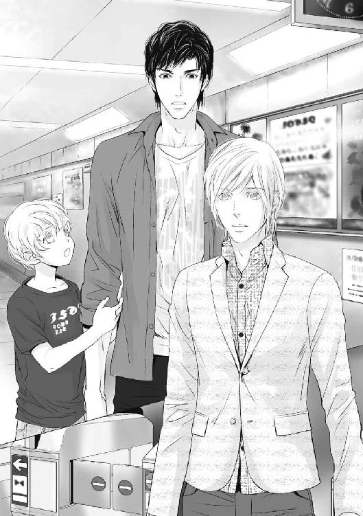
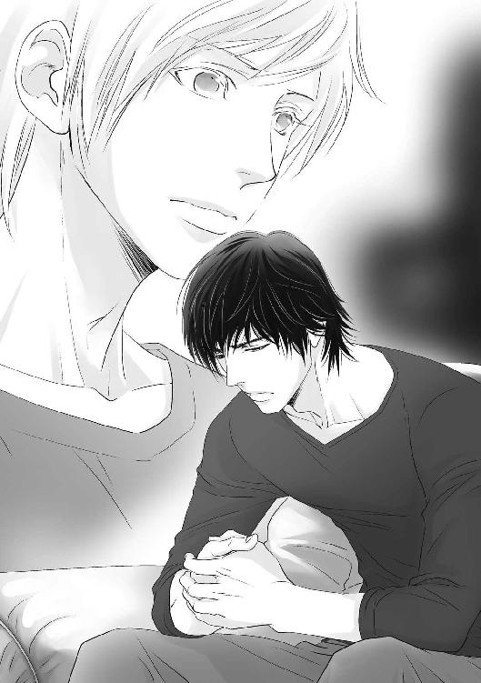
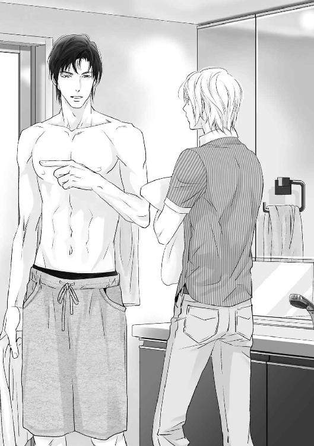
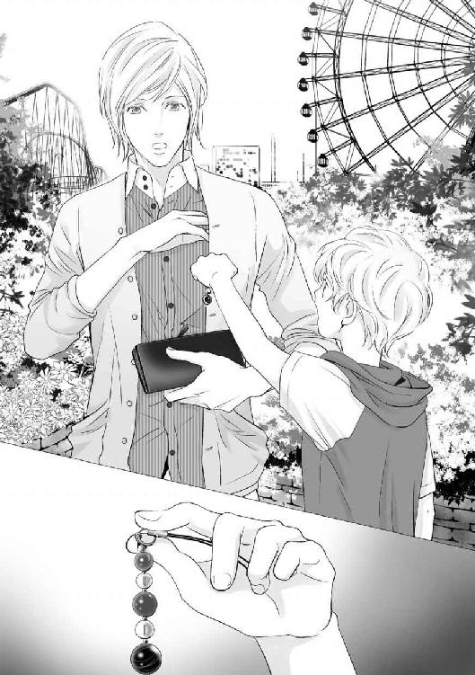
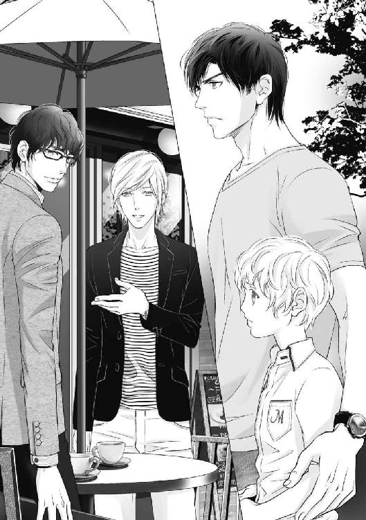
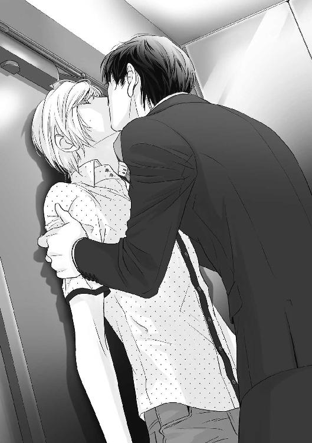
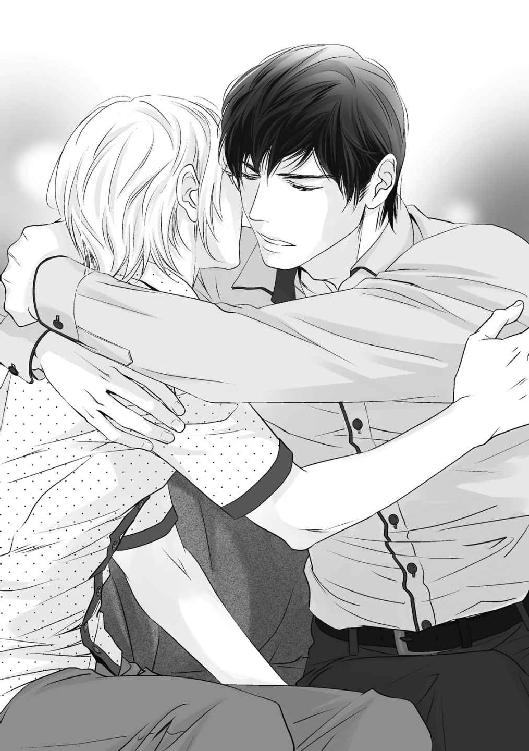
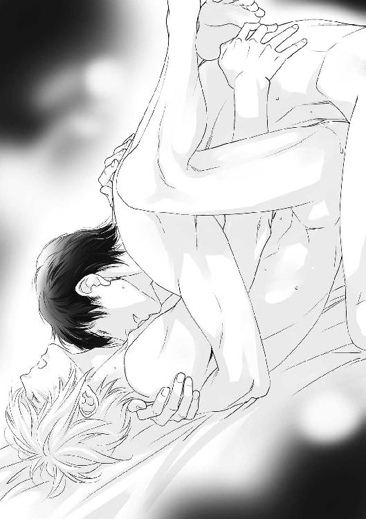
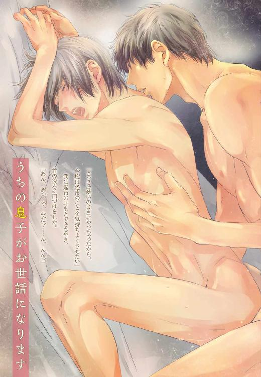

| うちの息子がお世話になります (角川ルビー文庫) | |
| 石原 ひな子 | |
| (2014) | |
うちの息子がお世話になります
石原ひな子
角川ルビー文庫
本作品の全部または一部を無断で複製、転載、配信、送信したり、ホームページ上に転載することを禁止します。また、本作品の内容を無断で改変、改ざん等を行うことも禁止します。
本作品購入時にご承諾いただいた規約により、有償・無償にかかわらず本作品を第三者に譲渡することはできません。
本作品を示すサムネイルなどのイメージ画像は、再ダウンロード時に予告なく変更される場合があります。
本作品は縦書きでレイアウトされています。
また、ご覧になるリーディングシステムにより、表示の差が認められることがあります。
本文中に「>>>♥」が付されている箇所にはイラストがあります。その箇所を選択すると、ギャラリー中の該当するイラストが表示されます。読んでいた場所にもどるときは、イラスト直後の「このシーンはこちら♥」を選択してください。
うちの息子がお世話になります
トースターは気まぐれで、同じ二分でも焦げ目がつくことがある。でも、今日はこんがりとしたきれいなきつね色に仕上がった。
久遠未来はトーストを二枚焼き、ハムとチーズを挟む。それを二つ用意して、牛乳とバナナをテーブルに並べてから寝室に向かう。小学五年生ともなれば、簡単な朝食の準備ぐらいできる。
「お父さん、朝ごはんできたよ」
「......ん」
ドアを開けると酒臭かった。
夜中に目が覚めてトイレに行ったとき、父はリビングで酒を飲んでいた。仕事でどうしても遅くなってしまうとき以外、父はいつも早く帰ってくる。会社の人との飲み会には参加しないので、家で酒を飲むのだ。
金曜日の夜の父は、いつもこんな感じだ。そして土曜日の朝は起きられない、というのを毎週繰り返している。毎日一生懸命働いて、未来のために早く帰ってきてくれる父だから、週に一度のぐだぐだぐらい、大目に見てあげたいと思っている。
でも、今日だけは起きてほしい。
「お父さん、起きて。パン冷めちゃうよ」
「未来......、悪い。食べててくれ」
シンクの中にあった酒の瓶を見れば、昨日の夜は普段以上に飲んだのは明らかだ。起きられないのもわかるのだけれど。
「わかった。今日授業参観だよ？ 覚えてる？」
「......ああ」
「一時間目に間に合う？ ダメだったら二時間目にはぜったい来てよ。国語で、一人一人みんなの前で作文読むことになってるの」
「......ああ」
「ぜったいだよ」
「......んー」
返事がワンテンポ遅れて戻ってくる。本当に大丈夫なのだろうか。
未来は不安が拭いきれなかったが、父を信じて登校した。
しかし、父は来なかった。二時間目に読んだ作文は、仕事をがんばっている父を応援する内容だったのだ。
授業中に書いて提出したとき、先生はとても上手だと言ってくれた。今日だって、未来の発表を聞いた保護者がほめてくれた。それなのに、一番聞いてほしかった父は教室にいなかった。
父が不在なのに読みたくなかったが、駄々をこねたら、そのような育て方をしているのだと父が白い眼で見られてしまうから、未来はきちんと発表した。
今朝のように、朝食はだいたいいつも一人だ。父は仕事で疲れているのだから週末ぐらいはたくさん寝かせてあげたい、と考えるようになったのはいつからだったか。父を助けたいから朝食の準備は未来がするようになったし、父が朝食をとっている間に洗濯物を干したり取り込んだり畳んでしまったりを手伝うようになった。自分のことは可能な限り自分でする、と未来は心がけている。
たとえば土曜日出勤になってしまったり体調不良だったりしたら、授業参観に来られなくても未来は納得したのだ。けれど、父はベッドの中にいた。昨日の夜に酒を飲まなければ起きられたのだから、頭が痛いというのは理由にならない。
泣きたい気持ちを堪えて帰宅したとき、父がまだ寝室にいたことが、未来をさらにがっかりさせた。
寝室の父に声をかけたくもなくなって、未来はただいまも言わずに、リビング横の自室にランドセルを置きにいく。
テーブルの上には、今朝未来が用意したハムサンドが手つかずのまま放置されていた。もったいないからそれを昼食代わりにする。トーストしてしまったため、時間が経過したパンはもさっとした食感になっていて、おいしくなかった。
黙々と食べながら、未来は少し前の父の姿を思い出す。
なぜ父はこんなふうになってしまったのだろう。昔はこんな怠惰ではなかったはずなのに。
週末になるといろいろな場所に連れていってくれたし、外出しないときでも未来にかまってくれた。酒を飲んで土曜日を丸一日潰してしまうのはここ一年以内の話だが、昼も起きてこないなんて、どんどんひどくなっている。
その理由として、未来には思い当たる節があった。
昨晩のように、未来は時々、夜中に目が覚めることがある。トイレに行くときにはリビングを経由するのだが、テーブルに突っ伏して独り言をぶつぶつ言っている父の口から頻繁に出てくる、とある人の名前。
「よういち」と父は言う。その名前を呼ぶとき、父は決まってひどく酔っているのだ。酒を飲んでいないときにはぜったいに出てこないし、未来にもその人についての具体的な話をしてきたことがない。でも「よういち」の名前とワンセットで出てくる言葉がある。
ごめん。
父はいつも「よういち」に謝っている。
父の様子がおかしくなっていったのは「よういち」という人のせいなのだ、と未来は思っている。今も父と交流があって未来も会ったことがあるなら、直接「よういち」に父をどうにかしてほしいとお願いできるのに。残念ながら、未来は「よういち」の顔しか知らない。
父が大学生のときの写真を見たことがある。父の隣にはいつも同じ人がいたので、だれなのか聞いたら「よういち」だ、と教えてくれた。友達なのだそうだ。
でも友達であるはずのその人のせいで、今、父は苦しんでいる。ごめん、というからにはケンカをしたのだろう。父が「よういち」にひどいことをしたのかもしれない。けれど、もう許してあげてほしい。未来はこんな父の姿を見たくない。
未来は顔しか知らない「よういち」を恨んでいる。父が授業参観に来られなかったのも「よういち」のせいだ。
未来は父に反抗したことがない。仕事を一生懸命がんばっている父を応援しているし、未来を育ててくれる父が大好きだ。時々寂しいと思うときもあるけれど、大変なのはわかっているから我がままは言わない。でも、今日ばかりは我慢できなかった。
友達の家に遊びに行くだけだし、どうせ眠っているから、と未来は寝室にいる父に声をかけずに家を出た。
大通りに出て、青信号に変わったのを確認してから横断歩道を渡る。ふと気づいたら目の前に大きなトラックがあった。
ナンバーが目前に迫ってきたと思ったが、気がついたら狭い場所に入り込んでいた。エンジンの音が顔のすぐ上から聞こえてきて、自分がトラックの下にいるのがわかった。車の下なんて初めて見た。
うるさいぐらいだったエンジンの音がどんどん小さくなっていって、未来は音のない世界に入り込んでしまったようだった。なにも聞こえなくなり、目の前が少しずつ暗くなっていく。
「未来っ！ 未来っ！」
無音なのに、未来の名前を叫ぶ父の声だけは聞こえたような気がした。でも父はさっきまでベッドの中にいたのだから、こんなにすぐにここまでやって来られるわけがない。きっと、来てほしいと願った未来の幻聴なのだろう。
怖い顔をした母が、あなたはいつもあの人のことばかり、と言っている場面を急に思い出した。母がいなくなったのは、その直後のことだ。あの人、というのがだれなのか、未来には察しがついている。母が家を出ていった理由もまた、ひょっとしたら「よういち」にあるのかもしれない。
父と母と暮らしていた家に戻りたい。
保育園の頃によく遊びにいった大きな公園で、父と母が楽しそうに話している。昔の広いマンション。母の笑顔。母に抱っこされているときの幸せな気持ち。保育園の友達。未来の頭の中で次々と場面が切り替わっていく。
昔は楽しかったのだ。それなのにある日突然母がいなくなり、父はあんなふうになってしまった。その原因は「よういち」に違いない。
「よういち」なんていなければよかったんだ。
はっと我に返ったら、未来は景色の違う場所に立っていた。左右をきょろきょろ見渡してみると、大きな池や遊具など、見覚えのある光景が目に入る。保育園の途中まで未来はこの近くに住んでいて、週末はいつも父と母と遊びに来ていた公園だ。
今はこの公園がある最寄り駅から私鉄で数駅の場所に住んでいるから、すぐに来られる距離ではない。
なんでこんなところにいるんだ？
未来は首を傾げる。
友達の家に遊びに行こうとしていたはずだった。学校から帰ってきて、ご飯を食べてすぐに家を出たからまだ昼過ぎのはずなのに、太陽の色はオレンジで沈みかけている。
一度、頭を整理してみる。
未来はたしかにトラックに轢かれたはずだ。車の裏側の光景は、ついさっき見たばかりだから鮮明に覚えている。でもなぜか痛みがない。
また、自宅のすぐ近くだった事故現場とはかけ離れた場所にいるから、まるで夢を見ていたかのような気分だ。それともトラックに轢かれたのが夢なのか。
「どうしよう......」
外は少しずつ暗くなってきているし、いつまでも外にいるわけにはいかない。帰り方はわかるから、ひとまず家に戻ろう。
広い公園の中を出口に向かって歩いているとき、ベンチに置いてあった一冊の雑誌が目に入った。未来の愛読している週刊の少年誌だ。一度読んで捨てられたのか、まだきれいだった。
「最新号かな？」
見たことがない表紙につられてつい足を止めてしまう。
未来はベンチに腰を下ろし、雑誌を開いた。必ず最初に読む漫画は近未来ファンタジーだ。毎号ハラハラドキドキの展開で、発売日が待ち遠しい。
読んだことのない漫画が連載途中だったり、知っている作家が未来の知らない話を描いていたり、なんだか変だ。首を傾げながらパラパラめくっていくと、未来の大好きな漫画は最後に掲載されていた。読んだことがある内容で、コミックスで言えば二巻の途中だ。
なんでこんなに古い漫画が雑誌に載ってるんだ？
不思議に思ってもう一度表紙から裏表紙までじっくりと見返してみたら、雑誌で頭を殴られたみたいな衝撃を受けた。新品そのものの雑誌の発行年月日が六年前だったのだ。
未来は首を傾げつつ植込みに捨てられていた新聞を見てみる。それも六年前の日付だった。
「......お父さん」
授業参観に来てくれなかった父に対して未来はさっきまで怒っていた。けれど今は心細くて、父に会いたくて仕方なかった。
「すみません。今は何年ですか？」
未来は犬の散歩中だったお姉さんに声をかけた。返ってきた答えはやはり六年前だ。
なんでどれもこれも六年前なの？ わけがわからないよ。
「どうしたの？ なにか困ってるのかな？」
自身になにが起こっているのか理解できず、雑誌を持ったまま右往左往している未来に、一人の男性が声をかけてきた。
救世主のように思えたその柔らかな声にほっとして未来は振り返る。しかし一瞬にして天国から地獄へと突き落とされた気分になった。
くっきり二重の大きな目が印象的で、ふんわりとした優しい雰囲気を持つこの男性を、未来は知っている。
仕事がはかどらないとき、今永遙市は近所の公園を散歩するのが習慣だ。
高い木に囲まれた広い敷地内をふらふらしていると気分転換になる。遙市は小さなデザイン事務所のデザイナーとして働いており、自宅アパートと職場は徒歩圏内だ。
金曜日の夕方は人でにぎわっている。行き交う人たちのファッションや散歩中の犬を眺めたり、考え事をしたりしながら歩いているとき、そわそわと落ち着きのない小学生の男の子を発見した。
七月の終わりの今頃はまだ日が長く、空は充分に明るい。ただ時間が時間なので遙市は気になり、少し離れたベンチに座って彼の様子をうかがってみた。しかし両親または友人がやってくる気配はないし、少年がだれかを待っているようにも見えなかった。
焦っているのかと思ったらベンチに置いてあった漫画雑誌を読み始めるなど、少年の行動は支離滅裂だ。子供に接する機会がほとんどないので、遙市は不思議な気持ちで彼の様子をうかがう。
少年は雑誌を読み終わるや再び落ち着きがなくなって、途方に暮れた表情に変わってきた。やはり困っているようで、いよいよ見捨ててはおけなくなった遙市は、躊躇があったものの彼に声をかけた。
迷った理由は、やはり犯罪者扱いされたくないからだ。ちょっとしたことですぐに通報される世の中だ。たとえば迷子を交番に送り届けようとしても、一緒に歩いていたことで誘拐犯扱いされる可能性だってゼロではない。
触れ合う経験がなかったために距離を感じてしまうだけで、嫌いというわけではないのだが、遙市は子供という存在が謎で、近づきがたい意識がある。
けれどそれらネガティブな感情よりも、少年を放っておけない気持ちのほうが勝つ。かつて遙市に、困っている人がいたらできる範囲で助ける、と言った人がいたのだ。
「どうしたの？ なにか困ってるのかな？」
少年はくりっとした目のかわいらしい顔をしている。背丈は標準的身長の遙市の胸ぐらいだ。おそらく高学年だろう。
手助けするつもりで声をかけたのに、少年は眉をひそめて遙市を見返してきた。
知らない人には気をつけろ、と親に言われている子なのかもしれない。遙市はまだ二十八歳だが、このぐらいの子供からすれば充分におじさんだ。幼稚園児ぐらいの幼い子ならまだしも、おそらく二桁年齢だろう少年には知恵がある。面識がないのに突然話しかけてくる謎の男を警戒してしまうのは仕方がない。
とはいえ想像とは真逆の反応をされてしまい、遙市はひそかにショックを受けている。
「僕は今永遙市っていうんだ。この公園の近くに住んでるんだよ。きみが困ってるように見えたから声かけたんだけど、大丈夫かな？」
子供とどう接していいかわからないものの、助けてあげられるかもしれない、ということだけは伝えたかった。
遙市は名乗った上でわかりやすく説明したつもりだったのだが、少年はますます険しい顔つきになっていく。
「名前聞いてもいい？」
それでも遙市はめげずに話しかける。少しでも警戒心を解くために、できるだけ柔らかい声でゆっくり話しかける。少年のＳＯＳを感じ取って声をかけた以上見捨ててはおけなかった。
「......久遠未来」
ぼそっとつぶやかれたその名前に、遙市は一瞬どきっとした。珍しい名字につい反応してしまったのだ。
同じ名字を持つ人と最後に会ったのは、もう六年も前の話だ。普段は意識していないのに、ふとした拍子に反応してしまうなんて、遙市はまだ引きずっているのだろうか。
いや、そんなことはない。突然だったから驚いただけだ。
「名前教えてくれてありがとう。未来くんは、おうちの人と遊びにきたのかな？」
遙市は気持ちを切り替え尋ねると、未来は無言で首を左右に振った。
「帰る」
未来は唐突に、駅方向に歩き出した。まるで遙市から逃げるような振る舞いに首を傾げつつ、未来の後を追う。まだ充分に明るいが、空には星が浮かび始めたし、時間的には午後の七時をとうに過ぎている。ここは繁華街で、駅まで一人で行かせるのは不安だった。
「家はここの近くなのかな？」
「違う。電車」
「近所の子じゃないんだね。一人で遊びに来たのかな？ 家がある駅は？」
聞けば、私鉄で数駅の場所にある、高級住宅が立ち並ぶ土地に住んでいるらしい。
駅に着いて切符を買おうとして、未来は再び落ち着かなくなった。ＩＣカードや現金を持っていなかったのだ。しかし公園に探しに戻る素振りを見せたりポケットを確認したりする様子がないので、落としたというよりは最初から持っていなかったのか使い切ってしまったのか。
まさか、家出少年か？
嫌な予感が一瞬頭を過ぎった。
「どうしよう。帰れない」
「僕が買ってあげるから心配しないで。何年生？ 子供料金で大丈夫？」
「五年生」
子供料金なら百円もしないし出してやることぐらい、どうということはないのだが、未来が家出してきた可能性を思いついてしまったものだから、遙市は躊躇する気持ちもあったのだ。
もしも自宅ではない場所に向かっていたら？
でも、「帰る」という未来の言葉を信用しよう。
子供用の切符を買ってやり、未来と一緒に改札をくぐる。
「もう遅いし、親御さんは心配してるだろうから、家に連絡入れたほうがいいよ」
公衆電話を探したが、改札の中にはないらしい。遙市が携帯電話を渡すと、未来はちらりとこちらの顔色を窺った。借りていいのか、という表情に見えたが、口数が少ないので真意は汲み取れない。
いきなり誘拐犯呼ばわりしてくるような変な親ではありませんように......。
未来が電話の向こうの、おそらく保護者だろう人と話している間、遙市はそれだけを願っていた。
もしも遙市が人の親なら、こんなにおどおどしながら未来に接していなかったかもしれない。保護者という存在、子供への接し方、なにもかもが未知だし、今後も遙市には知り得ない世界だ。
「お父さんが電話替わってほしいって」
遙市の祈りも虚しく、未来が電話を寄越してきた。
きちんと事情を説明すれば、たいていの人間は理解し合えると思っている。しかしごくたまに、そうではない人がいるのはニュースなどで見て知っている。未来の父親が前者だといいのだけれど......。
遙市は重い気持ちを抱えながら未来から携帯電話を受け取った。
『未来の父です。すみません、ご迷惑をおかけしてしまったようで。お恥ずかしい話ですが、なぜ未来がそのような所にいるのか私もわけがわからなくて』
未来の父親は現状を理解しがたいようで、少々焦っているのかかなり早口だった。
聞き覚えのある低い声に感じるのは、きっと懐かしい名字のせいだ。
小学五年生なら誕生日を迎えて十一歳になる年齢だ。もしも彼に子供がいたなら、十九歳のときの子供になってしまう。遙市はそんな話を一度も聞いたことがなかったし、隠していたということもないだろう。だから、別人だ。
『未来を迎えに行きます。今からすぐ家を出てそちらに向かったとしても、到着までに三十分弱かかってしまうんですが、その間、未来をお願いしてもよろしいでしょうか。大変申し訳ないのですが』
「もちろんそのつもりです。僕も一緒に改札の中に入ってしまっているので、最寄り駅まで未来くんを連れていきます。そのほうが早いですし」
『そうですか......。ではお言葉に甘えさせていただいてもよろしいでしょうか。ありがとうございます』
一番の難関だった保護者がクリアできたことで、遙市は肩の荷が下りた。気持ちが楽になって、電車に向かう足取りは軽やかだ。しかし間もなく発車する電車に乗り込もうとしたら、未来に拒絶されてしまった。
「ここでいい。お父さん駅まで来るんでしょ」
「そういうわけにはいかないよ。未来くんを連れていくってお父さんと約束しちゃったんだから」
「お父さんには僕から言っておくからいいよ。バイバイ」
未来はさっさと電車に乗ってしまい、遙市はホームに取り残される。
電車に乗ってしまえばあとはもう降りるだけだし、父親が駅まで迎えにきてくれることになっているので、一人で電車に乗せてしまっても問題はない。一人で小学校や塾などの習い事に通っている子だっているのだから。
しかし電車で事故が起きて途中で止まるかもしれないし、父親がなにかのトラブルで駅に来られない可能性だってある。アクシデントが起こらなければいいけれど、起きたときのことまで考えておかなければならない。
そうですか、と素直に引き下がるつもりはなく、遙市はドアが閉まるぎりぎりのところで電車に乗り込んだ。
未来はきっと人見知りで、見ず知らずの人と会話をするのが苦手な子なのだろう。心から迷惑がっているのは充分に伝わってくる。それでも、遙市は未来のすぐそばに立った。ただし緊張させないよう車内では声をかけない。
ドアに映った未来の表情は険しい。今すぐに逃げたい気持ちなのだろうけれど、ほどほどに混雑している車内での移動は難しい。
あともう数分の辛抱だ。父親に引き渡したらすぐに消えてあげるから、少しだけ我慢してほしい。
「ありがとう」
居心地の悪い空気を感じながら最寄り駅に着くや、未来はぶすっとしたまま言った。きちんとお礼を言える子であったことにほっとして、遙市は笑顔で言葉を返す。
「どういたしまして」
しかし遙市の言葉は右の耳から左の耳で、未来は階段を駆け下り、改札に走っていってしまう。きっと心細くて、早く父親に会いたいのだろう、と思うことにする。
遙市もまた急いで追いかけていった。改札の前には背の高い男性が立っている。ほかに待ち合わせらしき人の姿はなく、また未来が脇目も振らずに駆け寄っていった様子を見るに、おそらく彼が未来の父親だ。
父親はまず、未来の姿を見て目を丸くした。遙市もまた、一歩一歩改札に近づいていくにつれて彼の驚きが伝わってきたかのように鼓動が速まっていく。
噓だろ......？
次に驚いたのは遙市だ。
改札の中で思わず足を止めてしまう。しかし背後から人の波に押し流され、自分の意思に反して父親の前までやってきた。
そしてまた父親が、今度はまるで幽霊でも見たかのような衝撃を受けた顔で遙市を見下ろしている。 >>>♥
「......遙市？」
人違いだと思いたかった。なにかの間違いだ、と。しかし目の前の彼は遙市を知っていた。そして、遙市も。
朔には二度と会いたくないと思っていたのに、あまり変わっていない姿を見て、遙市の記憶が一気に六年前に連れ戻される。
「お父さん、帰ろう」
一刻も早く遙市から離れたいと考えているらしい未来は、朔の腕を引っ張る。
「い、いや、ちょっと待って。きみはだれだ？」
朔は困惑した表情で未来を見下ろす。
息子の存在を否定するのか？ 未来は朔をはっきりお父さんと呼んでいるのに。
まさか本当は十代で父親だったとは言えないからごまかしているのだろうか。
遙市は一瞬そんな風に考えたが、朔の表情は焦りよりも戸惑いで、偽っているようには見えなかった。
「だれ、って。未来だよ」
「未来を知ってる？ どこの子なんだろう？」
「お父さんの子だよ。なんでそんなこと言うの？」
「未来はまだ保育園の年中で、五歳だよ。きみのような大きな子じゃないんだ」
朔は諭すように、柔らかな声音で言った。
遙市は昔、何度も優しい声を聞いたことがあったが、未来に語りかけるのとは種類が違う。朔には少なくとも幼い子供がいて、育てていくうちに親になっていったのだ。
朔に否定された未来はショックを隠せず、目に涙を浮かべていた。未来が演技をしているようには感じられず、間に挟まれた状態の遙市もまたどうしようもなくて、なにも言えず二人の様子を見守る。
「慌てて出てきたから実家に確認してないんだけど、電話しなくてよかった」
朔は遙市に顔を向けた。
朔の話によれば、夏になると朔は保育園を休ませ、一ヶ月程度、未来を遠方の実家に預けているのだそうだ。そのため、本来ならば今現在、息子である未来は実家にいるはずなのに、近場の公園にいると連絡がきたものだから、朔は相当焦ったらしい。
「飛び出してきたけど、未来が実家からここまで一人で戻ってきたわけじゃないのがわかって安心したよ」
朔はどうして屈託なく笑えるのだろう。
新しい人生を歩んでおり、朔にとってはもうすっかり過去になってしまったのだということがはっきりわかる。遙市だって遙市の人生があって、当時のことはもう記憶の容量の中の端のほうにあったはずなのに。
目つきが鋭くて強面だが笑うと顔がくしゃくしゃになって幼くなるのも、低い声も、変わっていない。はっきりとわかる変化は、少し髪の毛が短くなった部分だ。すっかりサラリーマンが板についている。
遙市も朔も明らかに互いを意識しており、よそよそしい空気だ。無事に未来を送り届けたことだし遙市は今すぐにでも立ち去りたいところだが、朔が未来を自分の子供ではないと言い張っているので思い留まる。
「僕はお父さんの子供だよ。お母さんと顔そっくりでしょ」
「言われてみれば似てるな。顔も未来のままだし」
朔は未来をまじまじと見つめる。しかしまだ半信半疑で首を傾げている。
未来の母親、朔の妻については、話したことはないものの遙市も顔は知っている。目鼻立ちがくっきりとした愛らしい未来の顔には母親の面影を感じる。
「でも、申し訳ないけど、何回も言うけど俺にはこんなに大きな子なんていないんだ」
「自分が知らないだけで、じつは生まれていたという可能性は？」
「遙市、怖いこと言うなよ」
朔は眉を下げた。
「お父さんのちんこにはほくろがみっつあるの。それを僕が知ってるっていうのは証拠になる？」
「こ、こら、公衆の面前でなんてことを......。せめて小声で」
子供を優しく諭すなんて、昔の朔からは想像できなかった。大学時代は、ごくたまに公共の乗り物や飲食店などで幼い子と接するぐらいだったから、子供に慣れていなかったのは当然だ。けれど当時よりも小さな存在に対しての接し方が身についているのは、朔が父親になった結果なのだろう。姿かたちは変わらないのに別人を見ているような新鮮さがあった。
「誕生日は四月二十五日。家の電話番号は──」
母親の名前や誕生日、朔の誕生日、祖父母の名前など、次から次へと個人情報を羅列していく未来に、朔は一応未来の言い分を受け入れたようだ。
「きみが未来で俺の息子だ、っていうのは信憑性あるな。顔も未来だ。でも、どう考えてもきみの年齢がおかしいんだよ。それについて俺を納得させられる？」
朔の問いかけに、未来は「もちろん」と大きく頷いた。遙市も興味があり耳を傾ける。
「今、何年？」
未来の簡単な質問に答えた朔は、同意を確認するように遙市を見た。遙市も、間違っていないと頷く。
「さっき僕はほかの人にも聞いたの。それでわかったのは、僕は六年前の世界に来てしまったってことなんだ」
遙市と朔の言葉から確信を得た未来は、理由や方法はわからないが六年後の世界からやってきたのだと持論を展開し始める。
六年後の未来が小学五年生なら計算が合うらしく、朔は考え込んでしまう。
「遙市はどう思う？」
「僕は五歳の未来くんに一度も会ったことがありませんし、西田先輩の生年月日も知りませんし、判断はできませんよ」
西田、とは朔の妻の旧姓だ。口からついぽろっと出たことで、朔とは昔からの知り合いだと認めてしまったようなものだ。未来は気にも留めないだろうけど、遙市としては、朔とは距離を保ったままにしておきたかったのに。だからあえて敬語で話をしているのに。
「噓じゃないよっ！」
「でも時空を超えるっていうのはやっぱりどう考えても無理だと思うんだ」
未来はとても噓をついている表情ではないのだが、やはりタイムスリップなどぜったいに不可能だ。
しかし遙市が何度否定しようとも、未来は決して引かず必死に食い下がってくる。
「無理じゃないって！ この漫画だってショータが未来からくるじゃないか」
未来は遙市に、手に持っていた週刊漫画雑誌を見せた。
漫画の世界と現実とを混同してしまうのは、未来が純真だからなのだろうか。小学五年生ともなれば現実と物語の区別はつくはずなのに。ひょっとしたら未来はまだサンタクロースがいると思っているかもしれない。
友人かインターネットか、いずれ事実を知るだろうから無理に現実を教えなくてもいいとは思う。無垢な心を穢したくもない。しかし自分たちの置かれている状況を考えるとそうも言っていられないのが現状だ。
その前に、ひとつ確認しておきたいことがある。
「ショータってその雑誌で連載中の『きまぐれ苺学園』？ あれって女子校が共学になったけど、新入学生の男子は主人公のショータ一人しかいなかった、っていう萌え漫画だよね？ もしも未来から来たって設定だったとしても、そういうのは漫画とか小説の中だけの話で、現実にはありえないんだよ？」
「ありえるよ！ だって僕がここにいるんだから。それと『きまぐれ苺学園』は最初ショータがモテモテの話だったけど、途中から変わったんだよ。普通の高校生だと思ったらじつは未来からやってきた時空警察で、っていうのがわかって、それで苺ちゃんが──」
「ちょ、ちょっと待って！」
遙市は慌てて未来の言葉を遮った。
未来が六年前の世界からタイムスリップしてきたなんて信じていない。信じていないのだが、次から次へと物語の先を明かされたら冗談だったとしても止めたくなる。もしも、仮に、万が一、漫画の内容が本当だったとしたら？ なんて思ってしまうあたり、未来の言葉を信じかけているのかもしれない。
「というか『きまぐれ苺学園』って六年後も続いてるの？ 打ち切られそうで毎号ヒヤヒヤしながら読んでたんだけど」
「時空警察編に突入してからすごく面白くなって、アニメと劇場版にもなったんだよ！」
「映画っ？ そんなすごいことになってるの？」
「だって本当に面白いんだもん。最初のほうはちょっと話が変わってて、アニメは時空警察編からの放送で、タイトルも『タイムトリップトラベラー』になっちゃってるけど」
遙市が漫画の話に食いついてきたのがうれしかったのか、意気揚々と自分の持っている情報を教えてくれる。漫画の話をしているときの未来は、ぶすっとしていた先ほどとは打って変わって、素直な子供に見えた。
「これが本当だとしたら、僕は六年分のネタバレを聞いてしまったってことなんだよな......」
「本当だってば！ 僕の言ってること信じてよ」
「理論上は無理。でも正直、自分でもよくわからなくなってきた」
「なんの話をしているのか、俺にはさっぱりわからないんだけど」
遙市と未来との会話についていけない朔は、首を傾げている。
「お父さんは全然漫画のことわからないでしょ。アニメも見ないし。でもこの人は雑誌読んでるみたいだから話が通じてるの」
遙市は昔から漫画や小説が大好きで貪るように読んでいたし、映画も好きだ。今でも週刊少年誌や青年誌を買っているのだが、未来の言うとおり、朔は漫画を読まない。趣味や習慣が大きく変わるとは思えないので、朔は今も漫画は手に取らないのだろう。
未来のちょっとした言葉から、不可能が可能に思えてきてしまう。それは朔も同じらしく、未来が本当に自分の息子で、六年後の世界からやってきたと信じ始めていた。
「この子、連れて帰っていいのかな。六年後からやってきた未来じゃなくて、本当はちゃんと別の名前があって、その子が捜索願を出されていて、明日明後日あたり公開捜査が始まったら......」
「そうしたら、誘拐犯になりますね」
「だよな......。俺はそれが怖い」
朔はため息をついてから、我に返ったみたいにはっとした。それから、未来の後頭部の髪の毛をかき分ける。
「自分では見られないし、普段は髪の毛に隠れているから、たぶん未来は知らない。未来の頭の中に、生まれつきの小さなあざがあるんだ。形がハートマークでかわいくて──」
朔は目を大きく見開き、髪の毛を触っていた手の動きが止まった。
黒か白か。遙市も気になり横から覗き込んでみて、朔と同じ顔になった。口をぽかんと開けたまま、遙市と朔は互いの顔を見やる。
「ねえねえ、あざはあったの？ あったよね？」
衝撃を受けて言葉が出ない大人二人をよそに、未来は天真爛漫な声で問いかけてくる。
遙市は夢を見ているのだろうか。二度と会わないと決めていた朔に会ってしまうし、遙市が今まで生きてきた常識の中では到底説明がつかない状況に陥ってしまっている。夢であってほしい、と遙市は心の中で何度も繰り返した。
「ああ......、あったよ」
朔もまた、信じられない気持ちでいっぱいなのだろう。朔の気持ちは震える言葉に表れている。自分の子供であるのだから、その衝撃は遙市の比ではないはずだ。
「きみは、間違いなく未来だ」
朔は納得した上で未来を連れて帰ることを決めた。
未来は自分が朔の息子だと認められたことがうれしいらしくて、遙市と出会ったときとは一転、かなりご機嫌の様子だ。
未来がこちらにやってくる前、六年後の世界ではまだ夏休みに入っていなかったらしい。朔の実家に行くのを毎年楽しみにしているのだそうだ。
「夏休み中は毎年おじいちゃんの家で過ごしてるんだよ。まさくんとけいちゃんの兄弟も僕と一緒で、子供だけで泊まりにくるんだ。子供がいっぱい集まるから楽しいんだよ」
「うちって本家でさ。俺が子供のときも、毎年正月と夏休みはうちに従兄弟たちが長期間泊まりに来てたんだよ。未来は一人で寂しくない？」
「全然！ 小さい頃から嫌だって思ったことないよ」
「そうか。楽しいならよかったよ。今年も、未来はもちろんだけど、親にも申し訳ないって思いながら預けてきたし」
「だって、山の中入ったり水のきれいな川で遊んだり、東京ではできないことがいっぱいできるんだよ？ カブトムシもいっぱいいて捕り放題だし、本当に楽しいんだ。お兄ちゃんたちも年下の子たちもいっぱいいるから全然寂しくない。ねえ、お父さん、僕ね、家の近くの川にかかってる橋から飛び込めるようになったんだよ」
「すごいなぁ、未来は。あそこって橋そのものは低いけど、子供のときはすごく高く感じてたからな」
寂しくない、と未来に言われてほっとしたらしく、朔は小さく笑って未来の髪の毛をくしゃくしゃにした。その表情や仕草は優しい父親そのもので、遙市の知らない六年分の朔がそこにいた。
「そうだ、未来の電車賃払ってくれたんだってな」
朔は財布を開いた。
「......ごめん、小銭がなかった。崩してくるからちょっと待ってて」
「少額だし、別にけっこうです。それでは僕はそろそろ失礼します」
階段を上がろうとする朔に声をかけ、遙市は改札の中に入る。
「ちょ、ちょっと待って、遙市」
人が少なくがらんとしている改札の向こう側から大きな声で名前を呼ばれ、遙市はぎょっとして振り返った。
「遙市、今度飯でも食わない？ 未来を連れてきてくれた礼がしたいし。あと切符代も払ってないし」
「困ってる子がいたら普通助けますよね。お気持ちだけいただきます」
遙市は今度こそ朔を振り切り、追いかけられているわけでもないのに全速力で階段を駆け上がる。ホームに来ていた電車の扉がちょうど開いたので飛び乗った。
週末の下り電車は混雑している。遙市はドアの前に立ち、ゆっくりと流れる外の景色を眺める。
未来が朔の息子だったなんて。
遙市はため息を漏らす。
未来がいなかったら、こんなことにはならなかったのに。
朔の自宅の最寄り駅まで連れていってしまったことを後悔している。
しかし、もしも未来が朔の息子だと最初からわかっていたとしても、遙市は困っている子供が目の前にいるのに放置するなんてできなかった。したがって、結果は同じだ。
出会う前の心の準備ができるかできないか、その差でしかないのだ。
遙市は遠くの夜の景色から、窓ガラスに視線を移す。散歩をしていて、ちょっと足を延ばしただけなのに、窓に映る自分の顔はひどく疲れているように見えた。
朔に会ったとき、遙市はもっと動揺するかと思った。しかし朔は未来が息子であるということを否定したため、意識が子供のほうへ向き、朔の存在は二の次になってしまった。
朔も昔と変わらない口調、同じ顔を遙市に向けてきたが、案外、遙市と同じで混乱していて、それどころの話ではなかったのかもしれない。朔は遙市とは違って当事者の親だったのだから。
遙市は朔の自宅の最寄り駅を知ってしまったが、朔はこちらの情報はわからないはずだ。未来に携帯電話を使わせてしまったのは痛恨のミスだが、もしもしつこくかかってくるようなら着信拒否か、番号を変えてしまえばいい。仕事用の携帯電話は別にある。
そんなふうに考えて、遙市ははっとした。
朔から電話がかかってくると思っているのか？
まるでそうなってほしいと期待しているみたいで、遙市は恥ずかしくなってくる。窓に映る自分から目を背けるために顔を伏せたら、窓ガラスに額を打ちつけてしまった。思った以上に勢いがついていたらしく、ゴンッ、と大きな音がして乗客の注目を集めてしまう。
朔とは、二度と会いたくなかった。でも死に際にだれの顔を見たいかと問われたら、遙市は朔と答えてしまうかもしれない。
遙市にとって、朔はそんな存在だった。
朔との出会いは、遙市が大学一年生のときだった。新入学生勧誘をしていたのが三年生の朔で、さわやかなスポーツマンに惹かれたのがきっかけだ。あとになって思えば、あれが一目惚れの瞬間だったのだろう。
遙市は人付き合いがあまり得意ではなかったし、サークル活動などこれっぽっちもするつもりがなかった。しかし遙市が初戦負けクラスとはいえ高校総体の男子シングルで全国大会出場経験者とわかると、朔の勧誘がしつこさを増し、遙市はとうとう根負けしてテニス部に入部したのだった。
遊び目的のサークルではなく、大会に出場するような部活動だったことも、入部の後押しになった。そして、朔の存在も。
強豪の大学に入っていたら状況は違ったのだろうけれど、遙市の大学は高校時代のようなスパルタではなかった。高校でやめようと思っていたが、テニスを続けてよかったと思ったほどだ。
二十八年の人生を振り返ってみると、大学時代が一番楽しかった。
そう思える最大の理由が朔の存在だ。
朔は関東にほど近い地方の名士の息子で、教養があって頭がよくて、話し方や態度に嫌みがない。朔に悪印象を抱く人はいないのではないかと思えるほどの人物だった。
そのバックグラウンドのみならず、長身に端整な顔立ちという見た目もまた、女子が群がる要因だ。
朔の欠点をあえて挙げるとするならば、女癖の悪さだ。
とにかく外見がいいので昔からちやほやされて育った朔には、甘い蜜に吸い寄せられる蝶々のように次から次へと女が近づいてくる。朔はそれを全部いただいてしまうのだ。それでいて女性関係でのトラブルが起こらないのは朔の手腕というべきか。
女性関係の部分だけをのぞけば、遙市にとって朔は理想の男性像だった。多くの女性を虜にする力を持っているのだから、遙市だって惚れないはずがない。
練習試合のために移動していたときの話だ。遙市たちテニス部の部員がバスに乗り込んで車内は混雑していた。たまたま遙市と朔は隣同士で座っていた。
前の席の赤ちゃんがぐずり始めた。狭い車内で泣き出したため、サラリーマンらしき中年男性はあからさまに舌打ちをしていて、若い母親は気まずそうに子供をあやしている。
遙市は子供に接する機会がないし、得意だとも思っていない。しかしたまに電車などでぐずる赤ちゃんと遭遇したときには、昔絵本で読んだこれを実践しているのだ。
人差し指に、持っていたペンで顔を描く。笑顔にするのがポイントだ。そしてその指を、座席の陰からひょっこり覗かせてみる。すると不思議なもので、よほど機嫌が悪くない限りは、ほとんどの赤ちゃんが食いついてくるのだ。前の座席に座っている赤ちゃんも、顔の認識ができる程度の月齢だったのが幸いしたのか、遙市の人差し指に意識を向けた。同時にぐずりが止まる。
「なにその技。遙市、すごいな。俺もやりたい」
よほど珍しかったのか、朔も自分の指にシンプルな顔の絵を描いた。しかも左右の指、十本全部に。
朔の頭の中になにか物語ができているようで、十本の指を駆使して寸劇を始めた。赤ちゃんに通じるかよ、と思いつつその様子を見守っていたら、赤ちゃんは母親の体から身を乗り出すようにして、朔の指遊びを見ていたのだ。まさに「食いつく」といった様子で、すっかりご機嫌になっていた。
前の座席の母子と降りるバス停が同じだった。彼女は折りたたんだベビーカーやバッグなど、大荷物だった。それにいち早く気づいた朔は、母親の荷物をひょいと抱えて運ぶのを手伝っている。
母親は何度も頭を下げて去っていった。
遙市も、こういう場合に気づいたとき、手を差し伸べたいとは思うのだ。しかし急に見ず知らずの女性に声をかけて不審がられたり、迷惑だと思われたりしたらどうしよう、という思いが先に立ってしまい、なかなか助けられない。
しかし朔は遙市のような心配など一切しないタイプのようだった。赤ちゃんが泣いていればあやしてあげるし、女性が困っていたら荷物を持ってあげる。朔はきっと、相手がどのような人であったとしても、分け隔てなく親切にできる人なのだ。それらをさらりとやってしまえるスマートな性格を、遙市は見習わなければならない。
バス停から対戦相手の大学に向かって歩いているとき、普段は同級生と話している遙市は、今回は朔に話しかけてみた。
「久遠さんて、優しい人なんですね。ああいう親切って、普通はだれでもできるんだろうけど、僕なかなかできなくて」
「困ってる人がいたら助ける、っていうのはできる範囲でいいと思うんだよね。人に話しかけられる性格、そうじゃない人、いろいろいるし。遙市は赤ちゃんをあやそうとしてたんだから、それだって立派に助けになってたよ」
さっき母親にまでは助けの手を差し伸べられなかった遙市を、朔はさりげなくフォローしてくれたのだ。気づかいができる優しい人だ。
「それと、久遠さんはおもしろい人なんだなってわかって、ちょっと新鮮でした」
「おもしろい、なんてあんまり言われたことないんだけどな。なにがおもしろかった？」
「ぐずってる子の気をちょっと引くだけでいいのに、指全部使って、しかもわけがわかってない赤ちゃんに、なにかお芝居を見せてて......」
バスの中での出来事を思い返して、遙市は噴き出してしまった。バスの中でも笑いを堪えるのが大変だったのだ。
「久遠さんはいいお父さんになりそうだなって思います」
「そうか？ なんだ、かわいい後輩だな。せっかくだから、俺のさっきの芝居を見せてあげよう」
朔は遙市に、先ほどバスの車内で行われていた指の腹に描かれた顔たちの寸劇を見せてくる。
正直、どのようなストーリーなのかよくわからなかった。寸劇の内容よりもコミカルな動きをする気取らない朔にばかり意識が向いてしまう。
テニス部だったり同級生だったりといった自分の仲間以外の、全然面識のない人にも自然に、スマートに優しくできるのは、行動が体に染みついているからだ。遙市は朔のそのような優しさに、心が強く惹かれたのだ。
遙市が大学に入学して最初の年の、クリスマスイブの出来事だ。
部活内で恋人がいない男たちがなぜか朔の家に集結した。遙市にも先輩から声がかかり、指示通りにビールを一ケース買って初めて朔の部屋に入った。
朔は大学生なのに広いマンションに住んでいて、家具やファッションなんかもいちいち洒落ていた。
「朔が女といちゃつくのを阻止する会」という組織が結成されていて、その活動は毎年クリスマスやバレンタインなど、男と女のイベントの時期を狙って行われているのだそうだ。要するに、モテない男たちのやっかみである。この会の活動はかなり活発で、朔はクリスマスイブなど恋人たちのイベントがことごとく潰され、毎度部活の男たちと過ごすハメになっている。
それでも嫌な顔ひとつせず友人たちを迎え入れる朔の度量にまた、遙市は胸をときめかせた。数多存在する「自称彼女」たちから逃げる口実だったとしても、男友達を大切にする姿勢に好感を抱いたのだ。
先輩たちの後始末をするのが一年生の役目だ。恋人がいない寂しい一年生男子は遙市だけだったため、一人で、酔いつぶれて雑魚寝している先輩たちをリビング横の和室に運んで布団をかけたりリビングを片づけたりした。
その作業を朔も手伝ってくれようとする。
「久遠さん、僕がやりますから」
遙市は朔からゴミ袋を受け取ろうとした。しかし朔はほかの先輩たちとは違って上下関係を押しつけてくる人ではない。
「いや、俺の家だし、片づけぐらい自分でやるよ。あんまり家事は得意じゃないんだけど、たまになら気合い入れてやれるかな」
遙市と朔は手分けしてゴミを集め、遙市たちが来る前の、きれいな部屋に戻した。
「手伝ってくれてありがとう。遙市もあいつらに付き合わされて大変だったな。あとの面倒は俺が見ておくから、電車間に合うようだったら帰っていいよ」
「いえ、電車はもう......」
「なくなっちゃったんだ。じゃあ遠慮なく泊まってって。ていってもソファも和室も寝るスペースがないな」
意識がない男たちを見下ろし、朔は苦笑いする。
「俺のベッドでいい？」
「えっ？ 廊下とかで大丈夫ですよ。僕、そんな繊細じゃないんで」
朔の匂いが染み込んでいるだろうベッドに入ったら、遙市は自身にとんでもないことが起きてしまうだろう。それはもうほぼ確信していて、遙市は確実に、朔を性的な意味を含んだ目で見ていたのだ。
「前から思っていたんだけど」
遙市を寝室に連れてきた朔が言った。カーテンやベッドカバーなどのデザインはシンプルで、ベッドしか置いていない簡素な部屋だった。
「遙市は俺が好きなの？」
「え？ ななななななん......」
まさかバレているとは思っていなかったし、ましてやストレートに聞かれるとは想像すらしていなかった遙市は、朔の問いかけにしどろもどろになってしまう。
いくら言葉で否定したとしても、口調や表情は噓をつけなかった。
「やっぱりそうなんだ。あれだけ熱烈な視線を送られてたら、もしかして、って気づいちゃうよな。わりとかわいい外見なのに、彼女いないしさ」
確信を得た朔は何度か頷いた。
朔は向けられた好意を敏感に感じ取れる能力が備わっているらしい。だからモテるのか、モテるから自然と身についた技なのか。
朔のほうから話題に触れてきた今がチャンスのような気がした。アルコールは苦手だから最初の一杯しか飲んでいないが、酒のせいにしてしまおう。
「僕はその、つまり、女の人とは付き合えないんです」
はっきり「ゲイ」という言葉を使うのには抵抗があった。
今までだれにも知られたことはなかったけれど、最初に向けられる嫌悪の眼差しが朔だったらと思ったら、今この瞬間口にした言葉をすぐに撤回したい衝動に駆られた。
自分が「普通」ではないことはもうずっと前から自覚しており、だれにも言えずにいた。けれど朔は自分に好意を向けられていると察した上で遙市に話を振ってきたのだ。気づいた時点で嫌だと感じていれば、朔は遙市に、必要以上には近づいてこなかっただろう。
しかし朔はそれらしい素振りを見せなかった。朔に知られていたことを遙市が気づかなかったぐらい、態度は変わらなかったのだ。ならば思いを打ち明けても嫌悪はされないのではないだろうか。朔は優しい人だからきっと朔を嫌悪しないでいてくれる、というすがるような気持ちも、たしかにあった。
「僕は久遠さんが好きです」
「本当？ うれしいな。ありがとう」
朔はさわやかに笑って礼を言った。かわされたのだ、と思った。さすがはモテ男だ。どんな相手からでも向けられる好意を拒絶しない。
優しい人だ。けれど拒絶はしないが受け入れもしない態度は、遙市の心を深くまでえぐった。こういう場合ははっきり無理だと言ってくれたほうがマシだ。
うまくいくなんて最初から思っていないし期待もしていなかったはずなのに、遙市はショックを受けている。
バカみたいだ。なに調子に乗って告白なんかしてるんだよ。
心の中で思いつく限りの罵倒を自分自身に投げつけている遙市の姿を見つつ、朔は後ろ手で寝室のドアの鍵を閉めた。
「久遠さん？」
その行動の意味が理解できず、遙市は首を傾げる。警戒心なんてこれっぽっちもなかったのだ。
「いいよ」
朔は目つきが鋭いので、真面目な顔をしていると怖そうな印象を受ける。けれど笑うと顔がくしゃくしゃになって、とても優しい表情になるのだ。
「な、なにがですか？」
向けられた笑みにドキッとして、遙市はうわずった声になってしまう。
恋愛なんてしたことはなかったが、予感めいたものを察して心拍数が跳ね上がったのが自分でもわかった。ドクドク脈打つ音が朔に聞こえてしまうのではないか、と心配になるほどだった。
「俺のこと、好きなんだよね？」
「は、はい」
「どういうところが好き？」
「ど、どういう......、って。人に対して優しいところです。ついでに言うと、今この瞬間の久遠さんです。男に好きだって言われてるのに、気持ち悪いって目で見なかったし、罵倒しなかったから」
「男でも女でも、好きだって言われたらうれしいよ」
「でもきっと、世の中にはそんな人ばかりじゃないですから。久遠さんの態度に救われてます。久遠さんに好きだって伝えられてよかったです。だからきっと久遠さんは男女や先輩後輩に関係なく、みんなから慕われるんだと思います。周囲への気づかいとか、そういう部分も、男としてあこがれます。久遠さんのような男になりたいです」
「俺、そんなにいい人じゃないよ。すごく照れくさいよ」
「でも敵がいなそうです」
「たしかに、敵は作らないかも。争い事って好きじゃないんだ」
柔らかな笑みを浮かべた顔がゆっくり近づいてくる。
「え？ え？ ちょ......、な、なんですかっ？」
「俺は、遙市の言葉をそういう意味で捉えたんだけど、解釈違いだった？」
「いえ......、んっ」
目の前に影がかかったかと思ったら唇がふさがれた。
自分の身になにが起こっているのだろう。朔の言葉は、一体どういう意味なのだろう。
あわあわしながら背けた顔を無理やり正面に戻され、再び唇が重なる。
「慣れてない？」
「恋人なんていたことありません」
「初めてなんだ」
朔は壊れたおもちゃみたいに首を縦に何度も振った。
大学生にもなっていまだに恋人がいないとか、過去にいたこともなかったとか、傷口に塩を塗られているみたいで苦しいし、女の存在が途切れない朔にそんなことを知られるのは恥ずかしい。
「ぼ、僕は、これからも恋人なんかできませんよ。男が好きっていうだけですごく難しいと思うし」
「タイミングにもよるんじゃない？」
体を密着させたまま窓際まで後退し、膝の裏がベッドにぶつかり遙市は倒れ込んでしまう。上から朔がのしかかってきて、遙市は頭が真っ白になった。
「き、気まぐれなことはやめてください。おもしろがっているんですか？」
「気まぐれ......、なのかな？ でも今、遙市を見てたらかわいいって思ったし、男でも大丈夫かもって思ったんだ」
「そういうのを気まぐれって言うんですよ。久遠さんのことは好きだけど、そういう軽いノリとか、女をとっかえひっかえなところは嫌いです」
「嫌い、なんて酷いなぁ。俺のこと好きなんだよね？」
苦笑いする朔から、怒りの表情は感じ取れなかった。
「すすすみません。ちょっとテンパっちゃってて。なに言ってんのか自分でもよくわからなくて......」
「それが本音なんだろうから、じゃあ俺はとっかえひっかえをやめるよ。今日から遙市一筋、浮気はしない。遙市の嫌がることはしない。ほかに要望は？」
「急にそんなこと言われても......。え？ 今日からっ？」
「そう、今日から。いや、今から？」
気がついたら朔は上半身の服を脱いでいた。遙市も次々に脱がされており、朔の手際のよさに目を丸くする。ジーンズに手がかかり、遙市は体を丸めて抵抗した。
「ちょ、ちょ、ちょ、ちょ......、待っ......」
「なんで？ 嫌？」
「......嫌──」
イエスかノーで答えろと言われれば、答えは決まっている。けれど、なんでこんなに急展開なんだ？ モテる男というのは光の速度のレベルで手が早いのか。
「──じゃないです」
遙市の答えを聞いて朔は小さく笑った。
遙市は朔の視線を受け止めきれずに顔を背けてしまったから、そのときの朔の表情は見られなかった。首筋に唇が落ちてきて、遙市はたまらず目を閉じた。
出会った瞬間に朔の見た目に惚れて、部活動を通して朔の内面を知ってより好きになって、でも女関係の欠点はあって、それでも朔を嫌いになる理由にはならなかった。相手が女だから、というのも許せる理由だったのだろう。朔は女好きだから、モテるから、しょうがないと諦められたのだ。
朔は手が早い。
自分に好意を向けられているとわかれば、相手がたとえ男だったとしてもすぐに手を出すクズだったのだ。
遙市は心の中でそんな悪態をついていないと、どうにかなってしまいそうだった。
恋愛なんて一生できないだろう。
遙市は恋愛対象が男だと気づいてからずっと、そう思っていた。ゲイである自分を後ろ向きに捉えていたし、親はもちろん、友人たちにもぜったいに知られてはいけないと思い、自分の感情を必死に押し殺してきたのに。
朔との関係はある日突然始まった。
タイミングだ、と朔は言っていたのをたびたび思い出す。
朔は特定の恋人を作らない主義だと思えるほど次々と女が変わっていたし、遙市にたいしても大勢の中の一人、という認識なのだろうと最初の頃は思っていた。
けれど、予想に反して朔は遙市を大切にしてくれた。遙市が最初に伝えた要望をきちんと聞き入れてくれたのだ。女をとっかえひっかえしなくなり、遙市以外の相手を全部切った。無慈悲に捨てるのではなく、そこはお得意の社交術で女性たちを納得させて身を引かせたため、だれともトラブルにはならなかった。
とはいえ朔も男なので、通りすがりの胸の大きな女性をチラ見したり、足のきれいな女性に目がいったりしているのは遙市も気づいていた。しかし朔は遙市に誠意を見せてくれているのだから、がちがちな潔癖さを求めてはいけないと自分に言い聞かせた。醜い嫉妬や束縛心で朔を失いたくなかったのだ。
なぜ遙市なのか。女好きのはずの朔がこんなに尽くしてくれるのか。
遙市は生まれ持った性質だから受け入れざるを得ないが、朔は違う。なにもあえて男と付き合うというリスクを背負わなくたってよかったはずなのだ。それを上回るぐらい、遙市と過ごす時間が楽しいと感じてくれていたのだと思いたい。
ある日遙市は、朔に常日頃感じていた疑問をぶつけてみたことがある。なぜ遙市と関係を続けているのか。遙市のどこがいいのか、と。
「おもしろい子がいるな、って思ったのがきっかけかな。あとは、男だからかな。女とは違うから、こっちも初めてだし手探り状態なんだ」
「そのわりには、最初からかっ飛ばしてたと思うんだけど」
敬語がなくなり、久遠さんから朔と呼び方が変わっていった。
朔の言う手探りとは、的外れではないと思う。友人として考えれば、異性よりも同性のほうが気は合うのだから。遙市も心が女というわけではないので、男友達といるほうが気は楽だった。
そういう意味では、朔にとっても遙市との関係は、男同士の友情の延長だったのかもしれない。そこに体の関係が加わっただけで。けれど友人としても大切にしてくれているから、遙市は朔にとって特別な存在感があったように思える。付き合っている間、朔が遙市に誠実だったのも、そういう理由からきているのだろう。親友であり、恋人でもあるなんて、最高の付き合い方だ。
二人の時間を重ねていく度に新しい発見があった。クリスマスのとき「家事は得意じゃない」と言ったのは遙市に気をつかったのだと思っていたのだが、本当にできないらしく、気づくと部屋が雑然とし始める。遠くにあるゴミ箱に紙くずを投げて外してもそのままにしてしまう。完璧に見える人のダメな部分を知るにつけて、マイナスの印象を抱くどころか、遙市は朔をどんどん好きになった。
朔はそれこそゼロからのスタートだっただろうけれど、遙市に対する恋愛感情のメーターは少しずつ上がっていったに違いない。
遙市にとって朔はあこがれの先輩で、お互いに仲のいい友人だという認識があって、そして同時に恋人で。二人の関係に終止符が打たれる日が訪れるなんて、遙市は少しも考えたことがなかった。
こんなに長く続いたのは初めてだ、と朔がぽろりと漏らしたことがある。就職をして、初ボーナスで高価な時計を贈られたときの話だ。
さすがにもらえないと訴えたが、「遙市が社会人になったときに俺もなにかほしい」と言われて遙市は受け取れた。
朔の人生のビジョン、少なくとも数年先もまだ遙市と一緒にいると思ってくれていることがわかり、胸がつまってしまって言葉が出てこなかったのもいい思い出だ。
自分の中に激しい感情が眠っていたなんて知らなかったし、これだけの強い思いを持てる人間だったのを、朔によって教えられた。
結果的には、遙市の初ボーナスで朔に贈り物をする、という約束は、叶わなかったのだけれど。
付き合っているとき、朔は携帯電話につけるストラップだったり、寒くなってきたらマフラーだったり、たびたび遙市にプレゼントをくれた。とはいっても遙市が高価なものを受け取りたがらないのを知っているから、本当に些細なものばかりだ。
諦めていたのに、遙市は世の中の男女と同じように、普通に恋愛ができている。朔が恋人として扱ってくれている。
物を贈る行為だったり、男女の恋人たちで溢れ返るデートスポットを男二人で平然と歩いたりした。朔は周囲の人の目など気にしない人で、時々、堂々と手を繫いできたりもした。遙市のほうが恥ずかしくなって、思わず振り払ってしまったこともある。しかし朔は遙市の葛藤をきちんと理解してくれていた。不機嫌な顔を向けてきたことなど一度もない。
朔の過去の恋人たちとおそらく同じように接してくれていたのだろう。その「普通」の行動が遙市にとってどれだけうれしかったか、朔は知っているだろうか。
遙市はこの先もずっと朔と一緒に歩んでいきたいと心から願ったし、不可能ではないと信じて疑わなかった。
遙市が就職活動をする前の年から景気が少し悪くなったせいで、採用率が低かった。それでも内定が出る人は何社も受かっていたのだから、遙市が社会にとっては不要な人間だったということだ。採用試験に落ち続けていると、思考回路もネガティブになってしまう。
朔も社会人二年目となり、仕事が楽しくなってきた時期だ。
朔の会社は知名度こそ低いのだが、知っている人は知っている超優良企業なのだ。土日祝日は完全休業だし、よほどのことがない限り、残業や休日出勤はない。それでいて給料がかなりいい。
とはいえ社会人と学生とに分かれてしまうと、なかなか互いに時間を取りづらくなってしまう。三年近く付き合っているのに、朔に毎日でも会いたかったし、内定がもらえないつらさもあるしで、遙市はこの時期疲れていた。
そんな最悪のタイミングで、遙市と朔の間に亀裂が生じたのだった。
久しぶりに時間が取れてせっかく外で食事をしているというのに、朔の様子がおかしかったのだ。目を合わせないし、話しかけても上の空で、箸も進んでいない。なにか思い詰めているような顔に見えた。
仕事が大変なのだろうか。
遙市は心配で、食事は早々に切り上げ、一緒に朔のマンションに行った。
二人きりになって、リビングのソファに座り、静かで落ち着いた環境で遙市はあらためて尋ねてみた。
朔はひざの上の拳をぎゅっとにぎった。ようやく打ち明ける決心ができたのだ、と感じた遙市は、どのような内容だったとしても受け止められるよう気持ちを引き締める。
「じつは、少し前に大学時代の友人たちと飲んだんだ」
たとえば会社をやめようかと思っているとか、転勤で遠くに行くことになったとか、遙市は仕事の悩みだと思っていた。想像とはかけ離れていた内容だったので予測がつかなくなり、変に緊張してくる。
なにから話せばいいのか迷っているのか、それとも話すべきではないと思っているのか。朔の表情は苦渋に満ちているから、遙市も聞くのが怖くなってくる。
「言い訳をいろいろ考えたけど、だめだ。どんなに取り繕っても遙市を傷つけることには違いないから」
「どういうこと......？ その、会ったっていう大学の友人を好きになっちゃったの？」
「......いや」
こんなに歯切れの悪い朔を初めて見た。表情も暗い。
朔は余裕があっておおらかでかっこよくて、いつも自信に満ち溢れている人だったのに。そんな朔をこうまでさせてしまう原因はなんなのだ？
きっと、朔の言葉を聞いた瞬間に二人の関係が終わるのだろう。
遙市は不安と恐怖に襲われながら、朔と向き合う。
「......子供ができた」
朔自身も信じられないといった表情をしていた。 >>>♥
同級生たちと飲んで楽しい時間を過ごし、起きたら一緒に飲んだ中にいた女性とベッドにいたのだそうだ。記憶はまったくなかったが、関係を持ってしまったことを否定できない状況だったらしい。
遙市に言おうと思ったが、浮気はしないと約束した手前、言い出せなかった。しかし少し経ってから、彼女から「子供ができた」と告げられた。
「なんで彼女と寝たのか、本当にわからない。俺は遙市と付き合うようになってから浮気なんてしたことがなかったし、遙市は親友で恋人で、特別に思っていたから、ほかのだれかとしたいとも思わなかったんだ」
途方に暮れている、という言葉が当てはまるだろうか。急に自身に起こった事件に戸惑い、どうしたらいいのかわからない、といった様子だ。
朔は遙市に、なんて言ってほしいのだろう。ほかのだれかに相談するまでもなく、朔が取らなくてはならない行動はただひとつしかないのに。
朔は明らかに動揺していて、前後左右身動きが取れないのだろう。ならば、遙市が朔の背中を押してあげよう。
「わかった」
慌てて顔を上げた朔を、遙市は不思議な思いで見つめる。
なにか間違ったことを言っただろうか。朔の想定外の返答だったのか？
「朔を疑っていたわけじゃなくて、もともと女の人と恋愛ができる人と付き合っている以上、こういう事態が起こるかもしれない、っていう可能性は常に頭にあったんだ」
感情を殺し、抑揚のない声で話す遙市に、朔は傷ついた顔を見せた。または、予想の範囲内の出来事だったと告げられたことで、信用されていなかったのだ、と朔は思ったのかもしれない。
傷つけられたのは遙市のほうなんだけれど。
淡々としているように見えているのかもしれないが、急に後ろから頭を殴られたみたいな衝撃を受けている。呆然とするあまり、怒ればいいのか泣けばいいのかすがりつけばいいのか、どのように朔と向き合えばいいのか判断できないだけだ。
「たとえば三十歳ぐらいになったとき、親に結婚しろって言われたとするだろ。僕はゲイだし、その頃にはもういい大人なんだし、カミングアウトして親には孫を諦めてもらうかもしれない。でも、朔はそうじゃないから。遅かれ早かれご両親と僕との間で板挟みになって、いつかは悩む日が訪れたと思うんだ」
「俺はっ、......俺は、ずっと遙市と一緒に......」
自分の置かれた状況を考えたら、ここでなにを言っても噓にしか聞こえないと感じたのだろうか。朔は途中で言葉を失った。
しどろもどろになって、うまく対応できなくなっているが、遙市と付き合う前までの朔はどのように修羅場を潜り抜けてきたのだろう。大きなトラブルになった話は聞いたことがなかったから、スマートに解決してきたのだと思っていたのに。
相手が遙市だから適当に済ませられずに思い悩んでいるのだとしたら、朔にとって遙市は特別な存在だった証だ。親友であり、恋人だったから。
「僕と付き合っている間は浮気をしたことがなかった、っていう朔の言葉は信じるよ。そんな不安を感じさせないぐらい、朔は僕を大切にしてくれていたのはわかっているから」
話し合いの場を持つまでもなく遙市が現状を受け入れてしまっていることに、朔は愕然としているようだった。声も出てこないらしく、ただじっと遙市を見ている。
「酔って前後不覚になってしまって勢いでやっちゃった、っていうのは、ふざけんなって思うけど、でもまだ僕は許せる。最初に浮気しないって言わせてしまってガチガチに縛りつけたのは僕だし、性に合わないことをしてるからつらかっただろう？ でも朔がその約束を僕のために守ってくれていたことは、本当にうれしかったんだ。だって、それまでの朔の行動を知ってる人には、ＥＤか、なんてからかわれてたぐらいだし」
特定の彼女ができたのではないか、と噂されたその裏で、遙市と朔はセックスしまくりの毎日だった。彼女ではなく彼氏だが、彼らの推測は当たっていた。
「子供、って身近な存在ではないけど、やっぱり自分の子供って特別に感じるし、僕だって可能であれば自分の家族はほしかった。でも、無理だし。僕が朔に与えてあげることもできないし。ただ、朔には可能なんだよ。どういう状況だったとしても、縁があって授かったんだから、小さな命を大切にして。朔と、これから生まれてくる子供の幸せを祈ってる。でも彼女には祈れない。性格悪くてごめんね」
遙市が自分の思いを伝えているうちに、ここは怒るべき場面なのだとわかってきた。ふつふつと怒りが湧いてくるのだ。
朔が自分の意志で、興味があって彼女と寝た、と言われたほうがまだマシだった気がする。勢いで寝てしまった結果子供ができちゃいました、なんて冗談じゃない。遙市の幸せな時間を壊した朔にも、それを奪った彼女にも、腹が立って仕方がなかった。
しかしこの感情を朔にぶつけるつもりはない。だって、泣いたって暴れたって、どうすることもできないのだから。
そう思う一方で、自分では決して手に入れられない新しい家族、どのような形であれ朔に子供ができたという事実に、心が温かくなっているのも真実なのだ。
遙市は相反する感情を受け止めきれず、心中は複雑だ。腹は立つけどうれしいだなんて、遙市はどれだけ混乱しているのだろう。
「結婚式するなら、招待状は送ってくれよ。そうじゃないとみんな怪しむし。でも僕は欠席に丸を付けて返すから。親族の結婚式と同じ日だから、って適当な理由を書き添えてね」
遙市は自分の気持ちを伝え、立ち上がった。
もうこれ以上話すことなどない。
「──っ」
朔はなにか言おうとして口を開いた。
きっと、「ごめん」または「すまない」という謝罪の言葉だったように思う。しかし遙市は朔の言葉を待たずにマンションを出た。
朔に謝らせたくなかったのだ。
朔は遙市に、ひどい仕打ちをした。それは事実であり、謝罪は受け入れるべきだったのかもしれない。しかしあの場面で朔が謝ったら、いずれこの世に誕生してくる子供が、なんだか罪深い存在のように思えてしまいそうだったのだ。
子供がきっかけで遙市と朔は別れを選択せざるを得なかったとはいえ、その子のせいにしてほしくはない。小さな命にはなんの罪もないのだから。
父親と母親に、それぞれの祖父母たちに、友人たちに、祝福されて生まれてほしい。もちろん遙市も、朔の子供の誕生を心から祝福する。
遙市にとって朔は大切な恋人だった。そのうえとても気の合う友人でもあった。そして遙市は、恋人と一番の友人を同時に失ったのだ。
何年も経てば笑って話せる日が訪れるのだろうか？
今はこれっぽっちも楽観的にはなれず、一人暮らしのアパートで鬱々とした日々を過ごした。何度も朔から電話やメールが来ていたし、遙市の部屋を訪ねてきたこともあったが、遙市は応じなかった。
就職活動には身が入らずほとんど諦めていた。夏が終わろうとしている時期に差し掛かっても就職先は決まっていなかった。
近くに朔がいると思うだけで気が変になってしまいそうなほど追い詰められていた遙市は、思い切って海外へ逃げた。
といっても無鉄砲に飛び出したのではなく、海外で生活している伯母に相談をした上で決めた。伯母は空き部屋を提供してくれたり、短期の語学留学のための学校の手配をしてくれたりと、遙市をかなり手助けしてくれた。就職を断念した遙市に難色を示した父を説得してくれたのもまた伯母だった。
大学の単位は足りていたので、試験のときと卒業式だけ帰国してすぐにまた海を渡った。テニス部の追い出し会や同級生たちとの卒業を祝う飲み会などにも一切参加していない。
携帯電話を解約したとき、新しい連絡先はだれにも教えなかった。だれか一人にでも知らせたら、巡り巡って朔に到達してしまうのではないか、という心配があったからだ。
そしてアドレス帳を残しておくと未練が残ってしまいそうだったから、携帯電話と一緒にデータを全部破棄した。遙市は、大学時代に知り合ったすべての人たちとのつながりを断ったのだ。
朔から電話なんてかかってこない。
遙市はなにを根拠にそう思っていたのだろう。
六年前、朔に別れを告げてからしばらくの間、電話やメール攻撃が続いていたことを忘れてしまったのか？
今日のお礼がしたい。
未来の電車賃を返す。
遙市が自宅に辿り着くまでの間に、朔はさっそく遙市の電話番号に留守電を残していた。
日付が変わる頃にもう一度。一晩明けて土曜日の朝にもまた、同じような内容のメッセージが入っていた。
昼頃になると、会いたいという自分の要求から未来についての相談に変わり始めた。時間を超えてやってきたなんてだれにも言えないため、遙市にしか話せないのだ、と情に訴えてくるのだ。
もしも自分が人の親で、息子が六年後からやってきたという状況になったとしたら、と考えたとき、身の回りに事情を知っている人がいたとすれば、遙市はその人に助けを求めてしまうだろう。だから今の朔の気持ちは理解できたし、別世界に放り出されて困っているだろう未来を思うと、遙市は朔のＳＯＳを無視できなかった。
夕方になると、再び未登録の携帯電話の番号からかかってきた。その数字の並びは昔と同じで、遙市の記憶の中にも残っていた。
未来のためなのだ。別に、自分が会いたいから電話を取るわけではない。
遙市はだれに言い訳をしているのだろう。
留守番電話に切り替わる前に、遙市は通話ボタンを押した。
その日の晩、遙市と朔は会うことになった。もちろん未来も一緒だ。
遙市は人が集まる繁華街のすぐそばに住んでいて、飲食店もたくさんあるので会うにはいい場所だが、朔には自宅の最寄り駅まで来てほしくなかったので、遙市と朔の自宅との間の、なじみのない土地で待ち合わせた。
朔に指定されたのは、一階が駐車場で二階が店舗になっているスペイン料理の店だ。遙市が店に着いたときにはすでに朔と未来は来ていた。
未来は昨日とは違うＴシャツと膝丈のズボンを穿いており、傍らには小さなリュックが置いてある。昨日の今日で慌ただしかっただろうに、朔は未来にきちんと衣類を用意してあげたようだ。
一晩一緒に過ごせば、子供になにが必要かなどきっと遙市にだってわかるだろう。衣類の世話など当たり前の些細な出来事で、朔は親として当然のことをしたにすぎないのに、心が温かくなる。未来を放置せずにどうにかしようとしている姿にもまた、遙市は心を打たれていた。
会うやいきなり本題に入るのもどうかと思い、料理が運ばれてくるまでの間は当たり障りのない話で場をつなぐ。
とはいえ朔としたい話など、遙市にはないのだ。二人の共通の話題に触れようものなら、否応なしに付き合っていたときの出来事を思い出してしまう。正直なところ、遙市は未来についての話以外はしたくなかった。
どんな仕事をしているの？
忙しい？
なんて社会人としてのあいさつみたいな会話すら拒否したい。
朔を前にすると否定的な気持ちになってしまう理由は、じっくり分析などしなくても自覚している。あのときのことはもう忘れたつもりでいたし、朔への思いもとうの昔に吹っ切れていたと思っていた。しかし朔の存在は、遙市の心の中から少しも消えていなかったから、動揺しているのだ。
未来は大人の話に入ってくるつもりがないようで、紙のランチョンマットの裏に黙々と絵を描いていた。正確に言うと、遙市の存在を拒否しているだけなのだが。
あいさつはきちんとできる子なので、顔を合わせたときに言葉を交わしたが、あとはずっと下を向いて、正面に座った遙市を見ようともしない。
「未来くんって絵が得意なんだね。モンスターたち、すごく上手だよ。じつはね、僕もけっこう絵が得意なんだよね」
遙市も自分のランチョンマットを裏返し、真っ白の紙に未来が描いていたキャラクターを描いて見せた。それから、『モンスターバトル』に登場するキャラクターを次々に増やしていく。
「超うまい......。漫画家なの？」
つかみはオッケーだ。
子供の扱い方などわからないが、遙市はひとまず未来の気を引けてほっとする。
「違うよ。でも絵は得意なんだ。子供のときは未来くんみたいに漫画の絵をいっぱい描いてたよ」
大学では周りがあまり漫画を読まない人たちばかりだったので、特技を披露する場面は訪れなかったが、部活の新入生勧誘用のチラシのデザインや作成は遙市が手掛けていた。
「すごい。ショータ描ける？」
「もちろん。でも僕が知ってるのは学園の女の子たちに追いかけ回されてる姿だけどね」
「ショータの戦闘シーンがいい」
「ハードル高いなぁ。見たことないから服とか持ちものは適当だよ？」
「うん」
共通の趣味があったことで、未来は少しだけ遙市に心を開いてくれた。社会に出たらあまり役に立つ特技ではないのだが、このときばかりは絵が描ける自分に感謝だ。
食事が運ばれてきたことで、楽しい時間は一時中断だ。再び空々しい時間がやってきて、おいしいはずのパエリアやトルティージャは味がしない。朔は車で来ていたため酒を注文しなかったので、遙市も合わせてソフトドリンクにした。もともと酒はあまり飲まない。
デザートが運ばれてきた頃に、朔はテーブルに小銭を載せた。
「すっかり忘れてた。遅くなってごめん。これ、昨日の未来の電車代な。ありがとう」
別に、本当にいらなかったんだけど。
しかし飲食店で小銭の押し付け合いをするのは滑稽だと判断した遙市は、差し出された六十円を素直に受け取った。
「留学したのは知ってたけど、帰国した話は聞かなかったから、まだ海外にいるのかと思ってたよ」
「留学期間は二年ぐらいです」
そんな情報を伝えてどうするんだ、とは思ったが、会話が弾まないので、朔の言葉から拾って話をつなげる。
朔と付き合っていたときは、話題がなくて困ったことなんてなかったのに。
六年もの空白が、遙市に時々重くのしかかってくる。思っていた以上に長い時間だったのだな、と嫌でも思い知らされる。
「久しぶりに会えてうれしいよ」
それでも朔は昔と同じ笑顔を向けてくる。旧友と出会えたときの正しい反応だ。
以前と変わらない部分を見せられるたびに、胸の奥深くにしまったはずの記憶の箱のふたが無理やり開かれる。楽しかった朔との日々の思い出が溢れ出してきて、まだ朔を好きだったときの自分と心がリンクする。付き合っていて嫌な思いをしたりつらかったりしたのは、本当に最後の日だけだったのだ。嫌いになれるわけがない。
だからせめて気持ちだけは封印して、忘れたつもりでいたのに。
「テニス部のだれにも連絡先知らせてないだろう？ ずっと捜してたんだけど、だれひとり遙市の連絡先を知ってる人はいなかったんだよな。あのときはやっぱり後味が悪かったし、遙市を傷つけてしまったままなんのフォローもできなかったことをずっと後悔していたし」
「いえ、別に。僕は大丈夫です」
「なんで敬語なんだ？ よそよそしいな。やっぱりあのときのことを引きずっているんだよな。遙市、本当に──」
「そういうわけではありません。昔のことですし、全然気にしていませんから」
遙市は朔の言葉の続きを察知して、わざと被せて言った。
朔に謝られたくないのだ。悪いことをしたのだと思っているのであれば、一生その思いを抱えて生きていってほしい。遙市は朔を忘れようとしたけれど、朔には自分の存在を忘れてほしくない。
遙市に謝ることで胸につかえていた重石のような思いが昇華されたらきっと、朔の心にいた遙市の存在が薄れていってしまうだろう。そんなのは嫌だ。たとえマイナスのイメージだったとしても、朔の心にずっとい続けたい。
「気にしていないって言うなら、前と同じように接してほしい」
謝罪は受け入れない、という遙市の思いを汲んだのか、朔は一歩踏み込んでくる。
「わかった」
視線が泳いだり声が上ずったり、少しでもおかしな姿を見せたら遙市の揺れ惑う心の内側が伝わってしまう。だから遙市は変に抵抗したり慌てふためいたりせず、淡々と返事をする。
「離婚してから未来の世話と仕事とで慌ただしくて、友人たちとは疎遠になっててさ。だからまた会えて本当にうれしいよ」
どの面下げてうれしいなんて言えるのだろう。厚顔無恥にもほどがある。
遙市はかちんときたが、当時のことなど気にしていない、という遙市の返事を受けての言葉だ。結局のところ、遙市は自分の言葉に苦しめられたに過ぎない。
離婚した、という事実もまた衝撃的で、遙市はその話題に食いつきそうになった。朔もまた話をしようと思って口にしたのだろう。
「あのさ、未来くんの話、していい？」
しかし遙市は釣られず、世間話など挟まず事務的に進めていくことにした。
「ああ、そうだった。未来が本来いるべき世界では、未来がいなくなって大騒ぎになってるかもしれないよな。一日でも早く、どうにかして未来を帰してやりたいよ。ただ、どうすればいいのかさっぱりだ。見当もつかない」
「どうやってこちらに来たのか、ってことがわかれば糸口はつかめそうだけど。未来くん、ここに来た理由、っていうのかな、きっかけでもいいんだけど、わかるかな？」
「そうだな。そこに帰り方のヒントがあるかもしれない」
遙市と朔で未来に尋ねた。
未来は途端にもじもじしてしまい、口を開かなかった。覚えていない、わからない、というよりは、言い出せないといった雰囲気だ。
子供の考えていることが手に取るようにわかるのは、やはりそれだけ純真だからだろう。単純で、素直だから、露骨に表情に表れる。本人は隠しているつもりなのだろうけれど、まるで隠せていないのだ。そんなかわいらしさを目の当たりにして、遙市は子供という存在に対する苦手意識が少し変わってくる。
早く元の世界に帰すためには早く聞き出すのが一番なのだが、言い出しにくい事情があるのだろう。昨日の今日だし、未来自身だって混乱しているはずだから、少し休ませてあげたほうがいいのかもしれない。
「じゃあほかの質問にしようかな。なにがいいかな」
話題を変えられてほっとした未来の表情を見て、遙市は自分の選択が間違っていなかったのだと確信する。
「じゃあ、六年後の俺ってどんな感じ？ 親子でちゃんと楽しく生活できてる？」
朔に問いかけられるや、未来の表情があからさまに曇った。不安にさせるには充分すぎて、朔は前のめりになる。
「まさか俺、死んでないよな？」
「生きてる」
もしも「死んでいる」と言われたら、朔はどうするつもりだったのだろう。
自分の寿命を聞いてしまったら、遙市は心が穏やかでいられる自信がない。しかしそんなことを考える余裕すらないほど焦っただろう朔の気持ちは理解できた。
「その日、お父さんとケンカしたの」
「ケンカ？ なんでまた」
朔は恐る恐るといった口調で未来に問いかける。
「前の日の夜、お父さんはお酒をいっぱい飲んで、朝起きられなかったの。授業参観があるから来てねって言ってたのに、来なかったんだよ」
「うわぁ......」
遙市は感情がリアルに言葉に出てきた。未来の言葉が本当なら、朔の行動は父親として、とても褒められたものではない。しかも離婚しているのであれば朔が頼りなのに、おそらく二日酔いなのだろうけれど、そのせいで授業参観に行けないなんてどうかしている。
「ちょ、ちょっと待って。それ、本当に俺の行動？ 信じられないんだけど。俺になにが起きてんの？」
「お父さんは、土曜日はいつもそうだよ。お昼頃まで起きないもん。その日なんて、お昼が過ぎてもまだ寝てたし」
「あ、ダメージ大きい。それ以上言わないで。俺本気でショックだ」
朔はテーブルの上で頭を抱えている。
元の世界の朔とは年代が違うとはいえ、本人に苦情を言えた未来は、少しすっきりした表情になったように感じた。
今現在の朔を見る分には、将来そうなる予兆すら感じられないので、遙市としても本当に朔の行動なのかと疑いの目で見てしまう。それぐらい突拍子もない話に聞こえるのだ。
しかし父親の言動をぽつりぽつり話す未来の姿に、偽りは感じない。ここでそんな噓をついたって無意味なことぐらい、未来にだってわかるだろう。
未来の言葉から推測すると、大げさかもしれないが、ひょっとしたら朔はアルコールに依存しているのではないだろうか。
朔がアルコール依存症だったとして、遙市は定義を知らない。酒を飲んで出勤しなければセーフなのかもしれない。とはいえ家庭生活に支障をきたしているのだから、健全とはいえない状況だ。
しかしショックを受けているのはほかでもない、朔自身だった。遙市ですら信じられないのだ。自分を一番よくわかっている本人ならなおさら受け入れ難いに違いない。
「なんでそんなことになってるんだ？ 仕事を変えた？ 会社が倒産した？」
未来は朔の問いかけに首を横に振る。
配偶者を失ったストレスではないのか、と遙市は思った。ただよくよく話を聞けば、朔の様子がおかしくなったのは、六年後の世界での一、二年前からだそうで、離婚がきっかけではなさそうだった。
ダメ人間になってしまっていると聞かされた朔は、手のひらを額に当ててこするような仕草をする。困ったときによく見せる朔の癖は、今も昔も変わっていない。
朔のあまりの落ち込みように、未来は告げてしまったことを後悔しているようなつらそうな顔をしていた。これでは六年後の話などまともに聞き出せそうにない。
「未来、じゃあ遙市に会ったことはある？」
「ない」
これにも首を横に振る。
この件がなければ、やはり遙市と朔の人生は交差していなかった。心穏やかに暮らしていただろう遙市の将来は、未来の登場によって変わってしまったのだ。
テーブルを囲む三者の表情は暗い。そんな重たい空気を破ったのは、朔の携帯電話の着信音だった。
「会社から電話だ。悪い、ちょっと外で話してくる」
朔が店の外に出たのを確認してから、未来は遙市に向き直る。
「お父さんには言わないでほしいんだけど」
と前置きされたので、遙市は頷いた。
「わかった。今から聞く内容はだれにも言わないって約束するよ」
父親には言えなくとも、赤の他人である遙市になら教えられることもあるのだろう。
「多分なんだけど、お父さんがおかしくなったのは『よういち』って人のせい」
「え？ ......僕？」
「わからない。『よういち』っていうお友達がほかにもいるのかもしれないもん。でもお父さんから聞いた『よういち』って人は、大学生のときのお友達だったよ。会ったことはないけど、写真は見たことある」
「その写真の『よういち』は、僕ってことだよね？ ていうことは、未来くんは僕の顔と名前だけは知っていたってことかな？」
そして「よういち」が怠惰な父親となるきっかけを作ったと思っているなら、昨日出会ったときの刺々しさの意味がようやく理解できた。
ただし未来の口ぶりでは、原因までは判明していないようだ。
未来にとって父親の変化はとてもつらい出来事のようで、それ以上は語りたがらなかった。現在と未来をつなぐキーワードはどれもこれも尻切れトンボだが、焦って未来を追い詰めてしまいたくないので、遙市は明るい話題を探す。
「未来くん、お父さんってどういう人？ 元気だったときの話が聞きたいな」
「お父さんはお仕事に一生懸命で、ちょっと偉いみたい」
「係長とか部長とか、そういう役職がついているのかな？」
「そう。それでね、勉強を教えてくれたり、休みの日は遊んでくれたりするんだよ。僕、お父さんが大好き」
「そっか。いいお父さんなんだなぁ。それだったら、元気がなくなっちゃって心配だ。立ち直ってほしいよね」
父親の話をするときの未来の表情は、いつになく明るい。どれだけ父親を愛しているのかということが痛いほど伝わってくるし、いい親子関係が築けているのも明らかだ。
過去に好きだった、という気持ちを飛び越えて、遙市もまた朔の将来が心配だった。未来という子供の負担になっているという点も気にかかっている。
息子からこんなに愛されているというのに、朔はいったいなにをやってるんだよ。
今すぐに六年後の世界に行って、朔の尻を叩いてやりたい。そして同時に、現在の時間軸にやってきてしまった未来を助けてあげたい。
朔が店の中に戻ってきたので話は中断した。もう少し聞き出したかったが、未来にあまり負担をかけてもかわいそうなので、今日のところはこのぐらいが限度だ。
こちらに向かってくる朔は、額を押さえている。困っているときの仕草だ。土曜日に電話がかかってきたぐらいだし、仕事でトラブルが発生したのだろうか。などと考えた遙市に、未来がこっそり話しかけてきた。
「お父さんがおでこ擦ってるときって、困ってるときなんだ」
ああ、やはり未来は朔の息子だ。
遙市もいよいよ実感する。外では隙がない朔のあの癖を認識しているのは、深く付き合った遙市ぐらいだと思っていたのだ。朔と未来が十年間一緒に暮らした証だ。
「お父さんのあの癖、昔からそうだったんだよ。だから僕も、なんかあったのかなって、今ちょうど思ってたところなんだ」
遙市の言葉に、未来がにこりとした。その意味を考えてみると、遙市と未来に共通の認識が生まれたからのような気がする。
「ちょっとトラブルがあって、月曜日の朝一で大阪に行くことになっちゃったよ」
朔はソファに座るや、ぼやいた。
遙市と未来は思わず顔を見合わせる。やっぱり、とお互いに目配せし、少しの間があって、同じタイミングでくすりと笑った。
「ちょっとー。なんなんだよ二人で。俺の顔になんかついてる？」
「ついてないよ。なんでもないって」
「お父さんには秘密」
「俺だけ仲間外れなの？」
「お父さんは気にしなくていいの」
未来は「ねー」と同意を得るように遙市に向けて言った。
壁が取り払われただろうか。未来が話しやすい環境を作っていけるように、遙市も気を配っていきたい。
遙市が店にやってきた頃、遠くの空がゴロゴロ言っていたのは知っていた。そして遙市たちが帰ろうかというときに、雷の轟音とガラスを突き破りそうな勢いの激しい雨に見舞われた。
危ないので豪雨が落ち着くのを待ってから外に出る。それでもまだ大雨の域は抜けておらず、駅に着く頃にはびしょ濡れになってしまうだろう。
そういえば傘を持っていなかった。
などと考えていた遙市に、朔が言った。
「遙市、送ってくから乗って」
建物の下、階段を下りたすぐ脇に停めてあった乗用車を指さす。
「いいよ、別に。電車ですぐだし。なんならタクるし」
車に乗れば自宅を知られるため、遙市は拒否した。
相談には乗るし、未来の手助けもするつもりだが、それ以上の踏み込んだ付き合い方をするつもりはない。
「こんな雨の中タクシーつかまるわけないよ」
「お父さんの車で帰ろうよ」
すでに車に乗り込んだ未来が後部座席の窓を開け、遙市に呼びかける。
朔はさておき、未来に言われてしまうと無下にできなくなってしまう。信頼関係を築いていくためには些細なことの積み重ねが必要だ。
「わかったよ」
遙市が了承すると、朔はいそいそと助手席のドアを開けた。
学生時代にはお互いに車を持っていなかったので考えたこともなかったが、そうすることが当たり前のように、ごく自然にエスコートされて複雑だ。さらっと紳士的な振る舞いや気づかいを見せるから当時からモテたのだろうけれど。
いちいち反応したらそれこそ朔の思うつぼになる気がして、遙市は助手席に座った。
朔はカーナビとラジオをつけ、交通情報をチェックする。遙市の自宅がある方面にはバツ印がついており、道路の一部が冠水していて通行止めになっていたり渋滞が起きていたりしているようだ。
「じゃあ最寄り駅までで」
「道路がこんなんだったら電車も止まってるって」
という朔の言葉どおり、現段階で上下線見合わせという情報が入ってくる。
「そしたらここでいいや。距離はあるけど歩いて帰れなくもない距離だし」
と言ったが、鞄にノートパソコンが入っているので水は困る。その一瞬の躊躇を朔に読み取られてしまったのだろうか。
「遙市、明日仕事？」
「いや、うちは基本的にカレンダー通りだから休みだよ。ていっても、別になにがなんでも職場にいなきゃいけないって会社じゃないんだけどさ。社長が自由な人で」
「だったらうちにおいでよ」
「嫌だよ」
「うちのほうは道大丈夫っぽいし。車ならすぐ着くし」
「嫌だって言ってんだろ」
車を降りようとした遙市を阻止するためか、朔は車を発進させた。店の前や次の交差点でも信号に引っかからなかったため、遙市は降りるタイミングを失ってしまう。
「なに警戒してんの？」
ずばり言い当てられて遙市はびくっとした。しかし朔は正面を向いていたし、気づかれていないだろうから、落ち着いて言葉を返す。
「してない」
朔には前科がある。好きだと知られてしまったその日のうちに、朔は遙市に手を出したのだから。遙市の同意あっての行為だったが、唐突でうまくかわせなかった部分も少しはある。あの日の二の舞になるのではないのか、という思いはたしかにあって、遙市が少々警戒しているのは事実だ。
「大丈夫だって。そういうつもりはないから。未来が家にいるんだよ？」
遙市だってそんなつもりは毛頭ないのに、まるでこちらが期待に胸を膨らませているような言い方だ。その上で「そういうつもりはない」と牽制されてしまったら、遙市の立場がないではないか。
恥をかかされたみたいな気持ちになって、言葉に棘が混ざる。
「なに言ってんの？ バカなんじゃないの？」
「遙市って見た目で油断すると、たまにきつい一撃くれるよね。初っ端からガツンと言われたのもけっこう効いたし」
初っ端、とはいつの話をしているのだろう。女癖の悪さを指摘したときを言っているのか？
見た目が優しそうに見えるらしく、口を開けばわりとずけずけ物を言う遙市は、過去にも別の人に同じことを言われた経験がある。見た目のギャップで言うならば朔にもあてはまる。硬派そうに見えるのにじつは女性に対して細やかな対応をするし、性格も穏やかで優しく、怒った姿を見たことがない。男友達を相手にも紳士的な振る舞いをするし、万人を虜にする力を持っている。
朔は挑発しているつもりはないのだろうけれど、穏やかで落ち着いた対応をされるとかえって煽られるような気分になる。冷静さを失ったら相手の思うつぼだ。
車を降りて一人になる代償として仕事で使っているパソコンを水没させるか、朔の家に泊まるか。
宿泊を拒絶すれば、遙市が朔に未練を残していると思われてしまう可能性が高い。朔はその手の嗅覚に優れているのだ。
相手の気持ちを汲み取るのが得意だから、過去の女性たちとも遙市ともうまくいったのだろう。朔は決して無理をしているのではなく、呼吸をするかのごとく自然にこなすから気づきにくいだけの話だ。
遙市は窓に顔を向けたまま返事をしなかった。それを了承と受け取った朔は、遙市の自宅方面とは逆に車を走らせる。
話をする気分ではなくて黙っていたが、交通情報を知らせるラジオのおかげで気が紛れた。
朔のマンションは、昨日未来が言っていたとおり、高級住宅街の中にあった。
三階建ての低層で、子供と二人で暮らすために購入した物件はリビングとダイニング、その横には朝の太陽の光がさんさんと降り注ぐ日当たりのいい部屋がある。そこで幼い未来と寝起きしており、将来的にはここが子供部屋になるそうだ。
さらに玄関を入ってすぐの場所にある部屋は、未来に個室を与えたのちに、朔の部屋になる予定なのだ、と教えてくれた。ベッドにはシーツがかかっていないし、机の上にはなにも置かれていないので、現在この部屋は使われていないようだ。
未来が眠そうにしていたので先に風呂に入ってもらった。朔にもそうしてもらい、遙市は最後に風呂をいただいた。
「遙市、上がったよ。次どうぞ」
声がかかったので脱衣所に向かうと、ひざ丈のスウェットのみ身に着けた朔と鉢合わせした。
遙市は一瞬呼吸が止まる。見てはいけないものを見てしまったような後ろめたさを感じて目が泳いだ。
「あ......、風呂お借りします」
急に敬語になってしまって、動揺しているのが丸わかりではないか。
クーラーが効いているとはいえ風呂上りは暑いから、汗が引くまでシャツを着たくない気持ちはわからなくもない。でも、自分という客がいるんだぞ？
マイペースな朔に、無意識にため息がこぼれる。古い知り合いだから客としてカウントされていないのかもしれないが、遙市にとっては心臓に悪いからやめてほしい。
脱衣所の洗面台とその横の壁が鏡になっている。服を脱いで自分の体を見たとき、ついさっき見た朔の半裸が目に浮かんできた。
三十になっても腹はたるんでいなかった。腕も胸も引き締まっているし、若い頃よりも確実に体に厚みがつき、なんといえばいいのか、男らしい体つきになっていた。
遙市は性の対象が男性だし、嫌いで別れたわけではなく昔大好きだった朔が半裸で目の前にいたのだから、心穏やかでいられるはずがない。遙市だって男なのだ。自分の性的欲求が恨めしい。
しかし性的衝動がピークだった若い頃とは違う。だれでもいいわけではなく、そこにいたのが朔だったからだ。たとえ遙市好みの別の男が現れたとしても、露骨な反応は見せなかっただろう。
定期的に運動をしているのか、朔は相変わらずいい体をしていた。それに比べて遙市ときたら......。目立つほどではないけれど、少しばかり腹がたるんでいる気がする。テニスをしていた頃と比べると胸も肩も腕も筋肉は落ちている。腰回りも、昔よりも肉付きがよくなっていないか？
ジーンズのサイズは変わっていないから大丈夫だ、と思いつつもなんだか恥ずかしかった。決して見せるつもりはないけれど、こんなだらしない体を、朔には知られたくない。
筋肉の退化した自分の体を見て嘆いているとき、脱衣所のドアがノックされた。
「遙市、いいか」
「あ、うん」
はっとした遙市は、反射的に返事をしてしまう。
了承を受けた朔が入ってくる。洗面台の鏡越しに、背後の朔と視線がぶつかった。 >>>♥
朔はドッキリをしかけられたみたいな顔のまま視線が上から下に移動して、再び遙市の顔に戻ってくる。
「なに見てんだよ」
振り返る勇気がなくて鏡越しににらみつけるが、丸裸の状態では迫力なんてまるでないし滑稽ではなかろうか。
「悪い。タオル出してなかったから。これ使って」
朔はとくに動揺した素振りも見せず、洗面台横のカウンターにバスタオルを置いてすぐに脱衣所を出ていった。
見られたくないって思った矢先にこの仕打ちかよ。
「久しぶりにテニスやるか......」
運動不足を自覚し、スポーツをしようと思った動機が朔に裸を見られたからだなんて、なんて馬鹿げているのだろう。
遙市は鏡に向かって長いため息をついた。
朔は玄関の側の部屋を遙市に貸してくれた。ベッドにはシーツがかかっており、先ほど見たときにはなかった枕や上掛けも用意されていた。
パジャマ代わりのシャツやハーフパンツは懐かしい香りがして、胸がうずうずする。
「じゃあまた明日。おやすみ」
朔は遙市を寝室に案内するとすぐに部屋を出ていった。
別に話がしたいわけではなかったし、話すことなどなにもないし、居座られても困るのだが、あっさりしすぎていないか？
そういうつもりはない、と言ったのは本当だったらしい。
過去の例があるから、遙市は少しだけ警戒していたのだ。肩透かしを食らって、なんだか時間を持て余してしまった気分だ。だからといって決して期待していたわけではない。
横になったが少々興奮しているのか、なかなか寝つけなかった。年齢を重ねても子供が生まれても相変わらずいい男のままの朔が、どうしてアルコール依存症のようになってしまったのか。未来の言葉も引っかかっている。
遙市はパソコンをつないでベッドに腹ばいになる。本格的に仕事をするつもりはないが、ぼんやりしているのは時間の無駄なので、作業中のものを確認したりちょっとした修整をしたりするつもりだ。
他人の家なのでいつまでもだらだらと眠っているつもりはないのだが、寝る時間が遅くなればやはり朝に響いてしまう。久遠家の生活時間に合わせるにしても、起床時間によっては、このまま起きていたほうがいい場合もある。
寝る前に確認しておけばよかった。
このまま夜を明かすつもりで作業をしていたら、足音が聞こえた。朔が起きているなら、と遙市は起き上がった。
リビングに向かう遙市とキッチンから出てきた朔とで、廊下でぶつかった。走っていたわけではないので衝撃はほとんどなかったが、さすがに体格に差があるため、遙市のほうがよろけてしまった。
「おっと、ごめん。大丈夫？」
朔はとっさに手を伸ばしてきた。ふらついた遙市の腰を抱いて支えてくれる。
薄い布越しに、朔の温もりが伝わってくる。自分のものではない洗剤の香りや衣類に染み込む朔の匂いを間近で感じた途端に、体中の血液が一瞬にして沸騰したみたいに熱くなった。
「だ、大丈夫だって」
遙市は慌てて腰の手を振り払い、朔から距離を取る。
完全に感じが悪い。そういうつもりじゃないのだ、と弁解したい気持ちと、誤解を解いてどうするのだ、という真逆の思いとに挟まれて、遙市は考えることを放棄した。
「いつも何時頃起きてる？」
「六時ぐらいだな。土日は自然に目が覚めるまで、とは思ってるけど、子供って土日関係なく毎朝同じ時間に起きるんだよ」
「わかった。じゃあ僕も一緒に起きる」
「朝弱いくせに大丈夫？ 起こしてあげるよ」
朔は遙市と話をするとき、優しい顔になる。今も昔もそれは変わっていなくて、六年前の空間にいるのではないかと錯覚してしまいそうになる。
「自分で起きられるよ。何年社会人やってると思ってんだよ」
遙市はまだなにか言いたそうな朔を廊下に残し、部屋に戻った。
朔はなぜか時折、ちらちらと昔を想像させるようなことを言ってくる。数年ぶりに再会して、懐かしくて思い出話に花を咲かせたいのだろうか？
朔のその行為は、遙市との時間をきれいさっぱり過去のものにしてしまった証明だ。少しでも気にしているなら、遙市が意識してそうしているみたいに、思い出には触れたいと思わないだろうから。
ずっと忘れてほしくない、というあのときの遙市の思いがまるで無駄だったらしい。
それもそうか。朔には今、守るべき大切な存在がいるのだから。
遙市は今日何度目かわからないため息をついた。
繁華街の裏手にある遙市のアパートとは違って、閑静な住宅街の中にある朔のマンションはひどく静かだ。音のない世界に放り込まれたみたいな「無」を感じて、遙市は心が落ち着かない。
遙市はベッドに入って仕事を再開する。
パソコンを持ってきていてよかった、と心から思った。
泣きたくなるような、心臓をぎゅっと握り潰されるような、行き場のない思いを抱えて朝まで時間をやり過ごすには、作業に没頭するのが一番なのだ。
気が高ぶっていて遙市はほとんど眠れなかった。窓の外が明るくなってきてようやくうとうとし始めたが、眠りが浅かったようで、物音で目が覚めた。
時計を確認すると七時前だったので、遙市も起きて着替えた。
キッチンに電灯がついていたので顔をのぞかせると、未来がパンにバターを塗っていた。起こしてあげるよ、と言っていた男はまだ夢の中にいるようだ。
「未来くん、おはよう。朝食作ってるの？」
「そう。サンドイッチ。お父さんの出勤時間が早いから、去年ぐらいから僕が作るようになったんだ。パンを焼くだけだけど。土日は時間あるからサンドイッチだったりおにぎり作ったりすることもあるよ」
遙市は自分が小学五年生の頃なにをしていたかと考えてみるが、漫画ばかり読んでいた記憶しか浮かんでこない。たとえ手伝いだったとしても食事を作るなんてしたことがなかった。
好きで料理をしているならまだしも、未来はきっとそうせざるを得ない状況なんだよな......。
「未来くんはえらいなぁ」
「洗濯機の回し方とか干し方とか畳み方とか、お父さんがいろいろ教えてくれるんだ。サンドイッチとかカレーの作り方も。家事を手伝える男は将来モテるんだよ、って言ってた。とくにお料理」
「......物は言いようってやつかな。カレーも作れるなんてすごいな」
「一人のときに火を使うのは危ないから、カレーはいつもお父さんと一緒に作るんだよ」
「お父さんと料理か。いいね。楽しそうだ」
「うん。すっごくおいしくできるんだよ」
未来は興奮気味に言った。
朔が大好きだ、ということが表情だけでも伝わってくる。
朔は上げ膳据え膳で育てられたため家事が得意ではなかった。当然、朔に手料理を振る舞われたことはない。遙市と付き合うまでは、家に上げた女性が率先して掃除をしていたのは知っている。
そんな昔の自分を省みて、自分のことは自分でできるように未来を育てているのだろう。その動機として「将来モテる」と子供に教えるのはどうかと思うが、朔らしいといえば朔らしい。理由はさておき、息子に生活の知恵を与えるのは、決して間違ってはいないのだから。
未来を見れば、朔がどのように息子と接してきたのか明白だ。裏と表で顔が違うということもなく素直で、父親を慕っている。朔も未来を大切に思っているのがわかるから、遙市は手を差し伸べたくなるのだ。
「僕にもお手伝いさせてくれる？」
「いいよ。なに作るの？」
「僕もそんなに料理得意じゃないけど、卵があるならスクランブルエッグとか？ 野菜があるならサラダも作れるかな。切るだけだけど」
「スクランブルエッグ作りたい」
「じゃあ僕がサラダね」
役割分担を決めて取りかかる。レタスをちぎってトマトを切っただけのサラダは料理とはいえないが、彩りを添えるという意味はある。サンドイッチの白に、卵の黄色、レタスの緑にトマトの赤。食卓が華やかになる。
皿やコップをテーブルに並べているとき、リビングと続いている部屋の戸が開いた。
「お父さんおはよう。ご飯できたよ」
朔は寝起きでぼうっとしていたが、食卓を見てうれしそうに笑った。
「おはよう。これ未来が作ったのか？」
「そうだよ。サラダは遙市が用意したよ」
「こら、遙市くん、だろ」
「そういうの、別に気にしないから。顔洗ってこいよ」
遙市は朔を洗面所に追いやり、朝食の準備を再開した。
遙市でも遙市くんでも今永でも、なんでもかまわない。それよりも、未来が遙市を名前で呼んでくれたことがうれしかった。たぶん、初めてだ。
少しずつ、でも確実に、未来は遙市に打ち解けている。それに伴い未来の件も解決に向かっていきそうな予感がしているのだが、楽観的すぎるだろうか。
朔が食卓についたところで、三人での食事が始まる。朔と未来の席は決まっているらしく、迷わず向かい合わせに座った。遙市は未来の隣、朔の斜め向かいだ。
「未来が作ったサンドイッチ、うまいなぁ。五年生になったらこんなことできちゃうのか。すごいね、未来は。ありがとう」
父親に手放しでほめられて、未来ははにかんだ。
「スクランブルエッグも未来くんが作ったんだよ。ちゃんと卵割ってさ。いい感じにふわふわっとしてて、上手にできたよ」
ほめて伸ばす、という言葉をよく聞くが、きっとこういうことなのだ。遙市の勤務先の社長も社員をよくほめる。大人だってそのひと言でやる気になるのだから、子供はより自尊心が高まるだろう。信頼している父親からの言葉ならなおさらだ。
第三者の、他人である遙市から見ても朔と未来は親子としてうまく機能している。この関係が、なにをきっかけにして崩れていったのか、掘り下げていく必要がありそうだ。とはいっても時間をかけている余裕はないので、難しいのだが。
「お父さんと朝ごはん一緒に食べるの久しぶり」
食事の途中で、未来がうれしそうに言った。その言葉に、それ以上の意味はなかっただろう。未来の表情からよろこび以外の感情は読み取れない。
しかし遙市にはショッキングで、思わず朔のほうに問いかけた。
「未来くんと一緒に食べてないの？」
「そんなことないよ。毎朝俺が作ってるし、ちゃんとここで二人で食べてるって」
「六年後の話だよ」
未来が朔に助け船を出すように付け加えた。
しかし衝撃を受けたのはだれでもない朔自身だったようだ。昨日未来から聞いた話と今の話とを合わせたら、これ以上ないほど落ち込んでしまったらしい。
「俺、本当になんでそんなことになってんだろう」
額をこする無意識の仕草に、遙市もおそらく未来も、朔の動揺を感じ取る。
「そうならないように、今から気をつけていけばいいだろ。未来くんが来たってことを忘れないように、常に未来くんのために生きていくんだよ」
遙市は励ましのつもりで言ったわけではなかったが、朔は背中を押された気持ちになったようだった。険しい表情が少し和らぐ。
「そうだな。未来を悲しませないように気をつけていくよ。約束する。遙市が証人だ」
未来の不安そうな視線がこちらに向いたので、遙市は安心させるために、そのつぶらな瞳をしっかりと見つめて深くうなずいた。すると未来は安心した表情になり、遙市もほっとする。
子供と真摯に向き合う姿勢や気持ちは未来にも伝わっているはずだ。あとは朔がこの先しっかりと守っていけるかどうかにかかっている。無自覚のまま過ごす人生ではなくなったのだからきっと大丈夫だ。遙市は朔の、未来への愛情を信じる。
遙市との関係を終わらせて結婚を決めたのは、ひょっとしたら朔にとって、当初は本意ではなかったかもしれない。遙市だって、ほかの男たちだって、朔と同じ立場に立ったら、実感がなくてただひたすら困惑していたに違いない。
しかし始まりはそうだったとしても、縁があって子供を授かったのだから、朔たち家族には努力して仲良く暮らしていってほしかった。そうでなければ身を引いた遙市が報われない、と自分勝手な思いを抱いていた。
しかし朔と未来を見ていたら、そんな気持ちは煙が空気中に溶けていくみたいにきれいさっぱりなくなってしまった。今はただ、二人の幸せを願っている。
朔が努力するのは親として当然の務めだが、遙市も幼い未来のために、六年後の未来のために、なにか力になれることがあれば手間や苦労は惜しまず手助けしたい。
そのために、まずは朔がおかしくなった原因を探ることから始めよう。未来の言うとおり遙市のせいだとしたら、朔を救えるのもまた遙市なのかもしれない。
かつて好きだった人が堕落していくと知って、無視できるわけがないのだ。しかしそれを朔に伝えるのはためらわれる。新しい人生を歩んでいる朔には、遙市がまだ朔に未練を残しているなんてぜったいに知られたくない。
そうせざるを得ない状況だったとはいえ、朔を切り捨てたのは遙市だ。そうしないと朔は一歩を踏み出せそうになかったし、遙市自身が気持ちにけりをつけるために正しい行動をしたと思っている。だからこそ、もう終わったことなのだ、とお互いに共通の認識を持って接するべきなのだ。
「遙市、今日の予定は？」
「片づけたら帰るよ。泊めてくれてありがとう」
遙市は空になった皆の皿やコップをシンクに運び、スポンジを手に取った。
「用事があるのか？」
「いや、そういうわけじゃないけど。昨日も帰りそびれたし」
「急いでないならゆっくりしてけばいいじゃん」
朔はいったいどういうつもりで遙市を引き留めるのだろう。昨日もそうだ。雷雨のせいにしてしまえば楽だが、もしも天気が崩れていなかったとしても、朔は遙市を自宅に招いた気がするのは自惚れだろうか。
「もう帰っちゃうの？ お父さんと遊ばないの？ 昔は仲よかったんでしょ？ 今は違うの？」
未来もキッチンカウンター越しに問いかけてきた。
未来はなぜ遙市と朔の昔を知っているのだろう。
遙市は未来の言葉に首を傾げた。その仕草にぴんときたのか、未来が続ける。
「お父さんの昔の写真で見たから。二人ともニコニコしてて写真では楽しそうだったのに、今はあんまり楽しそうじゃないから」
そんなふうに尋ねられたら、否定できないではないか。
遙市は躊躇が先に来て返答に迷った。しかし朔が遙市をフォローするかのように言った。
「違わないよ」
「お父さんと遙市くんは仲よしってこと？」
「そう。俺にとって遙市は、とても大切な人だ。もちろん未来だって大切だよ？」
朔にとっては他愛もないひと言だったはずだ。
しかし過去は過去と割り切ったからこそ口にできたのだとしても、遙市の心をざわつかせるには充分だった。遙市には、朔のどんな些細な言葉でも、ひとつひとつが胸に沁みるし、時に凶器に変わることだってある。今さら、そんなことを言ってほしくなかった。
朔が認めたことで、未来の期待は次に遙市に向けられる。ここで遙市が取るべき行動はたったひとつ。ほかの選択肢などない。噓はいけない。ましてや子供に対しては、まっすぐな心で接したいという思いがある。しかしついていい噓があるとするならば、きっとこれだ。
遙市は洗い物の手を止めずに小さく頷いた。言葉にはしたくない、というせめてもの抵抗だった。未来は遙市の返事に納得して、うれしそうに朔と話を続けた。
換気扇が回っている。食器を洗う水の音がする。それら雑音のせいで二人の声が聞き取りにくいふうを装って会話から外れ、遙市は一人、物思いにふける。
カウンターの向こう側で、遙市込みで今日の一日の予定が立てられているとも知らずに。
遙市は断り切れずに、結局朔と未来と外出した。午前中はベイエリアにある小学生向けの施設を見学し、午後からは近くにある大型のアトラクションパークで遊ぶ予定だ。
昼食を挟んで、商業施設の中を歩いているとき、天然石を取り扱っている店が目に入った。とくに物珍しいわけでもないのに意識がそちらに向いたのは、その店に見覚えがあったからだ。とはいっても店舗の入れ替わりの激しいこの施設でずっと同じ場所で営業しているとも思えないから、遙市の知っている店ではないかもしれないが。
遙市と朔が付き合い始めて初めて外で会ったのが、ここだった。九年前、遙市が大学一年生の冬休みだった。周りがカップルだらけで、男二人で歩く自分たちが目立っていやしないか、とハラハラドキドキしながらのデートだった。今から行く予定のアトラクションパークでも遊んでいる。
初デートで朔が遙市に初めてプレゼントをくれたのが、携帯電話のストラップだった。自分の好きな天然石を選ぶと、店員がそれらを紐に通して作ってくれるものだ。
何色がいいか、どんな効果のある石がいいか、ここはやっぱり恋愛だろう、と朔に言われて、遙市がとっさに答えたのは「魔除け」だった。店の中で、男二人で恋愛だなんだといちゃついている姿を、周囲がどのような目で見ているのかと想像したら、その場から消えてしまいたいぐらい恥ずかしかったのだ。
底に大きめの黒い石がひとつ。そこから四つ、濃い緑の石と黒い石が交互に通されたストラップを朔は二本作って、そのうちのひとつを遙市にくれた。
男同士でお揃いのなにかを身に着けるなんて、という思いはあった。もちろん遙市はうれしいのだが、周囲の目を気にしてしまうがために、素直によろこべなかったのだ。しかし朔はどこ吹く風。遙市を恋人として扱ってくれていたのだ。
何度か紐が切れては修理してを繰り返して使っていたが、朔と別れたのを機に外した。けれど捨てられるはずもなく、魔除けだからと、常に財布に入れている。
あとになって当時を思い返すと、朔は恋人としてこれ以上ない存在だったように思う。また友人としても、同じことが言える。遙市が好きだと言ったときに、気持ち悪いとなじられる可能性だってあったのだから。
一番の問題となった女性関係を除外してはならないのに、どうしても朔のよかった部分しか浮かんでこない。遙市の心が過去に連れ戻され、どんどん感傷的になっていく。
今は未来との時間を楽しもう。
遙市は気持ちを切り替え、アトラクションパークに入った。シューティングゲームだったり謎解きだったり、乗り物に乗ったりと楽しめる。
三人で一緒にできるアトラクションもあれば、定員二名のものもある。そういう場合は遙市と朔で交代しながら未来と乗り物に乗った。
日曜日の昼間なので人が多く、ひとつのアトラクションをするのに少し並ぶ必要がある。遙市と未来は列に交ざり、朔はその間、ベンチなどで休憩だ。
「未来くん、楽しい？」
「うん。お父さんも楽しそうでよかった」
屈託なく笑う未来の笑顔を曇らせたくない。
「あのさ、少し聞いていいかな」
あと何組かすれば遙市たちの順番が回ってきてしまうため、あまり時間もない。遙市は焦ってはいけないという思いと早くなんとかしなければならないという真逆の思いに挟まれながら、未来に尋ねてみた。
「うん」
「ありがとう。もちろん、僕にも話しづらいことなら無理に聞き出したりはしないからね。なにから聞こうかな......じゃあ、こっちに来たとき、来る前っていうのかな。未来くんはあっちでなにをしていたのか覚えてる？ どんな状況だったか教えてほしいな」
「授業参観の日で、学校が午前中で終わって、お昼ご飯を食べてから、午後は友達の家に遊びにいくところだったんだ」
未来は記憶を探るようにぽつりぽつりと話してくれる。
「それで、信号渡ってたら、急に目の前に大きなトラックがきて......」
「もしかして、事故に遭ったの？」
「たぶん。トラックの下を見たから」
「そ、それで、大丈夫なの？ 見たところ怪我はないみたいだけど、頭打ったとかどこか痛いとか、自覚症状はある？」
トラックの下に入り込んでタイヤに巻き込まれなかったから、未来は無傷でここにいるのだろう。とはいえそのような大きな事故に遭ったなら、怖い思いをしたに違いない。
「全然痛くないから大丈夫だよ。でも、そのあと僕はどうしたのか覚えてないの。気がついたらあの公園にいて......」
そこで遙市と出会ったのだ。
事故の弾みで過去にやってきたのだろうか。記憶がそこで途切れているのであればその可能性が高いと考えていいのだろうけれど、非現実的すぎてなにが正しくてなにが間違っているのか判断ができない。
「じゃあ、未来くんがこっちにやってきた原因については、お父さんと話してみるね。なにか解決策が思い浮かぶかもしれないから」
「わかるといいね」
「うん、お父さんと力を合わせてみるよ。今、お父さんここにいないから、もしもお父さんに言いづらい話とかあったら聞かせてくれる？」
未来が覚えているのは当時の状況だけのようだ。なぜここにいるのか、という理由は分からないようだし、無理に考えさせようとしたら混乱させてしまうかもしれないので、事実だけ把握して、一旦話題を切り替える。
「僕としてはね、お父さんの状況っていうのかな、もう少し細かく聞きたいんだ。僕も昔のお父さんを知ってるし、未来くんから将来の様子を聞いたら、心配になっちゃって」
「お父さんがダメになっちゃった原因は、本当にわからないよ。三年生のときになんかおかしいなって思い始めたの。去年は完全におかしかった。僕が気づかなかっただけで、もっと前からだったかもしれないけど」
「じゃあ本当に、未来くんにとっては一、二年の話なんだね」
「そう。僕がいるから飲み会に行かないし、早く帰ってきて、金曜日は家でお酒を飲むことが多くて、それでね、次の日に起きられないぐらいいっぱい飲んだときにね、ずっと『よういち』って言ってたの」
「一昨年頃からの話だとすると、その『よういち』が僕とは思えないんだ。だって、六年ぐらい会ってなかったんだから」
「これから会うのかもしれないよ」
未来は半ば遙市を「よういち」だと確信している素振りだ。強い思い入れのある相手なら未来が気配を感じてもよさそうだが、未来が知っているのは朔の大学時代に仲がよかったとされる「よういち」だけなので、「よういち」が遙市であってほしいという願望なのだろう。
どこかに理由を探し出したい気持ちは理解できる。しかし今回のようなありえない偶然が起こらない限り、遙市が朔に会うとはどうしても思えなかった。それぐらいの強い気持ちを持って朔とは別れたし、再会したからといってまた昔のように仲のいい友人として付き合うとも考えられない。
「僕はお父さんをダメにした『よういち』が嫌いだったの。でもお父さんと遙市くんは、すごく仲がいいわけではないけど、ケンカしてたようにも見えなかったよ。それに遙市くんは親切で公園では僕を助けてくれたし、想像してたみたいな嫌な人じゃなかったから、どうしてなのかな、ってわからなくなっちゃった。だからね、きっと二人はこれからケンカするんだと思うの」
ありえないとしても、可能性がある限り切り捨ててはいけない。
では遙市に原因があったとして、今後再会してケンカをした、または朔が過去を引きずっている、のどちらだろう。
遙市の性格から考えると前者は限りなくゼロに近い。しかし後者も時間が経ち過ぎているため動機としては弱い。少なくとも現時点では、朔の遙市に対する未練を感じない。
考えても答えが見つからず、眉間にしわをよせる遙市に、未来はおずおずと言う。
「お父さんには言わないでね。遙市くんが原因だってわかったら困っちゃうと思うんだ」
「大丈夫。言わないよ」
遙市は目の高さを未来に合わせ、約束した。
「チケットを拝見しますので、お手元にご用意ください」
ちょうど順番が回ってきて、話が途切れてしまった。
財布に入れておいたパーク内パスポート券を探しているとき、中途半端に開いていた財布の背中部分のチャックから、なにかが落ちた。
「遙市くん、落し物だよ」
未来が拾ってくれたのは、初めて朔が遙市にくれたストラップだった。 >>>♥
「きれいだね。これは石なの？」
「そうだよ。天然石だよ。黒と緑だと暗めだけど、お店に行ったらいろんな色の石が売ってるよ」
「これがきれいだよ。いいなぁ。僕もほしい」
「じゃあ、これあげるよ。お守りになるかな。一応、魔除けの意味がある石だから」
「いいのっ？」
未来は飛び上がった。よろこびを素直に表現するので、あげた遙市としても気持ちがよかった。
遙市がかつて朔からもらったものだが、彼の息子に譲るのであれば、朔も嫌な気持ちにはならないはずだ。
大切な人からもらったストラップを、遙市は今までずっと大切に持っていた。それを朔が大切に思っている未来にならあげられる。魔除けの効力があると言われているのだし、これからの未来の人生を守ってほしいという願いも込めて、遙市は未来の手に託した。
「ずいぶん前に切れちゃって、仮留めしてあるだけだから、ちゃんとした紐を買ってきて修理しないとね」
「僕も修理手伝うね。遙市くん、ありがとう」
順番が回ってきて、車体に乗り込む未来はほくほく顔だ。
「これをあっちに持って帰れたら、お父さんの魔除けにもなるかな。こっちのお父さんは明るくて、いつもにこにこしてて、元気で、うれしいな。遙市くんと話してるときはお父さんがお父さんじゃないみたいで、見てて楽しいの。僕のお父さんも、いつもこんなふうでいてほしいんだ」
独り言のようにぽろりと漏れ出た未来の言葉に、遙市は口に無理やり苦いものを詰め込まれたような気持ちになった。
今ここにいる朔は、未来の父親であるには違いないが、一緒に時間を重ねてきた六年後の朔とは別の存在だ。こちらで別人のような朔を目の当たりにしてしまったら、余計に空しさが込み上げてきてしまうのだろう。
自分の息子に心配かけるなんて、朔はとんでもない親だ。でも、今の朔ががんばって未来を育てているのをこの目で見ているから、そのギャップに戸惑っている。
なにが起きたのか。本当に遙市が原因なのか。そうだとしたら遙市にできることはなんなのか。
バーが降りてきて体が固定されると、暗くなった。いよいよアトラクションが始まる。
画面に映像が流れ、それに合わせて座席が上下前後左右に激しく揺れる中、遙市はちっとも遊びに集中できなかった。
午後の遊びが終わり、早めの夕食を済ませて施設を出ると、空が茜色から藍色にかけてのきれいなグラデーションを描いていた。ひとつふたつ、明るい星が浮かんでいるのも見える。
「お父さん、あれ乗りたい」
未来が示す指の先にはライトアップされた観覧車がそびえ立っている。
どうしようか、という目を朔が向けてきたので、遙市は頷いた。一周二十分もしなかったはずだし、焦って帰る時間でもない。
遠くからだとゆっくり回っているように見えるが、実際に乗り込んでみると速度がある。見る間に地上を離れ、ぐんぐん上昇していく。朔の隣に座っている未来は外の景色に夢中だ。
「心配してたんだけど、今回は酔わなかったみたいで安心したよ」
朔が不意に言った。しかし遙市は意味がわからず、小さく首を傾げる。
「初めてここきたとき、さっきのガタガタ動くアトラクションに乗って気分悪くなったの、覚えてない？」
「あ......、うん。そうだった。覚えてるよ。もともと乗り物酔いするタイプじゃなくて、あのときはたまたま......」
初めてのデートに興奮しすぎて前の日は一睡もできず、寝不足のまま揺さぶられたものだから吐き気を催してしまったのだ。しかし舞い上がっていると思われたくなかったため、事情は話さなかった。
あのとき、朔はとても優しかった。体調の悪い遙市を気づかって、すぐ近くのホテルを取ってくれて一泊したのも覚えている。一、二時間仮眠を取ったら遙市はすっかり元気になって、食欲も戻って、夜はやはりセックスした。
体調が悪いということで休ませてもらったはずなのに、なにやってんだか......。
その場面が頭に浮かんでしまった。しかもそのホテルが見えたため、遙市はいたたまれず顔を伏せた。
火をつけられたみたいに頰が熱くなったが、幸いなことに観覧車内は明るくないので、真っ赤な顔には気づかれていないはずだ。
遙市はちらりと朔の様子をうかがってみる。
窓の外に釘づけの未来の後頭部を、大切な物を見守るような目で見ている。
なんか、いいな、こういうの。
朔がきちんと未来の父親をしていて、その瞳には噓偽りがなくて、ほっとするのだ。
「五年生の未来くんと五歳の未来くんが会ったらどうなるんだろうね」
遙市は素朴な疑問を口にした。
週末などは会いに行くそうだが、夏休みの間は基本的に未来を実家に預けっぱなしだそうだ。もしも夏休みが終わっても五年生の未来が戻れなかったら、朔の家で大小二人の未来が生活するのだろうか。
「遙市くん、未来から来た人は、現代の自分とは会っちゃいけないんだってショータが言ってたよ」
「うん、タイムスリップってそういう設定多いよね」
遙市は一応、未来の言葉を肯定する。しかしタイムパラドックスを主張するならば、未来がそもそも遙市と朔に関わってはいけないのだ。少なくとも未来の世界では、遙市と朔との人生はもう交差していなかったのだから。
とはいえ起きてしまったものを言っても仕方がない。
「じゃあ、ギリギリまでは俺が実家に戻って、未来をこっちには連れてこないようにする。夏休み期間中だし、平日休みも取りやすいし」
夏休みが終わるまでに解決する、という共通認識が、遙市と朔との間に生まれた。
「あっちの世界では、事故現場から未来くんが姿を消したことになってるのかな。それとも体はあっちにあって、意識不明の重体なのかな」
遙市は少し突っ込んだ部分まで話をしたかった。
「肉体ごとこっちに来てるんだろうとは思うけど。もしもあっちにも肉体が残っていた場合は、あっちの未来が目を覚ましたら、ここにいる未来はどうなるんだ？ 俺の心の準備ができてない状態で突然姿が消えたら寂しいよなぁ」
朔は未来の柔らかそうな髪の毛をくしゃりとかき回す。
「記憶喪失だともう一回ショックを与えるといいとか聞くけど、未来のこういう場合にも当てはまるのかな」
「当てはまったとしたって、トラックは無理だろ。なに考えてんだよ」
「たとえば。可能性の話だって。いろんな角度から見たほうがいいし。今のは弾みでこっちに来た場合の参考に言ったんだよ。そうじゃなくてなにか理由があってここに存在してるなら、それが達成できたら自然に戻れるのかな、とか」
「なんとなく、ではあるんだけど、未来くんは理由があってここに来たんだと思う」
未来は朔に元気な姿を取り戻してほしいと願っている。そして原因を作ったのは遙市である、と。
事実ではなかった場合、それがわかった時点で未来は納得するだろう。事実なら、不安要素を取り除いてやれば元の世界に帰れるはずだ。
観覧車が一番高いところにやってきた。視界を遮るものはなにもなく、遠くまで見渡せる。空の端がまだぎりぎり橙色を残しており、地上にいるときには見られない光景に視線が奪われる。未来も先ほどからずっと外の景色に釘づけで、窓にべったり張りついている。
「離婚してから毎日が本当に慌ただしくてさ、あんまり遠出するってことがなかったからなぁ......」
朔は申し訳なさそうにつぶやいた。
科学館やアトラクションパークでの未来の活き活きとした姿を見て、思うところがあったのだろう。
離婚した話は以前にも聞いたが、具体的な理由は知らない。
ここは話題に乗ったほうがいいのだろうか。友人たちとも会っていないと言っていたし、飲み会にも参加していないそうだから、朔には愚痴を吐き出す場がない。だから遙市にいろいろな話を聞いてほしいのかもしれない。
朔の結婚生活や離婚までのごたごたなど聞きたくない。けれど未来のために繫がるかもしれないので、遙市はデリカシーがないのは承知の上で朔の言葉を拾った。
「離婚してどのくらい？」
「一年弱かな」
妊娠から結婚、出産を経て、朔と妻は約五年一緒にいたことになる。スタート時に愛はなくとも、もともとが知り合いだったので、五年も続いたのかもしれない。
仕事をしながら子供を育てるのは大変で、自分の時間を持つ余裕などないのだろう。しかし朔が一年もフリーでいるとは思えず、さらに突っ込んで聞いてしまう。
「恋人はいないの？」
「いないよ。こんな状況だし、そんな時間は取れないよ。でもまあ、時間があったとしても、もう恋愛はいいかな。再婚も考えてないし。相手と未来の気が合えばいいけど、折り合いが悪かったら未来に負担をかけるし。未来には、これ以上つらい思いをさせたくないんだ。今は未来が一番大事」
若いのに枯れちゃって......と冗談を飛ばそうと思った。朔ならわかってくれるだろうし、このぐらいのやり取りは、今までだってしていた。
けれど、遙市はできなかった。これまでの自分を捨てて一生懸命に未来を育てている人に、冗談でも言えなかったのだ。
また遙市は、恋愛はもういいという朔の言葉に、胸にちりちりと焼けつくような痛みを覚えてもいた。人の親として、子供とまっすぐに向き合おうとしている朔への印象がどんどんよくなっていくのと、反比例するかのように心の痛みが強くなっていく。
そしてまた、なぜこの朔がおかしくなってしまったのだろう、というスタート地点に戻ってくる。それほどの重大な出来事が起こったのが遙市のせいであるならば、なんて大きな過ちを犯してしまったのだろう。取り返しがつかなくなってしまったらと思うと、遙市は自分が怖くなってくる。
「遙市は？」
「なにが？」
「恋人」
朔に聞いておいて自分が答えないのは卑怯だ。
遙市の頭を、一瞬だけ過ぎった男の姿がある。
でも彼は、恋人ではない。
遙市が気持ちを切り替えるために海を渡ったとき、彼とは向こうで知り合った。小さいながらも自分の会社を持っていて、休暇中なのだと教えてくれた。
遙市は初めて同類の人に出会った。たったそれだけのことで、当時の遙市はずいぶんと心が救われたのだ。遙市の一番つらかった時期に事情を知った上で寄り添ってくれたり、その上、就職まで面倒を見てくれたりもして、とても世話になった人だ。
その彼を、遙市はどのように説明すればいいのだろう。今はもう体の関係がないので、あえて伝える必要もないか。
かつてのセフレが心に引っかかっているのは、子供一筋で生きている朔に対して後ろめたさを感じているからだ。あえて言う必要はないが、だからといって完全にその存在を隠し通すこともできず、遙市はあいまいに笑ってごまかした。
朔は勘がいい男だ。普段は物をはっきり言う遙市がごまかした時点で、なにかを感じ取ってはいたはずだが、未来がいる手前、それ以上追及してくることはなかった。ちょうど地上に着いてドアが開かれたのも、話がそこで終わった理由のひとつだ。しかし、朔の表情は硬い。
帰りの電車では、未来が疲れて眠ってしまった。遙市と朔は隣同士で座っているので沈黙が気まずい。子供が一人いることで会話が弾むのだ、ということを遙市は知る。
ひとつの部屋の中にいるとき、不意に言葉がなくなる瞬間がある。そんな場面が訪れても緊張感など生まれなかったあの頃の遙市と朔ではなくなってしまったのだと痛感する。無言が苦しい。
「未来くんが帰れるように、僕も協力するから。今日までに知り得た情報から、今後について少しでも考えられないか」
沈黙に耐えられずに遙市がきっかけを作ると、ついさっきまでの不機嫌そうな顔から一転、朔はにこりと笑った。
「そう言ってもらえてうれしいよ」
「未来くんのためだよ」
「だとしても、うれしいよ。ありがとう」
地に足が着いている、とでも言えばいいのだろうか。当時二年先輩の朔をとても大人に感じていたが、三十も近くなると年齢差は左程感じなくなるものの、以前にも増して落ち着いた男性になったように見えた。
「なあ、遙市。昔遙市が俺に、久遠さんのような男になりたいです、て言ってくれたの覚えてる？」
「もちろん。あれは僕の本音だから。ていうか、朔こそ覚えてたんだ。あんな......」
ベッドに連れ込もうとしている段階でのやり取りなど、右の耳から左の耳だったのかと思っていたのに。
「遙市のあのときの言葉が俺の励みになってるんだ。未来のことで悩むときだってあるけど、遙市の言葉を思い出して、遙市に恥じないようにって思ってきたから、今までがんばってこられたんだ」
あの一瞬の遙市のなにげない言葉を覚えていてくれたどころか、胸に大切にしまっておいてくれたなんて。
「俺はまだ、遙市のあこがれでいられてるか」
まるで告白を受けているみたいな気持ちになってきて、遙市の心臓が持たなそうだ。どうしてこのタイミングでそれを言うのだろう。遙市には朔の真意が読み取れない。
「もちろん。五年生の未来くんを見たら、朔がしっかり育ててるのはわかるよ。朔はいい父親になるんだろうって思ってたし、実際にすごく未来くんを大切に思ってるのも伝わってくるし」
「未来がかわいくて仕方ないんだ。この子はしっかり育てないとって思ってる」
これほど大切に思っている未来を、なぜ？
早く解決の糸口を見つけ出したい。それにはもっと、朔と向き合う時間が必要だ。
「朔、明日は未来くんどうするんだ？ 仕事だろ。朝一で大阪行くっていってたよな」
「......」
朔は大口を開けたまま遙市を見た。
「え、まさか、今気づいたの？」
レストランで職場から連絡がきて、月曜日の出張を聞いて朔は困っていた。しかしとくに遙市に相談してくる様子がなかったから、未来については問題ないと思っていたのだ。
「そうだった......。すっかり忘れてた」
一気に青ざめた朔は、両手で顔面を覆って項垂れる。
普段このような状況に陥ったときは、実家に助けを求めているのだそうだ。しかしさすがに五年生の息子となると、保育園児の存在を知っている親しい人にはお願いできそうにない。
遙市には頼ってくれないのだろうか。ひと言でいいから言ってくれれば、遙市は引き受けるつもりでいるのに。
他人に迷惑をかけてはいけない、と思っているのかもしれない。または自分の問題を押しつけてはいけない、と。遙市も社会人なので無理だと思い込んでいて、最初から選択肢に入っていない可能性もあるのだが。
困っている人がいたら、遙市はできる範囲で手を差し伸べる。
「僕でもいいなら未来くんと留守番するよ」
救いの手に飛びつきそうな顔をした朔は、しかし申し訳なさそうに言った。
「仕事は？」
「あるよ、もちろん。でも社長が自由な人でさ、納期に間に合うなら自宅で作業しても構わないって人なんだ。ただし結果を重要視するから気は抜けないんだけど。うちか朔の家かで一緒に留守番をするのは可能だけど、ずっと未来くんに掛かりきりっていうわけにはいかないんだ。それでもいいなら」
遙市の申し出を聞いた朔は、まるで救世主を見るような目で遙市を見ていた。
朔と未来の問題とはいえ、少なからず自分が関わっている可能性があるため、遙市は二人を見過ごせなかった。
こうなったら、未来がもとの世界に帰る瞬間まで、徹底的に付き合っていく。そのために遙市にできることがあれば、できる限り手助けするつもりだ。
電車で数駅とはいえ、毎日自宅と朔の家とを往復するのは時間と電車代の無駄だ。そう考えた朔は、玄関わきの部屋を完全に遙市のための寝室にして泊まれる態勢を整えてくれた。
夜、自宅に帰るときはいいのだが、朝が苦手な遙市は、毎日朔の出勤時間に合わせて家を出てくるのはなかなか難しかった。それでも最初の頃はがんばって通っていたのだ。しかし数日で断念し、朔の家に泊まり込む生活になってしまった。遙市は、自分の心の弱さがうらめしい。
平日は遙市が留守番をし、週末は朔が未来の面倒を見る、というスタイルができた。
八月に入ると、朔は平日に夏期休暇を入れて、実家に預けている五歳の未来にちょくちょく会いに行っていた。その日は出勤しているときと同じように、遙市が小学生の未来と一緒に過ごしている。
社長には簡略な事情を説明し、しばらく出社できないかもしれないと伝えていたので、遙市の仕事のほうも特に問題はなかった。出勤が義務ではないにしろ、今まで最低でも週に一度は職場に顔を出していたので、一週間以上顔を出さなかったのは入社以来初めてだった。
何日かぶりに出社したら、土曜日なのに社長の高原がいた。
「久しぶりだね。昨日もらったデータ、チェックしたからメールしようと思ってたところだったんだけど、ちょうどよかった。オッケーだよ」
高原は作業の手を止め、遙市の立っている出入り口のほうへ顔を向けた。
くせ毛でパーマがかかっているみたいな無造作ヘアに、仕事先でもらったというお気に入りの黒縁眼鏡。四十代半ばだというのに、年齢を感じさせない若々しさだ。
遙市が勤めているのは、四人のデザイナーと事務が一人の、社員五名の小さなデザイン会社だ。
「ありがとうございます。直接聞きたいことがあったんですが、今、いいですか？」
遙市は高原のモニタの前に回った。パソコンを操作中に、高原に尻を揉まれる。
「高原さん、ずっと職場にいるんでしょう。ワーカホリックですよね。たまには休んでくださいよ。社長が倒れたら困るでしょ？」
「倒れたら遙市が面倒見てくれるんでしょ」
「恋人がいっぱいいるくせに。全員に放棄されて、だれにも面倒見てもらえなかったら僕に声をかけてください。高原さんにはずいぶんお世話になったし、恩は返さないとって思ってますから」
「ひどい言い草」
「僕が高原さんの一番だったら、僕も率先しますけど」
「なに言ってるの。自分から一番の地位捨ててるくせに」
朔は「恋愛はもういい」と言ったが、遙市だって同じ気持ちだった。
だれか一人を強烈に愛すると、その存在を失ったときの反動が大きすぎて、立ち直るまでにかなり時間が必要になる。自暴自棄にもなるし、次のステップを踏み出すのも臆病になるし、いいことなんてなにひとつない。
だから遙市は、朔と別れてから、特定の恋人を作っていない。だからといって不特定多数とその日限りの付き合いをするなんてこともしていない。けれど時々だれかにもたれかかりたい夜はあって、そんな遙市の気持ちを拾ってくれたのが高原だった。
「ひとまず、気分転換を兼ねて外で食事しながら打ち合わせ、という名のデートをしない？ 昨日の晩からなにも食べてないからお腹空いちゃったよ」
高原は遙市よりは背が高いが、朔のように見上げるほどではない。顔も体型も、見た目はまるで別人だが、優しい話し方は少し朔に似ている。おっとりとしていて、マイペースで、性格も優しい。ただし、女は好きじゃない。
傷心中の遙市の懐に高原がするりと入り込んできたのは、遙市を安心させるふんわりとした空気をまとっていたからだ。
「遙市、寿司食べよう寿司」
「回ってないのがいいです」
「もちろん。遙市のお願いだもん。好きなところに連れていってあげる」
一見ゆるゆるした印象だが、デザイナーとして、また経営者としての手腕は見事だ。仕事の依頼はひっきりなしにくるし、遙市も手応えを感じている。
いい人に拾われた、と思っている。
高原との出会いは遠い異国の地で。本当にただの偶然から始まった。
海外で生活をしていた伯母の家に下宿させてもらうようになって何度目かの週末を迎えた。
伯母は料理が趣味で、山のように作っては近所の人たちを招いて毎週のようにガーデンパーティーを開催していた。社交的な性格ではない遙市は、入れ替わり立ち替わりやってくる伯母の友人たちとの交流に疲れたと感じたこともあったが、それなりに楽しい思い出になっているのは、ある出会いがあったからだ。
高原とも、伯母のガーデンパーティーで知り合った。近所の人の知り合いの知り合いの知り合い、ぐらいの関係で、その時点で高原と伯母は面識がなかったそうなのだが、二人はすぐに打ち解けた。その後、高原が休暇を終えて帰国するまでの間、何度かパーティーに顔を出していた。
三十代後半だったが、とても若く見えたし、小さいと謙遜はしていたが会社を経営しているそうで、パーティーに参加すると女性の目を引いていた。
しかしアプローチを仕掛けてくる彼女たちを、高原はいつも断っている。
「あなたは魅力的な女性だと思うけど、僕はゲイなんだ」
ゲイであることをひた隠しにしてきた遙市にとっては、堂々と公言する高原を見て、目の前で風船を割られたみたいな驚きがあった。
何度目かのパーティーの途中で二人になる機会があったので、遙市は思い切って尋ねてみた。
「ゲイだ、っていうのは誘いを断る口実なんですか？」
あまりにも堂々としているので、遙市はにわかには信じられなかったのだ。
「違うよ。僕は本当にゲイだよ。どうせすぐ帰国しちゃうんだし、一期一会だから、こういうときぐらい自分に素直になってもいいかなって思ったんだ。異国の地って、なんだか開放的な気分にならない？」
高原は眼鏡のレンズ越しに、瞳でも問いかけてくる。
「それと、遙市くんが心を開いてくれるかもしれない、という望みを賭けてみたんだ」
「え？ それって......」
柔和な顔つきの高原は、口角を持ち上げた。引っかかった、というような表情に見えた。
「僕の勘違いかもしれないから、もしも不愉快な気持ちにさせてしまったらごめんね。先に謝っておくよ。なんとなく、同類ってわからない？ それで、僕の勘が間違っていなかったら、遙市くんを僕が滞在中に借りている友人の部屋に招待したいなって思っているんだけど、今からどう？」
初めて出会った同類と、話がしたいと思った。単純なる仲間意識だ。朔の件もまだ心の整理などできていなかったし、つらい気持ちを吐き出したかった。高原なら遙市の気持ちを理解してくれると思ったのだ。
自棄になっていたので、どうなってもいいという感情も心の片隅に確かに存在していた。一期一会、という高原の言葉も遙市の背中を押すには充分だった。
ガーデンパーティーを中座して、遙市は高原の部屋に行った。この部屋の住人である高原の友人は、現在、日本の高原の自宅マンションに住んでいるのだそうだ。時期を合わせて互いに自国を離れ、部屋を交換して宿代を浮かせてバケーションを楽しんでいるという。
結果から言えば、この日、遙市は高原とは寝なかった。高原は最初から最後まで紳士で、部屋に入ったら承諾したことになる、という強引な思考の持ち主ではなかった。
広いリビングのソファで、酒を飲みながら互いの話をした。恋人に子供ができたために別れたばかりだという話、就職が決まっておらず焦っていたこと。それらから逃げ出すために留学の選択をしたこと。遙市は高原になんでも話せた。
「じゃあ、帰国したらうちにおいでよ。脱サラしたばかりで、社員は僕ともう一人しかいない小さなデザイン事務所なんだけどさ、それでもよかったら雇ってあげるよ」
高原は日本のオフィスの住所が書かれた名刺をくれた。
「そんなに簡単に言っていいんですか？ 僕がどういう能力があるかわからないのに。それに、デザインの勉強なんてしたことないし」
「じゃあ事務で採用してあげる。パソコンの基本操作はできるでしょ？」
「軽くて、逆に不安なんですけど」
遙市はなにかに引っかかってしまったのだろうか。そんな不安が過ぎるほどのノリのよさだ。
「そう？ 遙市くんとはパーティーで何度か会って話もしていたし、多少の人物像は把握したつもりだけど。不安だっていうなら、じゃあ、そうだねぇ......簿記二級取るとか？ あとせっかく留学してるんだから、ＴＯＥＩＣも受けたらいいよ。最低でも７３０以上を目指してがんばってね」
そのぐらいの資格があれば、今までよりも採用される確率が高くなりそうだ。
つまり、高原は遙市に努力しろと言っているのだろう。だらだらと過ごしてきた四年間が悔やまれる。
「今のは例として出しただけだからね。資格持ってるに越したことはないけど、うちはなくても問題ないよ。仕事しながら覚えていってくれればいいし。能力の高い人ももちろんいてほしいけど、それよりも一緒に仕事がしたいかどうか、僕にとってはそっちのほうが重要なんだよね。だってずっと付き合っていくんだからさ。考えてみてよ。狭いオフィスに気が合わない人がいたら、遙市くんはどう？ 嫌じゃない？」
デザインと言われてもぴんとこないが、トップが高原のような人ならいいな、と思ったのはたしかだ。高原の言葉どおり、この人と一緒に仕事がしたいな、と思った。
「帰国して職探しするとき、まだ僕のことを覚えていたら頼ってね。それまでに倒産しないように、僕もがんばらないと」
遙市は高原と出会ったことで己を省みて、目的意識を持つようになった。本来ならば就職活動が始まる頃までにしておくべきことだったのだが、このままずっと気づかないよりましだ。
この件をきっかけに遙市と高原は急接近した。つらい別れを経験してきたばかりの遙市を慰めてくれたのも高原だ。口を開けば朔への思いを漏らす遙市に、高原は嫌な顔ひとつせずにいつまでも聞いてくれた。
高原の短い休暇が終わる前に、遙市は高原と寝た。
一期一会、異国の地にいる解放感。自暴自棄的な気持ち。様々な感情とタイミングがぴったりと合ったのだ。
朔以外の男と体を重ねた罪悪感は、当然あった。事が終わった直後には後悔もした。高原は遙市が悲しみを紛らせるために体を開いたと承知していたし、そんなやけくそな感情ごと遙市を受け入れていた。高原には、大人の余裕というものを感じた。
朔との一件があって逃げ出したのが大学四年生の秋頃だ。卒業までの間は必要に応じて帰国していたが、結局、遙市は丸二年、海外で暮らした。
高原は休暇のたびに遙市のもとにやってきた。日本にいるほかの男の存在をとくに隠すこともなく、遙市もそれを知った上で関係を続けた。
もう恋はしたくない。
遙市にとっても、割り切ったライトな付き合い方が楽だったのだ。
留学中は必死に勉強して語学を習得し、ＴＯＥＩＣのスコアは一般企業が求める最低ラインを軽々越え、遙市の自信になった。就職は二年遅れたが、みっちり勉強した二年の留学期間は、遙市にとって無駄ではなかった。この間に、遙市の頭の中を占めていた朔の存在が、少しずつ小さくなっていっているのを感じていた。吹っ切れた、と思い込んでいたのだ。
帰国後、遙市は高原を訪ねた。そのときには社員が三人になっていて、遙市が四人目のスタッフとなった。
会社が入っているビルの近くにアパートを借り、新生活が始まった。
大学時代には部活のチラシを作っていた話を高原にしたことがあり、興味を持った高原にそれらを見せたらデザインの仕事の手伝いをするよう言われた。その後、一人で仕事を任されるようになり、遙市が就職して半年が過ぎた頃に五人目のスタッフとなる事務のスペシャリストが入ってきて、五人体制になった。
とくにやりたいこともなかった遙市が、デザインの仕事をしているなんて自分でも意外だった。しかし仕事は楽しく毎日が充実していたし、結果から考えれば、逃げたつもりの海外留学は遙市にとって必要な選択だったのだ。
たった一人との出会いが遙市の人生を大きく動かした。
高原は人柄がよく、仕事ぶりを見ていると同じ男として素直に尊敬できる。もちろん人としては好きだが、愛情とはまた別の種類の感情なのだ。
寿司を食べて午後も仕事をして、その日は高原のマンションに泊まった。
年齢のせい、と高原は自分を揶揄していたが、最近はもう、遙市は高原と寝ていない。
遙市が拒否したわけではなかったし、高原が遙市に飽きたわけでもないとは思う。しかしお互いにそういう気持ちが薄れてきたのは、仕事のパートナーだという認識をそれぞれが持ったからだろう。
前日に着ていた服は高原が夜のうちに洗っておいてくれた。きれいになったＴシャツとジーンズに体を通す。遅めの朝食、というよりはランチタイムに突入している時間だが、遙市と高原は近所のカフェに行った。
混雑する時間帯だったが、太陽の陽射しがきつい時間帯ということもあって、オープンテラスの道路に近い席に空きがあった。長居するわけではないし、店の屋根で日陰にはなっていたので、遙市たちは外で軽食を注文した。
仕事中でなければ、高原は昼も夜も関係なく酒を飲む。ハーフボトルでスパークリングワインを注文したので、遙市は酒が好きではないのだが、最初の一杯だけは高原に付き合った。
向かい合わせの席に座っているテーブルの下では、遙市の足に高原の足が触れている。かつては関係があったし、今でも親しい間柄だから、つい無意識にこうなってしまうのだろう。拒絶するほどのことでもないし、いかにも怪しげな絡ませ方をしているわけでもないので、遙市はいつも流している。
「遙市、午後時間ある？ 買い物付き合ってよ」
近くの大通りを救急車がサイレンを鳴らしながら通り過ぎていったため、高原は遙市に顔を寄せてきた。
「遅くならなければ大丈夫ですよ」
明日は月曜日だから、また未来と留守番だ。本当は夜のうちに朔の家に行くつもりだったが、明日の朝、朔が出勤する前に行くことにする。その旨を、朔にメールで伝えておいた。
食べ終えてそろそろ行くかと立ち上がったとき、道路を歩く人々の中に知った顔を見つけた。
「朔......」
朔のほうが先に遙市を認識していたようで、こちらを見ていた。その隣にはもちろん、未来の姿もある。すぐ近くにある大きな公園に遊びにきたのかもしれない。
「朔、ってあの朔？」
救急車がいたときの距離で、高原が遙市に尋ねた。
遙市はかつて高原に散々朔の愚痴を吐き出してきたので、名前だけは知っているのだ。
「遙市、紹介してよ」
「高原さん、楽しんでません？」
「楽しんでなんかいないよ。遙市が心配なだけ」
高原は遙市の肩を抱いた。
大丈夫か、と言われたように感じた。高原は、久しぶりに朔と再会した遙市が動揺していると思ったのかもしれない。遙市の過去を知っているからこそ、気づかってくれているのだろうけれど。
未来がきっかけで朔と再会したことは、高原には話していない。高原と会っていなかったのも理由のひとつだが、未来の存在を明かせないので、どちらにしても話せなかった。
なぜか朔が厳しい表情をしているので、声をかけづらい。しかしカフェの敷地から道路までほんの数十センチの距離にいるのに無視するのもおかしな話だ。
「僕の会社の社長の高原さん。こちらが大学時代の先輩の久遠さん。それで、この子は......」
それぞれを紹介したが、未来についてはどう説明したらいいのだろう。
口ごもった遙市をフォローするように、朔が言う。
「僕の親戚の子です。初めまして。久遠です」
「こんにちは」
未来も元気よくあいさつする。
「はじめまして久遠さん。遙市がいつもお世話になってます。きみもこんにちは。元気がいいね」
高原のあいさつに嫌みなどなかったはずだ。しかし朔は今までに遙市に見せたことのない、露骨に不機嫌な顔をしている。 >>>♥
しかし初対面の人間からすると、朔はもともと強面なので、違和感はないのかもしれない。そこは社会人だし、高原にもきちんと対応しているのだが、遙市にだけわかる変化に心臓がばくばくしていた。
遙市は高原を引っ張り、そそくさとその場をあとにした。
しかし遙市のコソコソとしているように見える態度が、さらに朔をいら立たせてしまったようだった。
翌朝、案の定遙市は寝坊してしまった。「遅れるけどちゃんと行くから出勤して」というメールを先に送っていたが、遙市が駆け込んだときには朔は家を出る直前だった。
「遅れてごめん。......あれ？ 未来くんは？」
靴を履いていた朔に、遙市は問いかける。
毎朝必ず朔の見送りをする未来の姿がなかった。
「昨日歩き回ったから疲れたみたいだ。今日は自然に目が覚めるまでそのままにしてやって」
「わかった」
返事をした遙市に、朔は間髪を容れずに尋ねる。
「昨日の、あの社長が遙市の恋人なのか？」
「え？ 高原さん？ なんで？」
なぜそんな風に思ったのだろう。
遙市は昨日の自分の行動を振り返ってみる。その沈黙を、朔は別の意味として受け取ってしまったようだった。
「話してるときの顔の距離が、友人とか同僚の近さじゃないだろ。テーブルの下でもいっちゃいちゃしてるし」
「あ、あれは別に、そういうんじゃないから」
少しのやましさもなければ遙市はもっと堂々と反論できるのだが、過去に関係があった以上、完全には否定できない。そんな遙市の慌て振りが、朔を煽ってしまったのかもしれない。
「そうじゃない相手と、こんな距離で話するのか？」
朔が遙市の目の前に顔をぐっと寄せてくる。遙市は後ろからわっと驚かされたみたいに心臓が跳ね上がって、思い切り顔を引いた。しかし背後のドアに阻まれて、かえって自分を追い詰めた形になってしまう。
さらに距離を縮めてきた朔の吐息が遙市の顔にかかる。触れてはいないのに肌の温度まで伝わってきそうだった。
至近距離で見つめ合っているのはわかるが、焦点が合わずにぼんやりとしている。
「遙市」
遙市の名前を呼ぶ朔の声がいつもと違う。けれど遙市の記憶の中には残っていて、ぞくっとした。気分が高揚してきて、足が地面から離れてしまったような浮遊感を覚える。
近くに感じる朔の体温が遙市に移っているのか、遙市は次第に汗ばんでくる。ならば遙市の熱は、朔にも伝わっているのだろうか。
目を逸らしてはいけない、と遙市は直感していた。ならば朔から視線を外したらどうなるのか。遙市は想像できたが、そうあってほしくはなくて、意地でも朔の顔を見続ける。
動いたらだめだ、と思わせる緊張感が、いつまで続くのか。神経をぎりぎりまですり減らして朔の次の行動に移るタイミングを見計らう。けれど朔は一向に動く気配がない。
どうしようもなくて、けれど朔の出勤時間が気になったのも事実で、遙市は朔を押し返そうと、その胸に手を置く。
「朔、あの、会社間に合──っ」
遙市は引き金を引いてしまった。
朔は顔を少し前に出しただけだ。そのほんのわずかな距離が埋められ、遙市の言葉は朔の唇に奪い取られる。
「......ん、んっ」 >>>♥
遙市は朔の胸を強く叩いた。けれど朔は遙市を離すどころか、微かに漏れる声ごと吸い取るように、唇をさらに深く重ね合わせてくる。
「やめろよっ」
膝を入れたら、朔もさすがに体を引いた。遙市はそれでも気が収まらなくて、持っていたバッグで朔の体を殴りつけた。しかし動転していたため腕に力が入らなくて、朔はふらりともしない。
遙市は口を動かしているのに、次から次へと溢れてくる言葉がのどで詰まって声が出てこない。口をぱくぱくさせる無意味さを察し、唇を引き結んだ。
これっぽっちも悲しくないのに、ただ驚いただけなのに、気が高ぶって目が潤み始める。
遙市の表情を見た朔は我に返った顔をした。なにか言いたげに口を開いたが、しばし動きを止めたあと、苦々しい表情で下唇をかんだ。
遙市のように言葉が出てこなかったのではなく、あえて言わなかった。朔の思いつめたような表情から、遙市はそのように受け取った。
電車の時間に遅れそうだったこともあって、朔は遙市の横を抜けて玄関を出ていった。
フォローはないのかよ。なんでこんなことするんだよ。
追いかけていって問い質したいぐらいなのに、そんな遙市の気持ちとは裏腹に、キスをされた瞬間に朔に全身の骨を抜き取られてしまったみたいに、体に力が入らなかった。玄関にずるずるとくずおれ、なにを見るともなくぼんやりする。
朔のあの表情の意味を、遙市はどのように受け取ればいいのだろう。
一番しっくりくるのが「後悔」だ。朔は確実に後悔していた。けれどその動機となった理由はどこかにあるのだ。
でも、考えられたのはそこまでだった。
朔に色があるとするならば、今、遙市の心を埋め尽くしているのはその色だ。胸の深い部分に押し込めて、出さないようにしていたのに。それを強引に蹴破ったのは朔だ。甘い思い出や苦い記憶、現在進行形で揺さぶる朔への激しい感情の波が、遙市の頭の中や心、手足の先の先まで、一ミリの隙間もなく埋め尽くす。
あんなに強引なキスをしてくる男ではなかったはずなのに。強引な口づけは嫌いだ。遙市の心ごと包み込むような、優しいキスが好きだった。
朔には目の前で後悔した顔を見せつけられたというのに、遙市は馬鹿だ。
無理やりではなく、とろけるような甘い口づけをしてほしかった。
本当に、遙市は大馬鹿だ。
どれだけ朔に未練を残していたかなんて、知りたくなかった。
朝にアクシデントに見舞われた遙市は、一日中上の空だった。パソコンを開いたがまるではかどらず、ため息ばかりだ。
朔がキスをしてきた理由は？
遙市は朝からずっとそればかり考えている。同時に朔の唇の柔らかさや熱を思い出し、顔を押さえて床を転がりたい衝動に駆られる。
朔はまだ、遙市を好きでいるのだろうか。
遙市を驚かせようとして仕掛けてくるような人ではないので、やはり朔の心は遙市に向けられていそうだ。けれど、そうなるには唐突な気がする。再会してから今まで、朔はそれらしい空気をにじませてこなかったのだ。
仮にそうだったとしたら、自分はどうしたいのだろう。
遙市は自分自身に問いかける。
パソコンのモニタがスリープモードに切り替わって、遙市ははっとした。マウスを動かして作業に戻るが、気が付けばまた画面が暗くなっているのを、さっきからずっと繰り返してばかりだ。
幸いなことに、週末に仕事が一件、区切りがついたので、遙市は今日の仕事はやめることにして、未来と外出した。映画を見たり本屋に行ったりしているうちに、あっという間に一日が終わる。
遙市もそれほど料理が得意というわけではないのだが、朔の意を汲んで、食事の支度は二人でしている。
未来の希望で、今日は朔の好物のから揚げだ。油がはじけるたびに未来と大声を上げ、作り終わるまで大変な騒ぎだった。出来栄えと火の通りを確認するためにつまんだから揚げの余りの美味さに、遙市と未来はまた大騒ぎする。
「お父さん、から揚げすごくよろこぶよ」
早く食べさせてあげたいようで、未来はそわそわと朔の帰宅を心待ちにしている。遙市は別の意味で落ち着かなかった。どんな顔をして朔と会えばいいのだろうか。
「じゃあ次は味噌汁作ろう。お浸しもまだだったね。とりあえずお湯沸かさないと」
遙市の言葉を受けて、未来が鍋二つに水を入れて火にかけた。未来はテキパキと手際よく動くので、作業はスムーズに進む。
「ありがとう。じゃあ野菜を洗おう」
大人の都合で子供を振り回したくないので、遙市は感情を表に出さないようにしていたつもりだった。しかし上手にできたから揚げのせいでふと気が緩んだ瞬間に、マイナスの感情が暴れ始める。
遙市の不安が顔に出てしまったらしく、それを察知した未来が遙市に、おずおずと尋ねてきた。
「遙市くん。お父さんとケンカしたの？」
子供に察知されるぐらい様子がおかしかったのか？
遙市は気を引き締め、未来の言葉を否定する。
「ケンカなんてしてないから大丈夫だよ」
さて朔が帰ってきたら、遙市はたった今自分が発した言葉に首を絞められないようにしなくてはならない。
「よかった。またお父さんと遙市くんがケンカしたのかと思っちゃった」
「また、って？」
以前から未来は「遙市と朔がケンカをした」というキーワードを発していた。未来は遙市と会ったことがないと言っていたのに、なぜそれがわかるのだろう。
「お酒に酔ったお父さんは、遙市くんの名前を呼んでたって言ったけど、ごめんって言ってたこともあったの」
未来は「よういち」のインパクトが強くて、朔が「よういち」に謝っていた事実は二の次になっていたらしい。
「よういち」が遙市だったとして、「ごめん」に繫がる理由や原因を探ってみると、答えは自ずと見えてくる。
遙市が大学一年生の冬から四年生の夏ぐらいまでの約二年半、付き合っていた間に朔が遙市に謝りたかったことは、たぶんひとつだけ。
もしも遙市の考えに間違いはなかったとしても、今から六年後、そもそもの始まりから数えれば十年以上も前の話が、なぜあとになって朔に襲いかかったのだろう。
鍋のお湯が沸騰したため、遙市は考えるのをいったんやめてお湯にほうれん草を投入した。味噌汁のほうは出汁を取る。
その間に未来が切ってくれていた具材を出汁の中に入れ、火が通るのを待つ。
「未来くん、お父さんって家事とか大変そうだった？ 保護者として学校の活動とかもあるんだよね」
「家事が得意じゃないから大変みたい。だから僕が手伝ってあげてるの。そしたらお父さんがちょっとは楽になるでしょ？ 疲れたとかつらいとかは言ったことないけど、小学校入るときに体操服とか上履きの袋を縫わなくちゃいけないときはすごく困ってたの覚えてる」
「僕も縫い物はできないから、お父さんと同じ立場になったら僕も困っちゃうかな」
「でもおばあちゃんが作ってくれたから大丈夫だよ」
「そっか。おばあちゃんの手作りよかったね」
「うん。お店で買ったみたいに上手だったよ」
離婚したばかりの今ぐらいの時期は、朔も気を張っているのだろう。未来が少しずつ大きくなり、自分のことは自分でできるようになった上、家事の手伝いまでしてくれて、朔の負担は軽くなっていくはずだ。
これは遙市の推測でしかないのだが、子育ての大変な時期を乗り越えて少し楽になったときにふと気が緩んで、未来以外のことを考える余裕ができたのではないだろうか。そこで遙市の存在を思い出し、当時抱いていた罪悪感や後悔、もしかしたらもっと別の気持ちかもしれないが、過去に置いてきたはずの感情を呼び覚ましてしまったのかもしれない。
そう考えると、一、二年前から様子がおかしくなった気がするという未来の証言とも合致する。
きっと、これが正解だ。
だって、遙市は朔に謝らせなかったのだから。
ごめんという気持ちを抱えて生きていってほしいと思っていた。罪悪感がある間は、遙市は朔の心に居続けられるからだ。朔にとって苦い記憶になるだろうけれど、遙市をずっと覚えていてほしい。
当時の遙市はエゴだと理解した上で、本気でそう思っていたのだ。
別れて六年目ぐらいの今はさほど影響しているようには見えないし、十二年の間で、やり過ごせていた時期もあったのだろう。しかし結果的に遙市の願いは叶ったのだ。朔は遙市の言葉に苦しめられていた。息子との生活に支障をきたすほどに。
遙市は、ただ覚えていてくれるだけでよかった。こんな将来を、朔の不幸を願っていたわけではないのだ。
くたっとなったほうれん草を上げ、絞ってまな板の上に載せる。切るのは未来の仕事だ。怪我が怖いので、未来が切り終わるのを待つ。
「未来くんは前に、今までにケンカをしてないなら、これからの六年で僕とお父さんがケンカをするのかもしれない、って言ったよね。でも、多分違う」
「違うの？」
「うん。未来くんは僕にいろいろな話をしてくれたし、その中にはお父さんには秘密の話もあるでしょ。そういうのを全部ひっくるめて考えたら、お父さんの言ってる『ごめん』の意味がわかった気がしたんだ。それからお父さんが言ってたっていう『よういち』についても」
「やっぱり『よういち』は遙市くんだった？」
物事が動き出しそうな予感を察知した未来は、興味津々な眼差しを向けてくる。その瞳を曇らせたくなかったが、未来を子供扱いはせず、一人の人間として、遙市は向き合いたい。
「そうだね。僕が『よういち』だと思う。未来くんが教えてくれたから、僕も正直に話すね。じつはね、すごく昔。未来くんがまだ生まれる前に、僕はお父さんとケンカをしたんだ」
「昔、って、大学生ぐらい？」
「そうだね。お父さんはもう働いてたけど、僕はまだ大学生だったよ。それでね、ケンカをした日から、未来くんがもとの世界にいた頃までの十二年間、僕とお父さんは会ってなかったと思う。取り返しがつかないほどの大きなケンカだったんだ」
未来の両親の結婚のきっかけや、父親が男である遙市と恋愛をしていた話が絡んできてしまうので、真実は話せない。そのため遙市はケンカという言葉でごまかした。
小学生ぐらいの子なら、そのシンプルな言葉で充分に伝わる。
「お父さんがいつもごめんって言ってたんだから、お父さんが悪いんだよね？ 謝らなかったの？ お父さんは僕に、悪いことをしたら謝りなさいっていつも言ってたのに」
未来は眉根を寄せた。明らかに不満げな顔だ。
子供にはそう言うくせに自分では守れない、と思われてしまってはいけない。
「違うんだ。お父さんはね、ちゃんと謝ろうとしてくれていたんだよ。それはわかってたんだけど、僕が聞かなかったの」
「どうして？」
未来はくりくりっとした目を向けてくる。
「あのとき、僕はお父さんに謝ってほしくなかったんだ。でも、お父さんは僕に謝りたかった。そのまま十二年経ってしまって、お父さんはずっと昔のことを引きずってしまったのかな、って、今までの未来くんの話を聞いて僕はそう感じたんだ」
「今は？ 今もお父さんに謝ってほしくない？」
「今はもう大丈夫。未来くんの話を聞いて、逆に僕のほうがお父さんに謝らなくちゃって思ったよ。許してくれるかわからないけど」
「大丈夫だよ。だってお父さんは優しいもん。ごめんなさいって言われたら、いいよって許してあげなさい、ってお父さんは僕に言ってるし」
「だったらいいな。そうだ、未来くんにも謝らないといけなかった。僕が原因で未来くんにつらい思いをさせてしまってごめんね」
「いいよ。大丈夫だよ」
物事が動き出す歯車の音が聞こえた気がする。
未来も期待に胸が膨らんでいるのだろう。頰が上気して、かつてないほど目がきらきらと輝いている。
とはいえ、これらすべては遙市の想像でしかないのだ。現在の朔に聞いたところで自覚はしていないだろう。しかし、なにもしないよりはいい。ひとつひとつ、気がついたところから不安の芽を摘んでいこう。
「ありがとう、未来くん。優しいね。お父さんそっくりだ」
遙市が褒めたら、未来はくすぐったそうに笑った。この笑顔を、遙市は守らなければならない。
使ったまな板や包丁、鍋を洗っている間に、未来には味噌を溶いてもらう。二人がかりで夕飯を作ればあっという間だ。もう一品は昼間に作ったポテトサラダで、一汁三菜の完成だ。
あとは朔の帰宅を待つばかりで、箸を並べたり、皿を準備したりする。
「今思いつく限りでは僕に原因があるから、僕自身がお父さんと未来くんの将来を変えていかなくちゃいけないんだ」
「僕も遙市くんのお手伝いする。僕もお父さんを助けたい」
「未来くんが助けてくれるなら心強いなぁ。ありがとう。未来くんは本当にお父さんが大好きなんだね」
「遙市くんはお父さんのこと好きじゃないの？」
「もちろん、好きだよ」
未来を子供扱いするのではなく、遙市は一人の人間として向き合った。話を聞いて、遙市の思いを伝えて、朔と未来たちの六年後が動き始める。
「お父さんはね、大学生のとき、先輩とか卒業した年上の人たちに可愛がられてたし、僕たち年下にも慕われてたんだよ。お友達がたくさんいて、お父さんの悪口を言ってる人を見たことなかったな。女の人にもすっごく人気があったんだよ」
「ショータみたいに？」
「うん、そんな感じ。とにかく女の子にはモテてたね。だってね、お父さんはすっごく頭がよくて、スポーツもできて......、あ、でもテニスだけは僕のほうが強かったかも。とにかくね、男の僕が見てもかっこいいなぁって思える人だったんだよ」
「遙市くんもお父さんのこと大好きなんだね」
「......そうだね。もちろん、大好きだよ」
本人には言えないが、未来には素直に口にできる。
「ここでのお父さんはかっこいいけど、僕のお父さんとは全然違う」
「未来くんが見たことない会社の中では、お父さんきっとがんばってるんだよ」
「六年後もかっこいいままでいてほしいな」
これこそが、未来の願いなのだ。
「問題を解決するために、今まで未来くんが秘密だよって言ってきたことを、お父さんに話してもいいかな。今ここにいるお父さんに聞いてわかる問題ではないかもしれないけど、たとえば、お父さんが口にしていた『よういち』の話とか、ごめんの意味とか」
「聞いたらお父さんまた悩んじゃうかも」
「悩まないように、僕がきちんと話をするから。もうお父さんを傷つけないって約束する」
「本当？」
「うん」
未来はしばし考え込んだあと、了承してくれた。
「ありがとう。ちゃんと解決するからね」
未来と小指同士を絡ませ、遙市は心から誓った。
「お父さんまだかな」
キッチンを出ていこうとした未来が、驚かされたみたいな声を上げた。未来の首の角度から、なにに驚いたのか想像がついた。
「お父さん、おかえりなさい！」
未来がうれしそうに言って、壁の向こうにいるらしき朔に飛びついた。
「いつ帰ってきたの？ 音がしなかったから全然気づかなかったよ。......ねえ、なんでニヤニヤしてるの？」
未来に引っ張られて姿を現した朔は、顔を両手で押さえていた。未来の言葉通り笑っているのは、口元や持ち上がった頰骨から推測できる。
「......どこから聞いてたんだよ」
「もちろん好きだよ、のあたりから。俺をべた褒めしてるのも」
朔は声までも上ずっている。
顔から手を外し、横目で窺ってくる朔の顔は真っ赤だった。朔の熱が遙市にまで伝染してきて、同じぐらい赤くなっていそうだ。
「......俺、本当は今日帰ってくるの怖かったんだよ。でも、帰ってきてよかった。ありがとう未来。よくやった」
朔に抱きしめられた未来は、腕の中でにこにこ笑顔だ。
「僕、なにいいことしたの？」
「たくさんありすぎて説明できない。全部ひっくるめて、未来がここに来てくれたってことかな。未来は救世主だ」
「救世主っ？ 僕すごい！」
「そう。未来はすごい」
カバン置いてくる、と言い残して朔はリビング横の部屋に入っていった。その後ろを、ぴょんぴょん飛び跳ねながら未来もくっついていく。
久しぶりに会って懐かしくなって、遙市を好きだった頃を思い出してそんな気になってしまったのかもしれない、とも考えられる。しかし朔の六年後の様子を聞いたら、決してそうではないとわかる。
朔は結婚したあとも、自分の心をごまかしながら生きていたのかもしれない。離婚によって得た一時の解放と、のちに込み上げてきた深い後悔。すべてが線でつながった。
今だってきっと、朔は自分自身ですら気づいていない心の闇を抱えて笑っているのだろう。
朔の心を救えたら、未来の六年後は変わるだろうか。
確認できないし、そうであってほしいと願うことしかできないが、今すべきこと、やれることを、朔や未来のためにしたい。
「じゃあね、未来くん。おやすみ」
「未来、また明日ね」
「おやすみなさい」
未来が布団に入ったのを確認してから、リビングと隣室を分ける戸を閉めた。
朔がコーヒーをふたつ用意してリビングのソファに座り、遙市もその隣に腰を下ろす。長い話し合いになりそうだ。
朔は遙市の「好き」発言を拾いたそうな素振りだった。遙市だって今朝のキスについてはなかったことにできないが、今の最優先事項は未来だ。
まずは、遙市が未来から聞いた内容を伝えた。遙市の推測が入ってしまうと答えを誘導してしまうから、できるだけ事実のみを伝えるように気をつける。
「よういち、っていう知り合いは僕のほかにいる？」
「いや、いないよ」
様子がおかしくなったとされるのが未来の言う一、二年前だとしたら、今後四、五年で別の「よういち」と知り合う可能性はまだ残されている。が、今の話をしよう。
「六年後の朔は酒に酔うと決まって『よういち』に『ごめん』って言ってたんだって。未来くんはそれをたびたび聞いてたみたい」
遙市がひと通り話したら、朔はばつの悪そうな顔になっていた。心当たりがありそうに見える。
「この『よういち』って、僕だよな？ 『ごめん』の意味を聞いていいか？ たぶんこうじゃないかなって心当たりはあるんだ。ごめん、って僕が言わせなかったからだよね」
「たしかに、その件は今でもずっとわだかまっているよ。でも、六年後の俺の気持ちに繫がっているのかはわからない。引っかかってるのは、遙市が謝らせてくれなかったことじゃなくて、謝罪を受け入れられないぐらい遙市を傷つけてしまったってことだ。直後に遙市はいなくなったし。俺はどれだけ人でなしの行為をしてしまったんだって、未来が生まれるぐらいまでずっと思ってたよ」
「未来くんの誕生は、朔の救いになったのかな」
「うん。すごく。未来がいてくれたから十年持ったんだろうな。いなかったらもっと早く心が折れてた気がする。いや、いなかったら遙市を失ってなかったか。もしも、の話をしてもしょうがないか。あのときはパニックになって、遙市にも亜来子......いや、未来の母親にも──」
「別に、言い直さなくていいよ。気にしないし」
引っ掛かりはするけれど、目くじらを立てるほどでもない。わざわざ言い換えられると、遙市のほうが意識しているように思われているみたいでもやもやする。
「俺は、二人に不実だったと思う。突然すぎて結婚する覚悟もできてなくて。でも今は、未来が生まれてきてくれてよかったって心から思ってる」
「朔が未来くんをかわいがってるのは、外側の人間から見てもよくわかるよ。さっきもさ、未来くんの優しさを見せられて、朔にそっくりだなぁって感心したし」
「俺の子だからな」
遙市が先ほどのやり取りを伝えたら、朔は恥ずかしそうに笑って、ローテーブルのマグカップに手を伸ばした。
「あのとき朔に謝らせなかったのは、怒りが収まらないとか、そういうことじゃなかったんだ。謝ったことで朔がすっきりしたら、僕のことなんか忘れるのかもしれないって思ったら悲しくなったんだ。だから言わせなかったんだよ。その結果、僕の知らないところで朔を追い詰めてたなんて知らなくて」
ごめん、と朔に言わせなかった遙市が謝るのは許されない。あのときの朔の気持ちが、遙市には今ようやくわかった。なんて酷いことをしてしまったのだろうと悔やんでも、失った時間は戻ってこない。
けれど、未来が取り戻そうとしている。朔の六年後を変えたいと願っている。
「遙市が謝る必要はないよ。もともとは俺が引き起こしたことで、これは俺への戒めなんだ」
でも、と朔は一度言葉を切って、隣に座る遙市に顔を向けた。乾ききっていないかさぶたを無理やりはがすような、小さな痛みに耐えている表情をしている。
「でも、もしも叶うなら、謝らせてほしい。自己満足なのはわかってるよ。謝ってすっきりするだろうっていうのはきっと、遙市が正しいんだ。でも、今までだってずっと遙市が忘れられなかったし、これからだって忘れないよ」
「......うん」
「受け入れてくれるのか？」
「うん。六年後の朔、いや未来くんのためっていうのが一番の理由だけど、自分のためにも、一度清算しないといけないんだって思ったんだ。リセットできたと思ってたけど、朔と再会したら、僕の心はずっと六年前で止まってるって気づいたから」
遙市も、きっと朔も、どちらも過去にとらわれたままではいけない。
「遙市」
朔は奪うみたいに遙市の手を取り、胸の前で強く握った。ひどく緊張しているようで、朔の手のひらはぐっしょりだった。
「遙市、ごめん。本当にごめん。裏切り行為をなかったことにはできないけど、もう一度チャンスがほしい。俺はもう二度と過ちを犯さないから。遙市の信用を取り戻せるまで、何年何十年かかっても......、って言葉にすると軽いな」
朔は途方に暮れた顔をしている。または、捨てられている子犬の目、か。放ってはおけない気持ちにさせられるのだ。
「そんなことない。朔の気持ちはちゃんと伝わってるから」
遙市が朔の言葉を受け取ったら、目の前の顔がくしゃくしゃになった。笑っていると思ったら泣きそうにも見えて、遙市の心が朔と重なった。
「僕も、ごめん。朔が十年以上も引きずるなんて、あのときの僕は想像もできなかったんだ。朔がおかしくなって、未来くんを悲しませて、二人の生活を壊しかけたんだ。僕のほうがひどいことをしたんだよ」
でも未来がきてくれたから。
「遙市、俺たち、まだ遅くはないよな？」
遙市は何度も小さく頷いた。
朔は止まっていた二人の時間を再び動かそうとしている。だが、朔の隣に立っていいのだろうか、という思いはしばらく消えることはないだろう。
この数日の間に起きたことは、遙市と朔以外の人に話してもきっと信じてもらえないだろう。それぐらい非現実的な出来事だったし、手を握り合っているこの瞬間ですら心がふわふわしていて、まるで夢の中で空を飛んでいるような心地なのだ。
「......ひとまず、未来くんを帰さないと」
二人のことは、それから考えよう。
遙市の言葉から、朔はこの先の人生に新しい道が生まれたのを感じ取ったようだった。
「そうだな」
何年も付き合っていたからこそ、遙市と朔を包んでいる空気ががらりと変わった瞬間を、お互いに肌で感じ取れるのだ。
「遙市」
朔の手が遙市の肩にかかった。今朝の出来事が頭を過ぎり、遙市は体が固まる。
「なに」
朔はソファに座ったまま遙市を抱きしめた。
「少しだけこうさせて」
懇願するような声で耳元でささやかれて、その言葉で縛りつけられたみたいに遙市は身動きが取れなくなる。
膝の上にあった両手をどこに持っていけばいいのだろう。反射的に朔の背に回しそうになったが、ぎりぎりのところで思い留まった。かつて体を重ねた仲なのに、まるで初めて触れ合うような気持ちで、恥ずかしかったのだ。
朔の鼓動を、触れ合った胸の布越しに感じる。朔もまたかなり緊張しているようだった。
女性の扱いには慣れていて、呼吸をするように次から次へと渡り歩いてきた朔が、遙市に触れようとするだけでこんなにもドキドキしているなんて、しかも、過去に何度も体を重ねた相手なのに。
朔が愛しい。
遙市は緊張が解けて体から力が抜けた。朔の懐かしい匂いを吸いこんで落ち着いてくる。
朔の肩に頭を落とし、そろそろと腰に腕を回す。遙市が受け入れたと実感した朔は、両腕にさらに力を込めて遙市を強く抱いた。 >>>♥
もともと遙市と朔はテレビのほうを向いて座っていたのだが、朔の肩に頭を乗せたことで、遙市の顔の向きが変わった。ソファのうしろ側、リビングと隣の部屋を分ける戸のほうを向いている。
あれ？ ちゃんと閉めたはずなのに。
隣の部屋との境界である戸が、ほんの数センチ開いていたのだ。
暗闇に差し込むリビングの明かりというのは意外とまぶしい。遙市は暗闇で眠るのが好きなタイプなので、自分に置き換えて考えると閉めに行きたかった。しかし朔にがっちりホールドされており、今すぐに立ち上がるのは無理そうだ。また未来も幼い子供ではないし、光が嫌なら自分で閉めるだろう。そのままになっているということは、左程気にならずに眠ってしまったのだ。
遙市はつらつらと考えつつ、目を閉じた。あともう少しだけでいいから、朔の体温を感じていたかった。
翌朝、遙市が朝食を作っているとき、朔と未来はダイニングテーブルに向かい合わせに座り、話をしていた。
出勤前なので、朔はワイシャツとスラックスを着ており、未来はＴシャツに膝丈のズボンのいつものスタイルだ。
「未来、六年後の俺が未来を困らせていてごめんな。そうならないように心がけていくって約束する。その原因になったと思われる遙市とのトラブルも、解決できたよ。未来のおかげだ。ありがとう」
朔は少しかしこまった口調で言い、未来に頭を下げた。
大人に謝られた未来の表情には困惑の色がにじんでいる。助けを求めるようにキッチンカウンターの中にいた遙市の顔を見てきたので、遙市もまた、決意を言葉にして伝える。
「お父さんが困ってたら僕が助けるし、ダメになりそうなのを察知したらお尻を叩いて更生させるね」
「遙市くん、お父さんとずっと仲良くしてあげてね」
「うん。もちろんだよ」
「お父さん、遙市くんにごめんって言わなきゃいけないようなことはしないで」
「耳が痛い......」
朔は項垂れつつも、しっかり未来と約束を交わした。
リビングには真夏の太陽の光が差し込んでいる。自然光の中で、未来はとびきりの笑顔を朔に向けていた。笑顔の多い子ではあったが、未来と出会ってから今までに遙市が見た中で一番いい顔をしていたのが印象的だった。
目的を達成したら未来はもとの世界に戻れるのかと思っていたのだが、遙市と朔が仲直りをしてから数日が過ぎても、未来は相変わらず朔のマンションにいた。
帰す方法がわからないまま八月も半ばを過ぎ、夏休みが終わったときのことを考え始めるようになった。
まとめて取らずに飛び飛びに申請していた朔の夏期休暇も、残りあと一日になっていた。最後の一日ぐらいは、と朔は実家には帰らず、未来との時間に費やすことにした。
朔の提案で、朝食をカフェのモーニングで済ませたあと、都内にある大きなプールに行くことになっていた。
遙市も未来も水着を持っておらず、途中で買う予定のため身軽だ。未来はタオルだけ入っている軽いリュックを背負い、リビングで支度をしている朔の周りをぐるぐる回りながら早く早くと急かしている。
ほほえましい親子の図に心が温かくなる。本当に仲のいい親子だ。
「未来くん、ストラップ持った？ さっき見たときは棚の上に置いてあったよ」
修理しようしようと思いながらすっかり忘れていたのだが、昨日、ふと魔除けのストラップの存在を思い出した。修理のためのグッズを買うには、紐の太さや長さの目安になるから現物を持っていったほうがいい。
「あ、忘れてた」
未来は朔から離れてリビング横の部屋に入っていく。
「あの魔除け、まだ持っててくれたんだ」
「朔からもらったものだからね。未来くんにあげちゃってよかった？」
「もちろん。あれは遙市にあげたものだから。知らない人にあげてたらショックだけど、未来ならむしろうれしいよ。未来を守ってくれるといいな。俺のも未来にあげようかな」
「朔もまだ持ってるの？」
「当たり前だよ。捨てるわけないよ」
遙市と朔は、別れてもなお、お互いを大切に思っていた。
遙市と朔は未来が戻ってくるまでの間、リビングで雑談をしていた。しかし待てど暮らせど未来が部屋から出てこない。
「未来くん、ストラップあった？」
遙市は部屋に様子を見に行った。
「未来くん？」
しかし、部屋にはだれもいなかった。
たしかに隣の部屋に入っていったのに。
「朔、未来くんがいない」
「未来がいないっ？」
準備途中の荷物を床に置いて、朔も慌ててやってくる。
「未来、そっちの部屋に入っていったよな？」
「......だよね？ 僕の見間違えじゃないよね」
「ああ、俺も見てる。ベランダに出......、てないな。鍵かかってる」
遙市はまさかとは思いながらも収納を開けてみた。しかし、やはりというべきか、未来の姿はない。
ぐるりと部屋を見回して、ふと棚の上に視線がいった。出かける直前に窓の鍵を確認しに行ったときには置いてあったストラップが消えていたのだ。
「未来くん、帰ったのかな」
遙市はぽつり、独り言をつぶやく。
「やっぱりそうか」
遙市も朔も半信半疑だ。しかし状況から判断すれば、そういうことなのだろう。未来は突然やってきて、なんの前触れもなく帰ってしまった。
棚の中には、未来の服が何枚か入っている。未来が読んでいた漫画や本も置きっぱなしだ。未来が存在していた証はたくさんあるのに、未来はここにいない。
外に出たとも思えないし、まず間違いなく、もとの世界に戻ったのだ。姿が消えてしまったら遙市たちにはもうどうすることもできないが、せめて無事に戻れるよう祈ろう。そして、六年後の朔と未来の生活に変化が訪れていることを心から願おう。
そのために、未来は時間を飛び越えてきたのだから。
突然の出来事に遙市も朔も、しばらくソファで動けなかった。呆然としている二人に動くきっかけを与えたのは、一本の電話だった。朔の携帯電話の着信音だ。
「もしもし......、ああ母さん。どうした？」
電話の相手は朔の母親らしい。
朔はまだショックから抜けきれていないのか、または親だからか、話し方がそっけない。
壁の時計を見たら、正午近かった。思っていた以上に長い時間、遙市と朔はソファに座ったままだったらしい。
「その話は断って。......うん、......うん。だから、今回に限った話じゃなくて、これからも。頼むよ」
朔はなんだか困っているようで、額に手を当て、電話の途中にもかかわらず長いため息をついている。
「......っ」
盗み聞きをしているような気分になってしまうので、遙市は席を立った。しかし遙市の動きを察した朔が、その手をつかんで離さない。
朔が電話中なので声を出せず、遙市は朔の言いなりになって再び隣に腰を下ろす。
「未来のため？ 子供が好きだって言ったって、相性があるし、未来と気が合わなかったらどうするんだ？ 俺は必ずしも子供のためになるとは思わないし」
朔の言葉から推測するに、再婚でも勧められているようだ。母親がいない未来に、新しい母親を、と朔の母親は思っているようだ。
「夏休み中は預けっぱなしで悪いと思ってるよ。未来にも負担をかけてるのもわかってる。でも、再婚する気がないっていう俺の気持ちもわかってくれよ」
それから五分ぐらい、朔は母親とバトルしていた。それに勝ったか負けたか、電話を切った瞬間の朔の表情からは読み取れない。眉間に深いしわを刻んでいるところを見ると、押し切られたのだろうか。
「大切な人がいるから無理、ってはっきり断れたらいいんだけど。でもそれ言ったらぜったい連れてこいって言われるから、言えなかった。ごめん、遙市」
「自分の両親ならまだしも、朔の家族にカミングアウトなんてできるわけないだろ。言わなくて正解。ていうかこれからもぜったいに言うなよ」
「俺は遙市を堂々と連れて帰れるよ。恋人だって紹介したいぐらいだ。でも、やっぱりいろいろ難しい世の中だから、黙ってるに越したことはないよな。だからといってコソコソしなきゃいけない関係だ、なんて後ろめたい考え方も持ってないから」
「そう言ってくれるだけで充分だよ。ありがとう、朔」
朔の本気を感じて、遙市は晴れやかな気持ちだった。遙市という男を理解してくれる人がいる。受け入れてくれる人がいる。なんて幸せなのだろう。
「遙市が未来と一緒に料理してたり、片づけしてたり、遊んでたり。そういう姿を見てたら、二人は親子に見えたよ。血がつながってなくたって家族にはなれるんだ、って心から思ったんだ。遙市に触れられる日がまたくるなんて思ってもみなかったよ。指輪なりなんなり、形になるものの用意はできてないけど、先に俺の気持ちだけは受け取ってくれるか？」
遙市は朔の左手を取り、薬指に口づける。
うわぁ......キザだ。どうしてこんな恥ずかしいことを平然とやってのけられるのだろう。
遙市は顔を真っ赤にしながら朔を見つめる。
「急すぎて、すぐに答えなんて出ないだろうけど、いずれは遙市とも家族になりたい。ずっと遙市といたいんだ。二度と失いたくない」
朔の言葉の中に、たくさんの愛情を感じる。ひとつひとつが遙市の胸に入り込んでくる。幸せの絶頂とはきっと今の遙市を表していうのだろう。
「......なんか、プロポーズみたいだ」
「もちろんプロポーズだよ。まずは、未来に遙市を紹介したいんだ。未来はきっと遙市を好きになってくれると思う」
「小さい未来くんに会ってみたいな」
遙市が前向きな姿勢を見せたら、朔は顔をくしゃくしゃにして笑った。
遙市はこの顔が好きだった。
朔のそばにいて、朔をずっと笑わせてあげられる存在が遙市だったら、と想像するだけで、遙市は天にも昇るような心地になれるのだ。
ついさっきまで存在していた未来がいなくなってしまい、部屋の中は急に明るさがなくなってしまった。子供が一人いるのといないのとでは全然違う。
未来は無事に帰れたのだろうか。
遙市はただそれだけが心配だ。
朝は食べそびれてしまったが、遙市と朔は外に食べに行くのをやめた。
食事を作ったのが遙市だから、食後のコーヒーは朔が淹れてくれた。食休みをしながら、二人で未来への思いを馳せる。
「未来くん、大丈夫かな」
「気づいたらここにいたって感じだったんだから、帰るときもそんな感じなんだろうな」
「怪我とかしてないといいんだけど」
きっと未来の心の中で解決の目途が立ったから、元の世界に飛び立ったのだろう。朔の言葉どおり、こちらにやってきたときには無傷だったのだから、帰りもそうであってほしい。
「六年後の息子がしっかりしてて、素直に育ってて、俺、きちんと子育てできててほっとしたよ。未来を悲しませないように、今からしっかり生きていかないと」
未来がここに来る前とあちらに戻ってからとで、世界が変わっているのだろうか。本来ならば交差するはずのなかった人物たちが重なり合ってしまったのだ。影響がないはずがない。それとも、起きてしまったものは事実として、未来の人生にはなんの変化も訪れないのかもしれない。
願わくは、未来の望む世界になっていますように。そしてそうなるように、朔にもしっかりと生きていってほしい。
六年後の世界を確認しようがないから、せめて五歳の未来が将来悲しまないように、見守っていきたい。
「今日はもう帰る」
「今から一日が始まるっていうのに。今日は一緒にいてほしい」
さらりと甘えたことを言えてしまえるスキルは、遙市には真似できない。いつでも優しいし、てれたり恥ずかしがったりせずに愛情を真っ直ぐに向けてくれる人だったから、遙市もまた朔を愛していたし、いつまでも心から消えてくれなかった。
しかし六年もブランクがあると恋愛音痴になっており、免疫力が低下していてすぐに顔が熱くなってしまうのだ。
「うん、まあ......天気いいから洗濯したいし」
「えぇっ？ 俺って洗濯物以下？」
朔は眉を下げ、情けない顔をする。
決してそういうわけではないのだけれど。こういうときこそ察してほしいのに。
「じゃあな」
玄関に向かう遙市を見送るため、朔も立ち上がった。
「本当に帰るのか？」
「ああ、またな」
「またっていつだ？ 未来が帰ったからって、これで終わりにするなよ？」
「ないよ」
「遙市には、急に消息不明になった前科があるから心配なんだよ」
朔は遙市を無理やり引き留めるつもりはないのだろうけれど、かまってほしい犬のようにまとわりついてくる。
「大丈っ......っ」
振り返った遙市の唇が、不意に唇でふさがれる。
「なんだよっ」
「さよならのキスだよ。おはようのキス。おやすみのキス、行ってらっしゃいのキス。お帰りなさいのキス。いろいろ、昔よくやってたよな」
朔はほほ笑んで、再び顔を寄せてくる。音を立てて離し、またついばむようにそっと触れる。
「は......んんっ」
遙市は朔の名前を呼ぼうとしたが、舌が口内にするりと入り込んできて、言葉が奪われてしまう。
「本当に帰るのか？」
遙市の意思を尊重するような口ぶりだが、朔の手は遙市の腰をしっかりと抱いて離そうとしない。
「さっきからそう言ってんだろ」
朔の厚みのある胸を押し返したが、かえって強く抱きしめ返されて遙市は動けなくなってしまう。
いや、本気で逃げようと思えばできたはずだ。朔の腕には、そこまで強い力は込められていないのだから。
だったら、なんで僕の体は動かないんだ？
遙市は朔の腕の中に納まったままの自分に問いかける。そうしている間にも、朔は遙市の腰を抱いたままじりじりと引っ張っていく。行き先は玄関のすぐ横にある寝室だ。
このシチュエーションには覚えがある。初めて朔と寝たときと同じだ。
「遙市。今日は一緒にいてほしい」
ね？ とほほ笑みかけてくるのは反則だ。
軽い口づけだったのが、少しずつ深くなっていく。シャツから手を滑り込ませて遙市の地肌に触れる。朔の手は温かくて、クーラーで下がっている遙市の体温を一気に上昇させた。
キスに気を取られているうちに、気づけば上着が脱がされている。朔はもうとっくに上半身裸で、遙市の退路を奪っていく。
「遙市を抱きたくてしょうがないんだ。嫌？ ダメ？」
朔が遙市に答えを出させようとするのは、過去の出来事は自分に非があると思っているからだ。
「反省してんの？」
「してるよ。それはもう深く深く。子供ができたって言われてから、不思議なほどそういう気持ちがなくなって。ホント、女って怖いよな。だからって男に宗旨替えしたわけでもないけど。けどまあ、二人目ができなかったってことで察してくれよ」
「女が大好きで言い寄られたら断らないし、相手が言い寄ってないのに自分に好意が向けられてるってわかったら食っちゃうあの朔がＥＤ？ セックスが怖い？ 冗談だろ？」
遙市は信じられず、問い返した。
性行為に恐怖を感じるほど深く朔を傷つけてしまっていたのだとしたら、遙市は本当に申し訳なく思う。しかし朔の説明が本当なら、下腹部に触れている朔の主張しているものはなんなのだ？
「朔にとってセックスは一番の趣味だったのに」
「ＥＤとは言ってないだろ。そりゃ少し疑ったことはあるけど」
朔は眉を下げ、困ったように笑った。
「でも遙市に会った瞬間にそんな気持ちどっかにいったよね」
ベッドまで遙市を引っ張っていくと、朔は遙市のジーンズのベルトに手をかけた。
朔に再会したばかりの頃の遙市だったら、間違いなく躊躇せずに撥ねのけていただろう。しかし過去のわだかまりを清算した遙市と朔の間にはもう、壁なんてない。
遙市は体から力を抜いた。その感覚は、触れ合っている肌から朔にも伝わっているのだろう。朔は顔をくしゃくしゃにしながら遙市に体重をかけた。
受け入れる気持ちになったら、今まで心の中で必死に押し留めていた朔への愛情が堰を切ったように溢れ出してきた。
思い出を無理やり封印して、なかったことにして、忘れたつもりでいたけれど、忘れられなかった人。手を伸ばせば握り返してくれる距離に朔がいるのだ。我慢するなんてもう無理だ。
「遙市、今日は帰るなよ」
遙市は返事の代わりに朔の首に両腕を回し、自らくしゃくしゃの顔に唇を寄せた。
長い間触れ合っていなかったのに、朔の体温や匂いを覚えている。
「あっ......」
首筋を強く吸われて遙市の唇から吐息が漏れた。
唇で、手のひらで、髪の毛で、朔が触れる度に体温が一度上がっていくようだった。クーラーが効いているのに体が汗ばんできて、遙市は自分の興奮状態を知る。そして朔もまた遙市と同じぐらい興奮しているようだった。
朔の告白が本当なら、ここ何年もの間、禁欲的な生活を送ってきたらしい。しかし太ももに触れている朔の熱を感じて、本当なのかと疑ってしまうほどの高ぶり具合だった。早くつながりたいと訴えるかのようにぐいっと押しつけられて、遙市の欲望がさらに強くなる。気持ちは遙市だって同じだ。
けれど朔は遙市を焦らす。
舌を絡ませ合って、強く吸ったり唇で食んだりして味わいながら、手は遙市の体をまさぐる。指の先が胸をかすめて、遙市の体が跳ねた。
「んんっ」
朔が唇を外すのを許してくれないから、鼻から息が漏れた。
硬く尖っている乳首を爪で軽く弾かれると、快楽は下腹部に伝導する。先走りを漏らし朔の腹を濡らしている遙市の性器に、朔が自身をこすりつけてくる。途端にぞくぞくするような強い性衝動を感じた。
「......明るいうちからなにやってんだか」
「健康的じゃない？」
少しの自己嫌悪を覚え、遙市はぼやいた。朔はそれすら前向きに変換する。
ずっと一緒にいてもマイナスの感情が湧いてこなかったのは、朔のこのような性格があってのことだろう。一緒にいると遙市は素直になれたし、優しい気持ちに満ち溢れる。
「んぁっ......」
唇が胸に移動し、乳首を強く吸われた。
「な、なんかやだ」
遙市はぐいっと朔の頭を押し返す。
「なんか、ってなに？」
「朔は相変わらず引き締まってるけど、僕はもうずっと運動不足で、体がたるんでるから。あんまり見られたくないんだよ」
体型の変化を気にするなんて女々しいだろうか。一緒に年齢を重ねていっていれば、なんとも思わなかっただろう。数年の空白期間を作ってしまったことを、遙市は後悔している。
「そんなの、全然気にならないって。むしろかわいいと思うけど」
「か、かわっ......！」
もうそんな年齢ではないのに。二人の時間が途中で止まってしまっていたから、朔は遙市と一緒にいるときは二十代前半の気持ちに戻るのかもしれない。
「遙市とまた一緒にいられるだけで、俺は幸せなんだよ。体型とか、老化とか、そんなのは問題にならない」
朔は遙市の腹に触れ、たいしたことではないと言う。
遙市だって気持ちは朔と同じだ。朔がたとえどんな風貌になろうとかまわない。お互いに、この先もずっと一緒に暮らしていく確信があるのだろう。遙市はもう、二度と朔の手を離したくない。
遙市は朔の性器に手を伸ばした。ずっしりと手に重く、軽く握るとまた硬くなり、ひと回り膨張したように感じた。
先走りが尋常ではないほど溢れていて、朔の興奮状態が伝わってくる。遙市のせいでこのようになっているのだと思ったら、朔への愛しさがさらに膨らんで、早くひとつになりたかった。
ぬめる茎をしごき上げ、朔を追い立てていく。カリの形がくっきりと張ってきて、遙市はそこに引っかけるようにこする。
「遙市......、遙市」
朔は遙市の首筋に唇を滑らせ、切なげな声で遙市の名前を何度も呼んだ。甘い声が耳のすぐ近くに注がれ、どれだけ遙市を切望していたのかがひしひしと伝わってくる。
朔も遙市の性器をゆるゆると追い上げていった。どちらのものかわからない湿った音に、朔の吐息に、これ以上ないほど気持ちが高ぶっていく。
どこが気持ちいいのか、どのようなやり方が好きなのか。遙市と朔は互いに熟知しており、的確に突いてくる。朔にはまだ余裕を感じたが、遙市は油断したらすぐにでも達してしまいそうだった。しかし一人だけ先に終わってしまうのは嫌だ。
「......朔、早く」
遙市はたまらず言葉を漏らし、朔を自分のほうへと誘う。
「え、っとでも......」
朔はご無沙汰だったようだし、急展開を迎えたため、行為に必要な道具がないらしい。せめて遙市に負担をかけまいと思ったのか、下腹部に唇を寄せてこようとした。
「朔の、こんなにぬるぬるじゃないか。大丈夫だよ」
遙市は上半身を起こし、見せつけるかのように、朔の性器を根元から先端に向かってゆっくりとこすり上げた。
「はっ......」
遙市は朔の性器に顔を寄せ、先端を口に含んだ。
朔は戸惑いと驚きと快感とが入り混じった吐息を漏らす。
「だったら僕が濡らすから」
裏筋を舌でこすると、口の中に先走りが漏れ出たのを感じた。遙市はそれと唾液を絡ませ、朔の高ぶりを唇でしごいてぬるぬるにする。
「朔、早く」
とろとろになった性器から、透明な体液がたらりとこぼれおち、シーツを濡らす。その動きにすら欲情してしまい、遙市は「入れて」と訴えた。
恥も外聞もなくねだった経験はなかった。自分が別のだれかになってしまったような気分だ。本人がそう感じているぐらいだから、朔はより一層驚いているだろう。
「俺もう我慢できない」
朔は遙市に覆いかぶさり、膝を立たせて両足の間に体を挟み入れる。遙市の秘部を露にするように、膝を深く折って腰を軽く浮かせた。
数々の相手と行為を重ねてきた百戦錬磨の朔は、いつも遙市の反応を楽しむかのように焦らすやり方で抱いた。しかし目の前にいる朔は、別人のようだった。
「あ、あっ、あっ......」
先走りと遙市の唾液にまみれた猛りを押しつけ、ぐっと体重をかけてくる。
「ん......」
返事だか吐息だかわからない答えを、朔は遙市の表情を見て判断する。初めのうちは恐る恐るといった感じでゆっくりと腰を進めていたのだが、遙市が苦しんでいないのがわかると、根元まで飲み込ませた。
「んん、......ふっ、あっ、あっ」
早くほしかったのは朔も同じだったのかもしれない。遙市の腰をつかむと、荒々しく揺さぶった。
「んぁっ、朔っ、あぁっ」
六年分の空白を埋めるかのような、激しい絡み合いだった。遙市も強く朔を求めたし、朔も遙市を貪る。
どれだけ遙市を欲していたのかということが、体の内側をこすり上げる朔の熱を伝って遙市に届く。
「はぁっ......、っ......」
体の中心を深く突き立てられて遙市は背をのけ反らせる。
朔の腰使いは巧みで、遙市が好きな場所、とくに強い反応を示す部分を的確に突き上げてくる。
「んんっ、......あっ、や、や......」
両足が震えるような錯覚がして、遙市は朔の体を押し返した。しかしその反応を見て察した朔は、遙市の腕ごと強く抱きしめ、動きを封じてしまう。
体が朔でいっぱいになり、心が満たされる。どれだけ朔を欲していたのか、どれほど朔を愛していたのか。
今までのように、言い訳するみたいに自分の心を誤魔化さなくていいのだ。
「あぁっ......！」
ひときわ強く押し上げられたとき、遙市の体に鳥肌が走った。予期せぬタイミングで精を吐き出してしまって、それだけ強い刺激を受けたために呆然となってしまう。
朔も遙市を抱きしめたまま達したようだった。びくびくと小刻みに体を震わせ、遙市の中に思いを注ぐ。 >>>♥
肩で激しく呼吸を繰り返す遙市の額や頰に、朔が短い口づけを繰り返す。
「遙市、大丈夫か？」
半分は心配そうな、もう半分はうれしそうなにやけ顔で遙市を見下ろしてくる。
「うん......大丈夫」
射精直後の脱力感に見舞われ、遙市は体から力を抜いた。
愛しいと感じている相手との行為には意味があるのだ。
「遙市、ありがとう」
「なに？ いきなり」
「あんなことがあったのに、また俺を受け入れてくれたことに。こういうのが無理って人は、ぜったいに無理だろうし」
「それはまあ、そうだけど。普通に再会してたら、もしかしたら無理だったかもしれないけど、未来くんがいたから」
遙市と朔の縁を取り持つために、未来は六年の時間を飛び越えてやってきたのだ。未来のために、という安易な考えではなかったにせよ、きっかけを作ってくれたには違いない。
「未来に感謝しないとな。本当に父親思いのいい子なんだよ。だれに似たんだか」
「朔だろ。最初の数年は夫婦でだけど、それ以上の年数を朔が一人で育ててたんだから。優しくて他人思いで、朔にそっくりじゃないか」
「似てる？」
「ああ、性格は受け継いでると思うよ。女癖の悪さは似てほしくないけど」
「その点は心配ないよ。だって俺ずっと未来一筋で、女関連のだらしない部分見せたことないし」
どんな大人になるんだろう、とつぶやく朔は気が早い。それだけ未来の成長を楽しみにしている証でもある。
ひとり親になってしまい、そうせざるを得ない状況に陥ってしまった。いい父親になる片鱗はあったにせよ、遙市は朔がこれほどまでに子煩悩な父親になるとは思ってもみなかった。
「朔、重い」
「ごめん。離れがたくて」
「んっ......」
遙市の体内から引き抜こうとして、朔が腰を動かした。内側をずるりとこする感触に肌があわ立つ。行為を終えたばかりの体はまだ敏感で、朔のちょっとした動きにすら反応してしまう。
「そういう声出すなよ。また元気になっちゃうだろ」
朔は照れ笑いの顔で腰を突き立てた。
体内でむくむくと質量が増してくるのを感じて、遙市は腰を引いた。
「ちょ、ちょっと待って。早いって......あ、あっ」
「遙市のせいだ」
朔が腰を抜き差しするたびにぞくぞくして、腕のうぶ毛が立ち上がる。
「あ、......んっ、んんっ」
「ずっと同じ体勢でつらいよな。向き変えるか？」
変なところに気が回る朔は一度離れ、脱力している遙市の体を反転させて背中から伸し掛かってくる。
「さっきは勢いのままにやっちゃったから、今度は遙市のことを気持ちよくさせたい」
朔は遙市の耳もとでささやき、首の後ろに口づけをした。 >>>♥
「あん、あっ、や、やだっ......ん、んんっ」
これ以上は無理、という限界まで押し進み、ギリギリまで引き抜く。その大きな動きをじっくりと繰り返されると、勢いのままに流された先ほどの激情とはまた違った快楽が体内に生まれるのだ。
遙市は両手で自分の体を支えていられなくなり、枕に顔を埋めた。遙市のひとつひとつの反応を確かめながらの行為は、長い時間がかかり、その分、遙市の快感が長く続くのだ。
「あっ、朔......も、もうやめ......、ホントに......あっ」
射精したような激しい衝動を感じたのに、それらしい反応は訪れず、遙市は困惑する。しかしそれを朔に訴えようにも、朔は遙市の背中にキスをしたり、背後から回した手で乳首を刺激したりして言葉は声にならない。
体内に放たれた朔の精液が溢れ出してきたらしくて、朔が動くたびにくちゅくちゅと濡れた音がする。その一部は太ももを伝って流れ落ちてきているのを感じており、その姿を頭で想像してしまって、羞恥心が極限状態になる。
「夜までずっと遙市を抱いていられそうだ。ていうか、抱くよ」
冗談じゃない、と思うのに、耳に低音のささやきが注がれると体がどろどろにとろけてしまいそうなほど、甘い気持ちでいっぱいに満たされるのだ。
「遙市、大好き。ありがとう」
受け入れてくれて、と先ほど朔は言った。しかししきりにありがとうと繰り返すその意味が、このときの遙市にはわからなかった。
「僕も......」
もう気持ちを隠す必要なんてないのだ。今このタイミングだから伝えられる言葉がある。
「僕も......、僕は、ずっと、朔が好きだったよ」
突き上げられるたびに吐息が漏れて、言葉が途切れ途切れになってしまう。きちんと伝わっただろうか。
朔が遙市を背中からきつく抱きしめた。骨が折れるかと思うほどの強さだった。
「朔、泣いてる？」
「泣いてないけど、泣きそう。うれしい。ホントにうれしい」
朔は遙市の背中に額をこすりつける。
大学時代のかっこいい朔はどこに行ってしまったのだろう。こんなふうに堂々と弱さを見せる人だったか？
遙市は自分の間違いに気づいた。朔は遙市を失った重さを徐々に感じていって、将来的に生活に支障をきたしてしまった。遙市が見抜けなかっただけで、朔の中に脆さは確実に存在していたのだ。
遙市は朔をぎゅっと抱きしめたくなった。しかし体勢がままならないから、上体を起こして腰をひねり、頭に片腕だけ回す。
愛しく思う気持ちには上限がないのかもしれない。これ以上好きになる事はないと思ったのに、あっさりと覆して、より一層強い愛情を朔に抱いた。
付き合っていたときに、遙市にとって朔は精神的支柱だったが、ただ一方的にもたれかかるのではなく、朔も遙市に体を預けてほしい。今の遙市なら朔と未来の支えになれるだろう。
長く付き合っていたつもりでも、朔の知らない部分がまだたくさんあるのだろう。六年前にはわからなかったことを、今日、新しく知る。明日はどんな発見があるのか。明後日は、一年後は、六年後は？
朔と一緒に築いていく人生の先に、未来の笑顔がありますように。
小さな未来の幸せを願って、遙市は朔と歩んでいきたい。
うとうとして、目が覚めたらまた抱き合って、を繰り返しているうちに本当に夜になってしまった。
遙市は足腰が立たず、今日はベッドから降りられなそうだ。
「お腹すいたよな。なんか持ってくる」
朔は疲れというものを知らないのだろうか。妙にスッキリした顔で寝室を出ていった。
「......この絶倫野郎」
遙市は悪態をつかずにはいられない。
うつ伏せになって目を閉じたら一瞬で眠りに落ちていたらしい。ベッドのスプリングが動いたため、遙市は再び目を覚ます。
「なにもなかったから買ってきたよ。コンビニのサンドイッチとか、おにぎりとか。チキンもあるし、好きなのどうぞ」
目の前にずらりと並べられた食事を見たら、反射的に腹がぐうっと鳴った。食べてセックスして眠ってまた食べて。今日の遙市は、三大欲求でのみ生きていた。
「なあ、朔。未来くんの写真ってないの？ 小さい頃の未来くんを見たい」
食べ終えて手を拭いてから、遙市は朔に聞いてみた。五年生の未来しか知らないので、幼い姿に興味があった。
「あるよ。ちょっと待って」
朔は収納を開けて、靴の箱の倍ぐらいの大きさの箱を出した。
「これに入ってるから、好きに見て」
蓋を開いてみたら、中には何百枚もの写真が無造作に入っていた。
「そろえとけよ」
遙市は愕然としてしまう。
「そういうの苦手でさ......」
朔は叱られて困ったという顔になる。
写真をかき分けると、なにやら書類が出てくる。
「なんで写真じゃないものが入ってんの？」
「引っ越しのときにとりあえずで写真分けたりしたからさ。書類とかも、どこかから出てきたやつをとりあえず入れとけって感じだったと思う」
朔は遙市から受け取った書類に目を通す。
「未来の血液検査だ。前にちょっと病気の疑いがあって、いろいろ調べたんだよ。病気と関係ないんだけど、血を採ったついでに猫とか花粉とかホコリとか、アレルギー検査してもらったりもしたんだ」
「病気？ 大丈夫だったの？」
「ああ、問題ないよ。アレルギーも大丈夫だった。この書類はそのときの結果」
朔が遙市に、未来の検査結果を見せてくる。数値については専門家ではないからわからないが、朔の説明によるとどれも正常値の範囲内だそうで、表にも初見なしと書かれている。つまり、健康ということだ。
検査結果にさっと目を通していたときに、遙市は妙な違和感を覚えた。そこに触れてはならないと頭ではわかっていたのに、視線がそちらを追ってしまったのだ。
遙市は上半身を起こし、ベッドの上で正座する。
「......なあ、......朔ってAB型だったよな？」
遙市もAB型で、同じだと思った記憶があるから、まず間違いないはずだ。
「そうだけど。どうして？」
朔は大きな矛盾点に気がついているのだろうか。
遙市は動悸が激しくなっていく。できれば知らないままでいたかった。
「未来くんが......」
診断結果である未来の血液検査表には、Ｏ型と記されていたのだ。未来の母親がたとえＯ型だったとしても、朔がAB型である以上、生まれないはずの血液型だ。
遙市の強ばる顔と、血液型を尋ねてきた点から、朔も察したようだった。わかっている、とでもいうように、静かに頷いた。
「未来は、俺とは血がつながってないんだ。未来に病気の疑いが出て、検査して、この結果が出るまで、俺も知らなかったんだけど」
検査結果の日付は約一年前だった。離婚して一年弱、と朔は言っていたが、これが原因なのだろうか。
「亜来子は未来が俺の子じゃないって知った上で、俺を結婚相手にしたんだって。当時亜来子は何人かと同時進行で付き合ってて、子供ができて、でもみんなフリーターだったり学生だったり収入が低かったりしたから、生活のために条件がいい俺を狙ったんだとさ」
そんな無茶苦茶な人間が本当に存在するのか？
遙市は信じられなかった。しかし朔が噓をついているとも思えない。未来の血液型が違うのだから、多少なりともトラブルに巻き込まれたには違いないのだ。
朔の実家は旧家で金持ちだ。だから学生時代の朔は、分不相応な立派なマンションに住んでいた。また朔の勤務先は知名度こそないものの、知る人ぞ知る優良企業だ。基本的に残業がないし土日も休みだが、年収はおそらく同世代の倍近くもらっているはずだ。彼女はそこに目をつけたのだろうか。
「今になって考えると、酒になにか入れられたんじゃないかなって思うんだけど、それを証明する手立てはもうないから。でも多分俺を泥酔させて、ホテルに連れ込んだんだ」
朔の服を脱がせ、彼女も全裸になって、ベッドに入る。朝起きたら既成事実の出来上がりだ。
そこで「やっていない」と言い切れなかったのは、朔のこれまでの行いだ。しばらくして子供ができたと告げられ、今に至る。
「朔の話が消化できないよ......。これもう詐欺じゃん」
「詐欺だったとしても、四年も自分の子供だと思って育ててたし、証拠もないし、どうしようもないから」
しかも、彼女は別の男の子供を再び妊娠したという。
離婚だ養育費だ慰謝料だと騒いだそうだが、状況証拠がそろい過ぎた彼女に勝ち目はなかった。逆に朔が慰謝料を請求し返し、未来の親権を主張し、徹底的に戦い、朔の圧倒的勝利に終わったのだそうだ。
「小さい子の親権って母親に有利って聞いたけど、よく未来くんを引き取れたね」
「親権に関してはあっちが放棄したからな。腹の中の子と子供の父親と三人で暮らすには、未来は邪魔だってさ」
「ひどい......」
未来の屈託ない笑顔を思い出したら、涙がにじんできた。あんなに素直でかわいい子をそんなふうに言うなんて信じられない。
「でもおかげで未来は俺が育てられるんだから、いいんだ」
朔は箱の中から写真を無造作に取り出し、笑顔の未来を見て目尻を下げる。
「朔に似てる、なんて無神経なこと言ったな。ごめん」
「いや、強がりでもなんでもなく、そう言われたらうれしいよ。俺はちゃんと未来を育てられてるんだって強みにもなる。血とか、そういうのはどうでもいいんだ。生まれた瞬間から何年もずっと一緒に生活してたんだし、俺と未来はだれがなんと言おうと親子だ」
朔はやはり心が温かな人だ。無理している様子はこれっぽっちもなく、未来を大切に育てている。そんな人を好きになれて、そんな人に愛されて、遙市は誇らしく思う。
「あのさ、ちょっと疑問が残ってるんだけど、聞いていいかな？ 記憶がなくなるぐらいの泥酔状態でホテルに入って、彼女と本当にやったの？」
「ああ、それな。なにもなかったらしい。俺は完全に記憶が飛んでたから断言はできないけど、彼女がそう言ってたから間違いないよ。俺は生活基盤を安定させるために利用されただけ」
「完全に金目当てだったってこと？」
「そういうこと。女って怖いよな。子供ができたって言われて遙市と別れて、自分が悪いくせにこれ以上ないってぐらいショック受けてさ。相手は俺を金としか見てないから、家庭内別居ってやつだし。本当に恥ずかしい話だけど、遙市と別れてからまったくそういう気になれなくてＥＤを疑ったし、おまけに今から六年後の俺はアル中って、どれだけダメ人間なんだよな。俺って自分で思ってるよりメンタル弱いのかも」
「それだけのことがあったら、僕だって無理だよ。未来くんのことで悩むことだってあっただろうし、仕事だって大変だし、これからの六年間、きっといろいろ起こるんだよ。でも、これからは僕もいるから大丈夫。つらくなったら僕を頼ってほしい。朔には未来くんがいるんだし、僕だって朔を支えられるよ」
遙市は腰に上掛けを巻いてベッドの上を移動し、端に腰を掛けていた朔を背中から抱きしめた。
大変な思いをしていたのに、朔はずっと一人で戦っていたのだ。未来という味方がそばにいてくれたのが救いだったはずだが、時にはつらい思いをしたこともあっただろう。
「未来くんが六年前からやってきて、僕と朔が会ったとき、なんで彼女となにもなかったって言ってくれなかったんだ？」
すぐに教えてくれていたら、遙市のわだかまりももう少し早く解消できたような気がするのだ。しかも今遙市が問い質さなければ、朔はきっとなにも話さなかった気がする。
「再会してすぐに、じつは俺はやってなかった、だから無実だ、って言ったら、話は簡単だったのはわかってるんだ。でも、それって卑怯なんじゃないかなって思ったんだよ。たとえ既成事実がなかったとしても、遙市を傷つけた過去は消せないんだから。だからあれはあれとして、遙市がきちんと納得できる形で解決したかったんだ。苦い過去を乗り越えてまた俺を受け入れてほしかったから」
楽な解決法には逃げず、遙市と真摯に向き合おうとしてくれた朔が愛しくてたまらない。
遙市は朔の手から一枚、写真を引き抜いた。あどけなくて、まだ顔が丸い、幼い未来だ。
「未来くん、かわいい。縦に伸びただけで、全然顔変わらないんだね。本人に会いたいな」
「そろそろ夏休みも終わりだからな。月末には迎えにいくから、こっちに戻ってきたら紹介するよ。人見知りしない子だから、すぐに仲良くなれるよ」
「楽しみにしてる」
遙市は背後から、朔の頰に唇を寄せた。
「俺が持ってるストラップは未来にあげよう。魔除けになるだろう」
「将来、事故から未来くんを守ってくれるといいんだけど」
「交通ルールをちゃんと教えないとな」
遙市と朔は互いの顔を見て、ほほ笑む。
一度大きな山を乗り越えたから、遙市と朔、そして未来との人生は穏やかに送れる気がしている。どんな困難にも打ち勝てる強さが、遙市たちには備わったはずだ。そこに名前を付けるとするならば「家族」だ。
交差点でトラックの事故に遭った未来は、救急病院に運ばれ治療を受けた。
目撃者の話によると、幸いなことに、タイヤに巻き込まれたのではなく、トラックに轢かれそうになった未来が驚いて転んでしまったのだそうだ。結果的に、転んだことで踏みつぶされることもなく、車体の下に体が入り込んでしまっただけで、目立った外傷はひざ小僧の擦り傷ぐらいだった。
かつて朔が持たせた魔除けのストラップは、防犯ブザーと一緒にランドセルのフッカーにつけっぱなしだが、ギリギリのところで未来を守ってくれたのだと思いたい。
「未来くん、どうしちゃったんだろう」
遙市は点滴が刺さっている細い手をそっと握る。
「どこにも異常はないって言われてるのにな」
朔はベッドの横に設置されている生体情報モニタを見た。心電図や心拍数、血圧、体温は常に安定している。
事故のときに頭を強打した可能性も考えられるが、脳の検査を受けた結果、異常は見られなかった。命に関わるような外傷もなく、なぜずっと眠ったままでいるのか、遙市も朔も不思議だ。
事故があった日からおよそ一ヶ月、未来がいつ目を覚ましてもいいように、遙市は病室にパソコンを持ち込んで、毎日ここで仕事をしている。
朔は仕事帰りに必ず病院にやってきて、面会終了時刻まで未来に付き添った。毎週末は、三人で過ごしている。
「擦り傷は治ったし、あとは未来の意識が戻るだけなんだけど。心配だな」
朔は静かに言い、遙市と未来の手の上に手を重ねた。
「もちろん心配だけど、僕は未来くんの可能性を信じているよ。だって、事故が起きた日を考えたら、そうとしか思えないし」
子供が事故に遭って一ヶ月近くも意識が戻らなければ、親ならば心労が祟って倒れてしまうかもしれない。遙市も朔も決して楽観視しているわけではなかったし、精神的につらい日々を過ごしてはいるものの、わずかな可能性を信じているのだ。まだ希望を捨てていないから踏ん張れる。
遙市と朔は六年前に、数年後の世界からやってきたという未来と短い夏を過ごした。
当時、未来はトラックに轢かれたと言っていたので、五年生の未来がいなくなってからの遙市たちは、幼い未来に交通ルールをしっかりと教え、自転車の安全な乗り方についてもしつこいぐらいに言い聞かせ、交通事故には気をつけていたはずだった。にもかかわらず、未来はトラック事故に巻き込まれてしまったのだ。
事故の日付と、未来が遙市と朔に「六年前の世界にやってきた」ときに告げた元の世界の日付には、数日の誤差があったものの、夏休み直前という時期は合致している。それを考えると、そろそろ未来の意識が戻るのではないだろうか、と遙市と朔は考えている。
ここ数日、朔が有休を取って昼間から病院に足を運んでいるのはそのためだ。
本来ならば関わるはずのなかった遙市と朔の人生が再び交差してしまった。今はともに人生を歩んでいるし、穏やかで幸せな時間を過ごせているから、結果オーライだ。しかし遙市たちの知らないところで、ひょっとしたら変わってしまった未来があったのかもしれない。でも、どうやってもそれらを調べることはできないので、遙市たちは自分の身の回りの出来事で判断している。
『きまぐれ苺学園』は当時の未来の言葉どおりの展開になって、打ち切り寸前だったのにアニメ化に映画化に、大ヒット作品になっている。映画のタイトルも、一字一句同じだった。間違いなく、未来が六年後の世界からやってきたという証明になった。
当時保育園の年中組だった未来は、無事に小学五年生にまで成長した。
サンドイッチを作ったり、スクランブルエッグを作ったり、米を研いだり、洗濯機を回したりと、朔との生活の中で立派に手伝いをしており、このあたりについては、昔に出会った小学生の未来となんら変わりはなかった。
朔に関しては、少なくとも遙市の目にはいい父親だと映っている。
未来の助言のおかげで道を踏み外さずにいられた。酒におぼれることもなく、授業参観に行かなかったことはない。運動会や芸術会、ＰＴＡといった学校行事には積極的に参加しているし、土曜日の朝でも、未来と一緒に食事をしている。
遙市の人生には証人がいないので、どれだけ大きな差が生じたのか判断はできない。
ただ確実に言えることは、今、遙市は朔とともに人生を歩んでいるということだ。隣にいるはずのなかった朔が、当たり前のように遙市の隣にいる。
きっかけは、未来が父親の姿に悲観したからだろう。六年後もかっこいいままでいてほしい、という願いを、未来は自分自身の手によって叶えた。そのおかげで、遙市たちは今、幸せな生活を送れているのだ。
この穏やかな日々がまた戻ってきてほしい。しかしなかなか目を覚まさない未来を見ていると、遙市は最悪の状況を想像してしまう。自分の命と引き換えにだれかを救う、という漫画や小説を何十作品と読んできたので、遙市の想像力は豊かだ。
「現実逃避してるのかな、僕は。このまま目を覚まさないわけがない、未来くんは時間を旅してまた僕たちのもとに戻ってくる、って思い込みたいだけなのかもしれない」
「未来の可能性を、俺だって信じているよ。でも、もしも過去に戻っていなかったとしても、診断結果には異常がないんだから、いずれ目を覚ますよ。未来の体力と精神力を信じよう」
「そうだな」
早く目覚めてほしい。
何十回、何百回願ったことだろう。
遙市は点滴の刺さった手を握ったままベッドに突っ伏した。
「早く元気になって」
遙市がそうつぶやいたとき。
未来に手をぎゅっと握り返されたような気がしたのだ。
「......未来くんっ？」
遙市は思わず声を上げてしまった。個室でよかったと思える音量だったが、今はそんなことを気にしている状況ではなかった。
「遙市、どうしたんだ？」
「今、未来くんに手を握り返された気がしたんだっ」
「本当か？ 未来、聞こえるかっ？」
朔もまた、未来の名を必死に呼んだ。
しかし、反応があったように感じたのは気のせいだったらしい。遙市と朔はしばし様子を窺っていたのだが、未来はベッドに横たわったまま、ぴくりとも動かない。
やっぱり、今日も目覚めないのかな......。
遙市が心の中で諦めかけたとき──。
今度こそ、遙市の手に確実な力が加わったのだ。
錯覚なんかじゃない。小さな手が、頼りない力で、たしかに遙市の手を握った。
「未来くんっ！」
遙市の声に反応して、未来のまぶたが震えた。
「未来っ、聞こえるかっ？ 未来！」
朔の声に応えるかのように、未来の手が、まつ毛が、ぴくぴく動く。その瞬間がいよいよ訪れたのが、遙市と朔にははっきりとわかる。
名前を呼ばれ続ける中で、未来はゆっくりと目を開いたのだった。
未来が目覚めるだろう時期の見当はつけていたものの、諦めかけた矢先に「その時」がやってきて、遙市はパニックを起こしてしまう。椅子から立ち上がり、病室内を右往左往してからナースセンターに直接呼びに行こうとする遙市に座るよう促し、朔は未来の枕元にあったナースコールを押した。
「息子が目を覚ましました」
『すぐ行きます。お待ちください』
小さなスピーカーから看護師の声が聞こえてきて、遙市は少しだけ落ち着きを取り戻す。
「未来くん、大丈夫？ 聞こえる？」
遙市が問いかけると、眼球だけがこちらに動いた。
「よかった......」
聞こえているのがわかって、遙市はほっとする。
「未来」
朔が名前を呼びながら頰に触れたら、未来はまた目を閉じてしまった。
「失礼します」
看護師たちが入ってきて、脈拍や瞳孔などのチェックをする。その間、遙市たちは部屋の隅に移って、邪魔にならないよう待機している。
「別室で医師による診察を行いますので、未来くんを移動させますね。お父さんたちはここでしばらくお待ちください」
看護師たちは未来をストレッチャーに乗せる。
動かされて目が覚めるのか、未来は時折、目を開けることがあった。しかし意識はまだ完全には回復していないようで、すぐに閉じてしまう。
「あの、未来くん、大丈夫なんでしょうか」
「それを今から調べますので、少しお待ちくださいね」
看護師の落ち着いた様子を見るに、容態が悪化するなど急を要するような状況ではなさそうではあるけれど、遙市や朔の不安は消えない。
ナースコールで呼び出してから未来が病室の外に連れ出されるまでの時間は、あっという間に感じた。
ここからが長いのだ。
「未来が目を覚ましてくれてよかった。後遺症とか、残らないといいんだけど」
朔は未来が消えていったドアをぼんやりと見つめ、独り言のようにつぶやいた。
「それが気がかりだよな。とくに問題はなかったとしても、一ヶ月近く横になってたから、最初は歩くのが大変だろうし。でも未来くんは若いから、すぐに回復すると思うんだ」
「だといいけど。リハビリってつらいのかな」
我が子の無事を願う朔の気持ちは、遙市にも痛いほど伝わってくる。今の朔を支えてあげられるのが遙市だ。
「朔がしっかりしてないと、未来くんが残念がるよ？ リハビリがあるようだったら僕が付き添って未来くんをサポートするし、朔と一緒に未来くんを支えられるから」
「そうだな......。そうだった。ありがとう」
朔のつらさは理解している。遙市だって六年も一緒に過ごしたのだから、未来を我が子のように感じているし、先のわからない不安に見舞われている。けれど一番つらいのは、動かない体を抱える未来自身だろう。遙市と朔が、未来を支えていかなければならない。
看護師たちが未来を連れ出してから数分後に、遙市と朔の待つ病室に、看護師の一人が戻ってきた。
未来が帰ってきたのだと思い一瞬前のめりになってしまったが、彼女はストレッチャーを押しておらず、遙市は肩透かしを食らう。
「これ、未来くんが手に握っていたんです。処置の邪魔になってしまうので、お返ししておきますね」
看護師が差し出してきたものを見て、遙市と朔は目を大きく見開いた。それは六年前に、遙市が手放したものだったのだ。
「魔除けだ......」
未来が手に握っていたのは、黒と緑の石で作られたストラップだ。
五年生の未来が消えたあと、朔はお守りとして、自分が持っていたストラップを未来に託した。保育園時代には通園バッグに着けていたし、今は防犯ブザーと一緒にランドセルのフッカーに下がっている。
今未来が持っていたそれは、修理前の、まさに遙市が六年前に未来にあげたときのままの、仮留めの状態のものだったのだ。
「今朝、未来くんの体を拭いたときには持ってなかったんですよね。誤飲とか、ちょっとした事故につながってしまうこともあるので、気をつけてくださいね」
看護師は遙市たちが持たせたのだと思ったようで、軽いお叱りを受けてしまった。
当然だ。だれも未来が過去から持ってきただなんて想像がつくはずもない。
「六年前の未来くんは、きっと無事に元の時代に戻れたんだよな」
「ああ。うちの未来が過去を旅してちゃんとここに戻ってきたんだから、六年前の未来も大丈夫だよ。本当によかった」
魔除けのストラップを手に握りしめ、遙市と朔は未来の回復を強く願った。
八月も半分が過ぎた頃、未来は目を覚ました。
とくに異常は見つからず、翌日からは少しずつ体を起こしたり、声を出したりすることができるようになった。
事故による衝撃なのか、最初の頃、未来はなぜ自分が病院にいるのかわかっていなかった。事故に遭ったことも覚えていなかったし、直前の状況もあやふやだった。いわゆる記憶障害というものだが、遠い記憶まで欠損したわけではなく、あくまでも事故の状況を覚えていない程度だったので、医師の話によると症状としては比較的軽いとのことだ。
言語や体の機能面にも目立った後遺症はなく、リハビリが始まると未来は奇跡のような驚異的な速さで回復していった。理学療法士や医師、看護師も皆一様に驚いていた。
夏休みが終わる頃には一人で歩けるようになり、事故前となんら変わらない状態に戻った未来は、二学期の初日から元気に学校に通っている。
未来の記憶については、相変わらずだ。事故に遭ったことは事実として理解しているようだが、どこに向かっていたのかということや横断歩道を渡っていたことなどは頭の中からすっぽりと抜け落ちており、いまだに思い出せないでいる。
また病室で眠っている間の約一ヶ月についても、遙市と朔は退院後、落ち着いた頃を見計らって未来に尋ねてみた。
たとえばお花畑が見えたとか、三途の川が見えたとか、そういった臨死体験はしなかったらしい。
では、過去の世界に行き、そこでなにか体験してきたのか？
遙市たちは未来に直接そのような聞き方はしなかったが、話を聞いてわかったことは、ちょっとした夢すら見た記憶はない、ということだった。
つまり、未来はなにも覚えていない。過去に行って、昔の遙市と朔と接触したのか、別の体験をしたのか、おそらく真相はこれからもわからないままだろう。
どのような世界を旅したのか。今とは違う二人に会ったのだろうか。遙市も朔も、もちろん知りたい気持ちはあった。しかし無理に思い出させようとまでは思わない。未来が無事に意識を取り戻し、毎日元気に学校に通えるまでに回復した。それだけで充分だ。
「じゃあね、遙市くん」
登校する未来は玄関で靴を履きながら、背後に立つ遙市を振り返った。
昨晩は朔の帰りが遅かったので、防犯の意味で遙市は夕方から久遠家に滞在し、そのまま泊まったのだ。朔はすでに出勤しており、遙市が未来を見送る。
未来が保育園の頃は、子育ての手伝いという名目で、遙市は朔の家に泊まることが多かった。しかし未来が小学校に入り、学童ですごすようになってからは、遙市はその役目を終えた。
未来が五年生になって学童を卒業してからは、昨晩のように朔が仕事で遅くなる日のみ、遙市は朔のマンションで未来と一緒に留守番をしている。
未来はこれから多感な時期に差し掛かる年頃だし、遙市と父親が男性同士で恋愛関係にあると知ったらショックを受けてしまう可能性があるので、遙市と朔は充分に配慮し、節度を持ってお互いに接している。未来が大人になって自分でしっかりと物事を考えられるようになったとき、もしかしたら二人の関係を話すかもしれないが、それもまだずっと先の話だ。
未来がいずれ自分の血液型に疑問を抱く日が訪れるだろうし、遙市たちの前には大きな山がいくつもある。
けれど、朔には未来がいる。遙市がいる。遙市にも二人がいる。皆で支え合えば問題をひとつひとつ乗り越えていけるだろう。
「未来くん、車に気をつけてね」
「うん、わかった。ねえ遙市くん、今日もうちにいる？」
「ううん、今日は帰るよ。お父さんはいつもの時間に帰ってくるでしょ？」
「えー。今日もおいでよ。一緒にごはん作ろうよ。それで、夜はアニメ見ようよ。明日は土曜日だし、ちょっとぐらい寝るの遅くなっても大丈夫でしょ？」
未来にとっての遙市は、父親の友人というよりは、共通の趣味を持つ友達という認識のようだ。未来がもっと幼いときは、一緒に絵を描く時間も多かった。
遙市は職場の環境で比較的時間の融通が利くし、朔のようにスーツを着ているわけでもないので、社会人らしく見えないのが理由だろうか。
「お父さん、ＯＫしてくれるかな？ とりあえず連絡はしておくよ」
母親がいない分、朔は未来に父親としての分と母親の分と、二倍の愛情を与えられるよう努力している。そこに遙市が加われば、未来が受ける愛情は三倍になる。
「ぜったい来てよ！ じゃあ、いってきまーす！」
「いってらっしゃい」
遙市は手を振る。
未来は足取り軽やかにターンし、玄関の外に出ていく。
ランドセルのフッカーには防犯ブザーと、もともと持っていた朔のストラップが下がっている。最近そこにもうひとつ、新しいものが加わった。
未来が本当に過去を旅したのか、遙市や朔にはわからない。未来の記憶もない。けれどそれが決して夢でないことは、六年の時を経て遙市の手元に戻ってきた魔除けのストラップが証明してくれている。
改めて、うちの息子がお世話になります
朔の実家は、都内から特急で約一時間半、中部地方にある。
静かで、土地は広くて、川の水はきれいだ。子供の頃はそれが当たり前で気がつかなかったが、生まれ育ったこの地には、大人になって初めてわかるよさがある。
「おじいちゃん、おばあちゃん、ありがとう！ げんきでね」
東京に帰る朔と未来を駅まで見送ってくれた両親に、未来が礼を言った。
「次は冬休みかな。また泊まりにおいで」
「うん！ ぜったいまたくるからね」
朔の両親、未来の祖父母は目じりを下げて孫にでれでれになっている。両親にとっては初孫で、長男である朔の長男ということで、とくにかわいがってくれている。未来もすっかり懐いて関係は良好だ。
朔も両親に礼を言い、地元をあとにした。
「未来、真っ黒になったな」
「まいにちそとであそんでたの。おおきいおにいちゃんたちは、はしのうえからかわにとびこんでたよ。ぼくはこわくてできなかった」
「みんな小学生ぐらいになってやっと飛び込めるようになるんだよ」
「おとうさんも？」
「そうだよ。三年生かな、四年生だったかな。そのぐらいになってからだから」
「じゃあぼくも、さんねんせいぐらいになったらとびこめるようにする」
「お、がんばれ。毎年遊びにこないとな」
周りに川や山がないため、都会の子にとってはこれら自然の遊びが刺激的なのだろう。
実家に泊まったときの未来の土産話を、朔は毎回楽しみにしている。
「あとね、よなかにえさをしかけておいて、でっかいへらくれすとったよ」
「ヘラクレスじゃなくて、カブトムシな」
「へらくれすだよ」
どうも未来はカブトムシの名称をヘラクレスと勘違いしており、以前からカブトムシをヘラクレスと言っている。その都度教えてあげているのだが、一向に修正されない。そういう未来の幼さも、朔にとってはただ愛しい。
「そうだ。へらくれす」
朔は窓際のフックにかけてあったリュックを指さした。
「え？ まさか持って帰ってきたのか？」
取ってやったリュックの感触を確かめると、小さな箱が入っているのがわかった。
「うん。おうちでそだてるの」
「中で箱が横になってないか？ 大丈夫？」
未来が小さな虫かごを取り出した。土がこぼれないように、また酸欠にならないように、ケース自体は布で覆われていた。中身の確認ができないが、存在しているらしい。
「おおきなむしかごかってね」
「わかった。でもちゃんとお世話できるか？」
「するよ！」
「よし。約束だぞ」
朔と未来は指切りげんまんをした。
「それでね、おじいちゃんがね──」
実家で過ごした一ヶ月は、未来にとって相当楽しかったようだ。未来の口から次々に思い出が語られる。
夏休み限定だが、長期間子供と離れ離れの生活をすることに罪悪感を覚える。親権を取ったのにきちんと育てられていないではないか、と言われているような気持ちになるからだ。
しかし朔は最低でも週に一度以上は未来に会いに行っていたし、母の話によれば、未来は寂しいと泣くこともなかったそうで、未来の物怖じしない性格に助けられている。
遙市とは、駅に近い大型ホームセンターで待ち合わせしていた。そこの場所に向かう道すがら、未来に話をした。
「今日は、お父さんのお友達を未来に紹介したいんだ。仲良くしてくれるか？」
「うん。おとうさんのおともだちにも、へらくれすみせてあげる」
未来は虫かごを手に持ち、使命感に燃えているような、キリッとした顔をしている。
男というものは、なぜ虫が好きなのだろう。朔も小さい頃、トンボやセミ、ときどきヤモリを大量に捕って持ち帰っては母親に嫌がられていたのを思い出す。
遙市は店の前にいくつか設置されているベンチに座っていた。Ｔシャツにジーパンというシンプルな格好だが、センスがよくて、スタイルもいいので人目を引く。
朔の姿を見つけて遙市が立ち上がった。
「未来、お父さんの友達の遙市くんだよ」
「こんにちは。くおんみきです」
「こんにちは。今永遙市です。ちゃんとごあいさつできてえらいね」
遙市はしゃがみ、未来と目の高さを合わせて話しかけた。
初めて会うのに、初めてではなくて、遙市はくすぐったそうだ。
「ここにはなにかいるのかな？」
遙市が虫かごを指さすと、未来は目をきらきらと輝かせた。
「へらくれすだよ。あさ、まさくんたちととってきたの。うちでかうんだよ。ぼくがおせわするの」
「ヘラクレス？ すごいね」
「いや、カブトムシのことな」
横から朔がフォローを入れると、遙市は「なるほど」と納得した。
「いまからへらくれすのおうちをかいにいくの」
「そっか。だからここで待ち合わせたんだ。僕も一緒に見にいっていい？」
「いいよ」
遙市の食いつき方は、朔の想像以上だった。子供の話に付き合ってやっているというより、遙市自身が昆虫好きのように見えるのは、さっきから、布の結び目の隙間から中をのぞいているからだ。どれだけ中身が見たいのか、と聞いてみたくなるほどに。
布と布の隙間から、角がひょっこり飛び出してくる。
「あれ？ これって......」
その形を見て、遙市は感嘆の声を漏らした。
「このすっとした角って、ヘラクレスなんじゃない？」
「そうだよ。へらくれすだよ」
「カブトムシだよね？」
訂正を入れた朔に、未来はなおも食い下がる。
「へらくれすだってば」
会話がかみ合っていない朔にわからせるため、遙市は虫かごを包んでいた布を取り払う。木につかまっていたのは、一般的なオスのカブトムシよりもはるかに大きな物体だ。
「未来くん、これ、ヘラクレス・オキシデンタリスだよ」
「え、なにその長い名前」
遙市もまた、子供に帰ってしまったみたいにはしゃいでいる。それにしても正式名称を知っているあたり、遙市はカブトムシ好きなのかもしれない。
遙市ってばかわいいなぁ......。
新たな一面を発見して、朔はひそかに顔をほころばせる。
「未来くん、ヘラクレスは山で捕ったって言ったよね？」
「そうだよ。すごいでしょ」
大物を捕った誇らしさがあるらしく、未来は鼻高々だ。
「すごいすごい。でもしまっちゃおうか」
遙市は未来を促し、虫かごに再び布を巻きつけた。
だれかが飼育していたヘラクレスが脱走したのだろう、というのが遙市の意見だ。
「ヘラクレスを飼うなら飼育箱は大きいほうがいいよ。ストレスかかると早死にしちゃうらしいから」
「大きい、ってどのくらいだ？」
このぐらい、と遙市が手で示した大きさを見て、朔は首を傾げた。
「それは大き過ぎないか？ カブトムシ一匹だよ？」
しかし昆虫博士は譲らなかった。
遙市は未来を率先して連れていき、昆虫飼育用のケースやそれに見合った量の土、餌、止まり木などを選んでいく。遙市と未来、どちらが子供なのかわからないぐらいはしゃいでいた。
さっそく仲良くなってくれたので、朔はほっとした。小学生の未来とも遙市は波長が合っていたし、二人はきっと相性がいいのだ。
遙市が張り切って買い物をしたため、大荷物になってしまった。電車に乗るのにも一苦労しそうなので、タクシーで帰宅する。
朔たちの住んでいるマンションに戻るや、遙市と未来はベランダにダッシュした。早くヘラクレスを自由にしてやりたい、という思いが伝わってくる。共通の趣味があったことで、朔と未来は十年来の友人のように、すでにすっかり打ち解けていた。
飼育ケースに土を入れてならしたり、止まり木や餌用の木を設置したりして、ヘラクレスの家を作った。そこに、未来が持って帰ってきた虫かごの中身を移動させ、ふたをきっちりしめたら完成だ。
窓に近いほうの日が当たらない場所に飼育ケースを置き、未来はヘラクレスを観察している。置いた餌に食いついたので、よく観察できるのだ。
「遙市がこんなにカブトムシ好きだなんて知らなかったよ。名前も詳しいし」
「ヘラクレスは別格だよ。かっこいいじゃん」
朔と遙市は窓を開け、部屋とベランダとの段差に座って未来の様子をうかがう。ケースが大きいせいもあるのだろうけれど、側面に当てている未来の手が殊更小さく見えた。
「未来くん、健やかに育ってるね」
遙市はしみじみと言った。
未来誕生の経緯や朔の離婚のドタバタ、遙市には全部知られている。それらの事実を知ったときの遙市の表情は、自分の痛みとして受け取っているように感じた。
「未来くんはちゃんと帰れたのかな。朔はちゃんと生活できてるのかな」
「そうなるように、俺はがんばるから......って、遙市。なんで泣く？」
遙市の目から今にも涙がこぼれ落ちそうになっていたため、朔はどきっとした。遙市を悲しませるような言動はしていなかったと思うのだけれど。
「いや......、未来くん、笑顔が無垢で、人懐こくてこんなにかわいいのに、なんでだよって思っちゃって。こんなにいい子なのに。思い出したら腹が立ってくるし、朔が愛情持って育ててるのも感動だし、未来くんはかわいいしで、複雑な感情なんだよ」
朔は目元をこする。
「昔も重要だけど、これからのほうが大事だから。六年後、十年後、二十年後の未来に恥じないように生きるって遙市に誓うし未来にも約束する」
「お父さん、本当にしっかりしろよ」
遙市はまだ涙の残っている顔のまま、朔を激励してくれる。
未来や遙市を悲しませるようなことはしない。そう思いつつ、遙市の泣き顔なんて見たことがなかったので、朔はじつはこっそりきゅんとしてしまった。
濡れている遙市の頰を指の先でぬぐっていたとき、遙市の肩を叩く小さな手が見えた。
とんとんとされて振り向いた遙市の目の前には、未来の小さな人差し指がある。
「......っ」
未来の人差し指には、黒のマジックペンでにこにこマークが描かれている。それを見て遙市は言葉にならずに息を吞んだ。
未来がもっと小さかったとき、当然ぐずることもあって、周囲の環境によっては困る場面もあった。そんなとき朔はふと遙市の赤ちゃんのあやし方を思い出し、実践してみたところ、未来にも絶大なる効果を発揮したのだった。
朔の前から遙市はいなくなってしまったけれど、遙市が残していってくれたものが朔の中にあるのだ、と実感したら、朔の胸がぽわっと温かくなった。あの瞬間の胸の高ぶりは今でも鮮明に覚えている。
外で朔が見ず知らずの子にやったこともあったし、未来自身が朔にそれをしてもらうのも好きだった。だから泣いている遙市に、してあげたいと思ったのだろう。
「げんきだして」
あたかもにこにこマークがしゃべっているかのように、未来は人差し指を動かす。
しかし、今の遙市には逆効果だ。
「未来くん......っ」
見る間にぼろぼろと涙がこぼれ落ちてくる遙市を見て、未来はぎょっとした顔になった。
「かなしいの？ にこにこがいやだった？ よういちくん、ごめんね」
「......ううん、違うよ。にこにこがうれしかったんだ。うれしくて......」
顔を両手で覆う遙市と、戸惑っている未来とを、朔は左右それぞれの腕に抱く。
「未来、ありがとう。優しい子だね。お父さんもうれしくて泣いちゃいそう」
昔、朔と遙市が出会ったばかりの頃、遙市が朔に教えてくれた技だ。そのほんの小さな優しさが、巡り巡って遙市へ返ってきた。
朔たちの世界は、優しさに満ちている。
あとがき
はじめまして、こんにちは。石原ひな子です。
この度は『うちの息子がお世話になります』をお手に取ってくださいましてどうもありがとうございます。
どのようなお話にしましょうか、と担当さまと相談していたときに、例によって「子供の話が好きです」と告げたところ、担当さまが受け止めてくださいました。
赤ちゃんにするか、幼児にするか、もう少し大きくするか、とキャラ設定を考えていたとき、担当さまの熱烈な小学生推しに感化されたため、今回は小学五年生の男の子、未来が登場します。
騒いでぐずって天使の笑顔で、というただひたすら愛らしい赤ちゃんと比べると、小学生である未来はきちんと自分の意志がありますし、いい感じに動くキャラでした。
主人公の遙市は、性格的に、攻めの朔と比べるとたくましいです。言葉遣いも、わりと遙市のほうが強い感じです。今回は、受けに母親的役割を背負わせませんでした。
逆に、朔のほうが優しくておおらかな感じです。作中で朔が「クズ」と思うシーンがあるのですが、文字通りクズな一面もあったり。メンタルが弱めで、でも子煩悩で未来を大切に育てていて、とてもいいお父さんです。
ですので、自分で作ったキャラにもかかわらず、冒頭のシーンでは「お父さんしっかりしてよ！」と若干イライラしながら書いていました。
しかし人間ですので欠点は当然ありますし、完璧な人などそういないでしょうし、人というのは考え方や価値観が変わっていきますし、その変わるきっかけが受けであったり攻めであったり子供であったり。自分に足りない部分をお互いに補いながら人生を歩んでいく、というところに萌えを感じます。
イラストを担当してくださいましたみずかねりょう先生。お忙しい中、素敵なイラストをどうもありがとうございます。またご迷惑をおかけしてしまって大変申し訳ございませんでした。
ラフや表紙の絵など拝見して、とても素敵で、本が手元に届くのを今から心待ちにしております。遙市と朔のかっこよさはもちろんのこと、愛らしい未来がかわいくて仕方ありません。
今回も担当さまに多大なるご迷惑をおかけしてしまって申し訳ございませんでした。無事にあとがきまでたどりつけてほっとしております。
皆様に、少しでも楽しんでいただけますように。
それではまた、お会いできたらうれしいです。
平成二十六年十月 石原ひな子
電子書籍限定・書き下ろしショートストーリー
初体験
初めての口づけは、なんの前触れもなく体験してしまった。風のように一瞬で過ぎ去って、胸のドキドキや戸惑い、あるいはよろこびといった感情はなにも浮かんでこないまま、朔は遙市の唇に再び触れてきた。
遙市の唇を、朔が舌で割り開こうとしているのはわかった。しかし緊張で全身がガチガチに固まってしまっている遙市の表情は硬く、朔に対して、どのような対応をすればいいのかわからない。
「キスも初めて？」
朔の顔が離れたことで、遙市は目をぎゅっと閉じたまま、顔を背けてこくこくと頷いた。
入学した時点では童貞仲間だった同級生たちが次々と卒業していく姿を、遙市は何人も見送っている。きっと自分は一生清い体で生きていくのだろう、と思ったこともある。対象が男性であるため恋愛は無理だろうし、だれかとそのような仲になるなどありえないと漠然と思っていたのだ。
それなのに、好きだった先輩と裸で抱き合い、キスさえしているなんて、遙市は夢を見ているような気がしてならなかった。空に浮かんでいるような、ふわふわとした心地よさの中にいる。
「遙市、俺を見て」
朔の手が、促すように遙市の頰をなでる。
遙市は逆らわずに朔の顔を見上げた。視線が絡み合うと、朔は目を細め、柔和な笑みを浮かべた。
「遙市、ちょっとだけ口開いて」
朔が人さし指の腹を遙市の唇に押し当てた。ゆっくりとなでながら、上唇と下唇の間に滑り込ませようとする。
体は相変わらずガチガチだった。しかし朔の触れている場所だけは、熱で氷が溶かされていくみたいに緊張がほぐれていく。
朔の言葉に反応した遙市は唇を解き、朔の指を口内に受け入れる。
すかさず二本目、中指も差し込まれて、舌の表面をなでられた。
「んんっ......」
遙市はぞくっとした。ただ口の中を触られただけなのに、鳥肌が立ったのだ。
朔が二本の指で遙市の舌を挟んだり、引っ張ったりする様は、まるでキスはこのようにするのだ、と遙市に教えているかのようだった。
朔は指を引き抜き、再び顔を寄せてきた。わずかに開いていた遙市の唇の隙間から舌を滑り込ませてくる。
「......っ！」
ぬるりとしていて温かな舌の感触に驚いた遙市は、至近距離で朔の顔を見た。朔もこちらを見ており、遙市の様子をうかがっているようだった。
遙市は朔とキスをしているという事実ですでに胸がいっぱいになってしまっていた。感情も高ぶり興奮状態に陥っていて、頭の中が真っ白だ。
朔は唇をさらに深く重ね合わせ、強ばる遙市の舌に絡ませてきた。朔の舌はまるで生き物のように動き、舌の表面や歯の裏をなで回す。遙市の唇の端からこぼれ落ちそうになった唾液を朔は舌で拭い取り、遙市の唇をなめたり、ついばんだり、そうかと思ったら再び舌を強く吸われて、朔は遙市の唇を貪る。
「ん......っ」
呼吸が苦しくて鼻で息をしたら甘えているような声が出てしまい、その途端に遙市は顔が熱くなった。
顔を背けて手の甲で唇を塞いだ遙市に、朔は不思議そうな声で問いかけてくる。
「遙市、どうしたの？ キスが嫌だった？」
「え？ ち、違......」
そのようなつもりではなかったのだが、遙市に変な意味で受け取られてしまったらしい。
誤解を解きたいのに言葉が見つからなくて、遙市は顔を両手で覆った。
「は......、恥ずかしくて......」
遙市が心の内を打ち明けると、しばしの間ができた。変なことを言ってしまったのかと不安を覚えたとき、朔が遙市をきつく抱きしめた。
「かわいいなぁ......。ムラっとしちゃった。遙市、ちゃんと顔見せて」
朔は遙市の両手を取り、指を絡ませシーツに押しつける。
朔は変わらず笑みを浮かべていたが、先ほどまでとは違って色っぽく見えたのは、遙市の勘違いだろうか。
朔の顔に見惚れている間に、心拍数が上昇していくのがわかる。
整った顔が降りてきて、遙市の唇に触れる頃にはドキドキが最高潮に達し、心臓が破裂してしまいそうなぐらい苦しかった。
「なんか緊張する」
「久遠さんが？」
「俺が？ ってどういう意味だよ」
朔は苦笑いする。
つまり、朔にとってセックスなど呼吸をするようなものではないのか、という意味だ。
知り合って一年足らずだが、遙市が知っているだけでも片手以上の女性と親しげにしていた。実際に体の関係があったのかまでは知る由もないが、先輩たちから過去の朔の武勇伝を聞いた限りでは、ただの友達付き合いとは到底思えない。
そういう点から、このような場面には慣れているはずの朔が緊張するなんて、遙市には不思議なのだ。
「俺だって男は初めてだし、勝手がわからないから、試行錯誤だよ。もしも遙市がつらい思いをしたりして、本当はすごく気持ちよくて楽しいのに、俺のせいでセックスが嫌いになったら嫌だから。そんな風に思ったら、超プレッシャー感じるし」
「それは......大丈夫だと思うんですけど」
だって、遙市は朔が好きだから。朔は遙市にわざと苦痛を与えるような人ではないと知っているから。
「信頼してくれてる遙市のために、俺、がんばっちゃおう」
朔はまた笑って、遙市にキスをした。
朔の言葉に偽りはないのだろうけれど、声に切羽詰まった様子が感じられない。自分も男は初めてだから、勝手がわからないから、と朔も遙市と同じなのだと伝えることで、緊張している遙市を落ち着かせようとしているのだ。
優しい人だ、とあらためて思った。そういう人だから遙市は朔を好きになったし、再確認したことでより愛しさが増す。
「もっと知りたい、って思った時点で、それはもう恋なんだよな、きっと」
朔の唇が遙市の首筋をつたい、胸にたどりつく。
「僕のことを、ってことですか？」
「そう、遙市のこと。部活を通してどういう人なのか、っていうのはだいたいわかってるけど、それ以外の部分をもっと」
たとえば、と言って、朔は遙市の乳首に吸いついた。
「あっ......！」
「遙市のかわいい声とか、もっと聞きたいし」
くすぐったくて身をよじろうとしたが、両手をつながれたままだったのでできなかった。
「んんっ、や、あっ」
乳首を潰すように舌の先で押しつけたり、唇で軽く食んだり、朔は目の前にさらされた遙市の胸を、舌先で飴玉を転がすみたいに舐り続ける。
くすぐったいを通り越すと、次第に遙市の腰がうずき始める。
女じゃないのに胸で感じるなんて変だ。
明らかに快感を覚えている自分が信じられず、遙市は目をぎゅっとつぶる。
視界が不自由になると、朔が次にどのような動きをしようとしているのか、全身で感じ取ろうとする。その結果、肌が敏感になり、耳から入ってくる音は想像という形に変化して、頭の中が朔でいっぱいになる。
「気持ちいい？」
認めるのは恥ずかしくて、遙市が答えられないでいると、逆の意味で受け取った朔はより執拗に乳首をいじった。
「やめっ......、あっ、き、気持ちいいですっ」
遙市は腕に力を入れ、手を離してほしい、と朔に目で訴えた。
言葉では「気持ちいい」と伝えたのに、遙市の声は切羽詰っていた。おそらく表情は強ばっているだろう。しかし先走りを漏らして濡れている遙市の性器は朔の足にも触れている。遙市の言葉と表情と体がすべてあさっての方向に向いているから、こちらを見下ろす朔は、どうしたものかといった顔をしていた。
「もう......、どうすればいいのか、わかんない」
朔の目に見透かされてしまいそうだから、遙市は両腕を顔の上で交差させ、体を横向きに折って視線から逃れた。
恥ずかしさが最高潮に達して、今すぐにこの場所から逃げ出したい。
セックスは気持ちがいいとか、楽しいとか、朔は言っていたが、遙市はとてもじゃないがそこに行き着く前にどうにかなってしまいそうなのだ。
また、先ほどからうだうだしている遙市を「面倒くさい」と思っているのではないか、というネガティブな気持ちに見舞われ始めてもいた。
「じゃあ、なにも考えなくていいよ。俺ががんばるから」
朔は横向きの体勢を取った遙市の背中側から覆いかぶさってきた。
「あ、やっぱりなにも考えなくていいっていうのはダメ。俺のことだけ考えててほしい」
耳に低音が注がれ、腰骨を、朔がそっとなでる。
「ぁっ......」
性感帯ではないはずなのに、遙市は全身に鳥肌が立ち、ゾクゾクが止まらない。
腰骨をなぞる手が、腹に付きそうなほどそそり立っている性器を握った。遙市よりも大きくて骨ばった手にすっぽりと包み込まれ、根元から先端に向かってしごかれたら、ひとたまりもない。
「あっ......、んっ、んんっ」
いくらなんでも早すぎるだろう、という思いがあって、遙市は込み上げてくる射精感を堪える。それは朔にも伝わっていたらしく、首筋や耳の後ろにキスを降らせながら、朔は言った。
「遙市、我慢しなくていいよ」
背中には朔の体温、耳には声と吐息、そして、遙市を追い上げていく手。遙市の頭の中は今、朔で埋め尽くされている。
「ぁんっ、や、やめ......」
朔の巧みな手の動きに、遙市はあっけなく陥落する。
「あっ！ ......やっ、あっ」
やめてほしいと訴える間もなく、遙市は朔の手の中に精液を吐き出してしまった。
「はぁ......、っ......」
びくびくと体を震わせる遙市を抱きしめ、背中や首の後ろに口づけしながら、朔は遙市の片足を少し開かせるようにずらす。
射精後の疲労感と気だるさが残る遙市は、朔の動きのほうには意識が回らず、なすがままになっていた。
しかしある瞬間を迎えたとき、遙市は声が裏返った。
「え？ あっ......、あっ、な、なに？」
遙市の精液で指が濡れていたからだろうか、驚くほどすんなりと、なんの抵抗もなく、朔の指が体内に入ってきた。
「遙市、大丈夫？」
「だ、大じょ......、あっ」
大丈夫なのだけれど、予想外の展開がやってきて遙市はパニックになる。そうするのが当たり前なのだ、というかのような朔の隙のない行為のひとつひとつに、遙市は考える時間を与えられずに押し流されていく。
「あっ......、あっ......」
「少しきついかな」
朔はゆっくりと指を抜き差ししながら、遙市の表情をうかがっている。
さすがに気持ちいいという感覚はなくて、しかし痛いわけでもなく、なんだか変な気分だ。それよりも、少しのためらいも見せない朔に、遙市はただただ驚いているのだ。
遙市は男なのに。
しかし尻に当たる朔の欲望は明らかに遙市に向けられているもので、ほっとしてもいる。
朔は遙市を抱きしめたまま、体を伸ばすような動きをした。体に重みがかかって、その動きを見つめる。朔がベッドの脇の低い引き出しから取り出したのはマッサージ用のオイルだった。
「用意周到......」
ぼそりとつぶやいた遙市に、朔は少し慌てたように言い訳した。
「え、べ、別にこのためじゃないって。冬って唇とか手が乾燥したりするから、たまに使うだけだって。ていうか遙市は使わなくても平気な人？」
意外にも、朔は大ざっぱな性格のようだ。いつも小綺麗にしているので、シャンプーやボディソープなど、気を遣っているのかと思っていたのだが。
「僕は唇ならリップだし、手ならハンドクリーム使いますよ」
「俺、そういう使い分け面倒だからこれで全然平気。ていうかリップ使ってる男ってあんまり見たことないけど」
「そうなんですか？ 変ですか？」
「いや、別にリップ使ってても変じゃないけど。でも俺の周りにはいなかった、って話な。気にしないでくれよ」
「しませんけど、もしかしたらこういうところからゲイだってバレるのかもしれない、という目安にはなったので。同じの買って帰ります」
「これいいぞ。なんにでも対応できるし。たとえば、こういうのとかにも」
朔は中身を手に取ると、遙市の後ろに塗りつけた。
「あ、あっ......、久遠さ......、あっ」
先ほどよりも、指の動きはより滑らかになった。
朔は体内で指を開いたり閉じたり、内側をかき回すような動きをしたりして、遙市に心の準備を促す。
決して気持ちがいいわけではないのだが、時々、体の中心に電気が走ったような衝撃を覚える。もう少しそれが続いてほしいような物足りなさと、未体験の感覚による恐怖とが混ざり合い、遙市は言葉が少なめになってくる。
「もう、よさそう？ もしもつらかったら、我慢しないでちゃんと言ってくれよ。俺だって怖いんだから」
朔は遙市を背後から抱いたままの姿勢で、遙市の後ろに高ぶりを押しつけた。
その意図を察したそこが、まるで自ら飲み込むかのようにひくひくと動いてしまったのが自分でもわかった。
朔自身にも塗りつけられているのだろうか。ぬるりとした感触が中心を押し広げたかと思ったら、先端をつるりと飲み込んでしまう。
「......あっ、......あっ」
「遙市、力抜ける？」
「......はい」
「苦しくない？」
「......はい。......んんっ」
ひっきりなしに話しかけてくるから、少しは黙れよ、という気持ちになった。いちいち反応をうかがわれるのはこの上なく恥ずかしいのだ。
しかし遙市を思ってくれているからこそ、つらい思いをしていないのか、何度も確認してくるのだ。
朔の優しさや気づかいを振り払うような真似はしたくない。でもいちいち返事をしていたら顔が熱くなって、真っ赤になってしまいそうだから、遙市は枕に顔を半分埋めた状態で、朔の問いかけに頷いて答えた。
朔は時間をかけて、遙市の体の、これ以上は無理だろうという奥深くの限界まで入り込んできた。
穿たれた肉は熱い。質量があって、限界まで広げられているのに、少しも苦しくなかった。その理由はきっと、朔が遙市の表情や体の反応を見ながら、丁寧に事を進めたからだ。
「遙市、動くよ」
朔は遙市の腰をつかみ、腰を押しつけた。
「あっ、あっ」
ぐりっとこすられた遙市の内側に、快楽の火が灯りかけた。すぐに朔が腰を引くと、内部が擦られて腰がうずく。
激しい快感が生まれたわけではないのに、朔の猛りに貫かれて体の中からの刺激を繰り返されるうちに、遙市の性器にはいつしか血液が集まり始めていた。
「......んっ、んぁっ、はぁっ」
初めてだったし、相当緊張しているにもかかわらず、遙市は朔からしっかりと快感を受け取っていた。朔がうまいから。遙市が朔を好きだから。または、そのどちらともが理由なのか。
「遙市がよさそうで、安心した」
朔はほっとしたように言った。
遙市の顔を後ろに向かせ、かすかな喘ぎを漏らす唇に、唇を深く重ね合わせる。
「んっ、んんっ」
突き上げられる度に鼻から声が漏れたが、さっきみたいに恥ずかしいなんて考えている気持ちの余裕はなかった。けれど遙市は口内をかき回す舌に自分の舌を絡ませ、無意識のうちに朔に応えられるようになっていた。
あくまでも主体は遙市、というスタンスで、朔は決して無茶な動きはしなかった。その代わりに、ゆっくりとしたリズムで、遙市をじりじりと追い上げていく。
「遙市、俺も気持ちいいよ」
遙市が身をくねらせ、柔らかな快楽の中にいるのは、抱いている朔自身が一番よくわかっているのだろう。
自分の気持ちを伝えてくる朔の声からは、よろこびのような、またはうれしいといったような、上ずった感情が伝わってくる。
先ほど果てた遙市の性器は、今も力を失ったままだが、先端から透明な体液が漏れ出している。それは太ももを伝ってこぼれ落ち、シーツが濡れてひんやりとしている。
「......ふっ、ん、んっ......あっ、あっ、......あぁっ」
背後の朔の吐息が少しずつ荒くなるにつれて、突き上げが少し激しくなった。
内側から朔の猛りに押し上げられて、射精の準備が出来ていないのに無理やり射精させられたような、激しい快楽が体を駆け巡る。
「あっ、あっ、久遠さんっ」
「......遙市」
悩ましい声で遙市の名を呼んだ朔が、ぶるりと体を震わせたのがわかった。欲望の証を体内に刻むように、遙市の一番奥深い場所に注ぐ。
最後に感じたあの激しい衝動はなんだったのだろう。
遙市はその先を知りたかった。しかし知ってしまったら今までの自分ではなくなってしまうかもしれない、というような恐怖もある。けれど朔から与えられるものだ。怖いことなどなにもない。
「はぁ......」
朔は脱力したような長いため息をつき、遙市の体に全体重をかけてくる。大柄なので重たいが、今の遙市にはその重みも愛しかった。
体で感じるセックスの楽しみだけではなくて、朔に抱かれているという事実が、遙市を幸せな気持ちにしてくれたのだ。
遙市と朔は行為のあと、いつしか眠ってしまったらしかった。真冬なのに全裸で上掛けもかかっておらず、遙市は寒くて目が覚めた。
ベッドの下に落ちていた羽毛布団を引っ張り上げ、朔に寄り添って潜り込む。
「......寒い」
朔の体も冷えてしまっていた。
寝ぼけている朔が、人肌を求めて遙市の体を抱きしめる。
「温かい......」
遙市の体温を感じて意識がはっきりしたのか、朔はぱちっと、唐突に目を開けた。
「遙市......？」
朔は遙市の顔を認めるや、顔をくしゃくしゃにして笑った。
「温かいな、遙市は。もっとこっちおいで」
朔が遙市に腕枕し、自分の胸元に引き込んだ。
甘えているような体勢に、遙市はあわあわしてしまう。
遙市には、行為のすべてが新鮮さと恐怖の背中合わせだった。しかし朔はなにもかも、とにかくすべてが優しかったから、初めての行為だったが嫌な思い出になんてならなかった。
「遙市のこと、体の一部は知れたけど、もっと知りたくなった」
「つまり、恋、ですか？」
遙市は朔の言葉を借りてみる。
「そうだな。だって嫌いな人のことなんか知りたいとも思わないし。でも、遙市のことはもっと知りたいと思ったんだよ。友達に対しても、女の子に対しても、こんなふうに感じるのは初めてかな」
そんな単純な話ではないはずだ。惚れっぽかったり軽かったりしたら、この程度の言葉などいくらでも言えてしまう人種はいる。ましてや朔は女好きだ。
遙市の頭の片隅に、どこか冷静に朔を見ている自分がいた。
「僕がゲイだから、じゃないですか？ 物珍しいっていうか」
「そんなふうに自分を卑下したらダメだよ」
朔はわずかに眉根を寄せ、少し怒ったような声を出した。
それは初めてみる表情で、叱られたような気持ちになった遙市はドキッとする。
「俺は初めて男から好意を向けられたし、確かに珍しかったから、俺が遙市に興味を持った理由にはなったよ。でも前から遙市のことはいい後輩だとは思って仲良くしてたつもりだし、きっかけなんてひとつじゃないんだよ。たまたまこの瞬間にぴったり重なっただけの話だ。今、このタイミングで俺が遙市をもっとよく知りたいって思ったのは、つまりさ、単純なことなんだよ。俺は間違いなく、今、遙市に恋してるんだ」
朔の言葉には力があった。
遙市に自分の思いを伝える朔の瞳には、一点の曇りもなかった。
朔の言うことならば信じられる。
遙市もまた、朔に二度目の恋をした。










カバー・口絵・本文イラスト／みずかねりょう
デザイン／chiaki-k（コガモデザイン）
うちの息子がお世話になります
石原ひな子
平成26年12月1日 発行
(C) Hinako Ishihara 2014
本電子書籍は下記にもとづいて制作しました
角川ルビー文庫『うちの息子がお世話になります』
平成26年12月1日初版発行
発行者 堀内大示
発行所 株式会社ＫＡＤＯＫＡＷＡ
〒102-8177 東京都千代田区富士見2-13-3
03-3238-8745（営業）
編集 角川書店
〒102-8078 東京都千代田区富士見1-8-19
03-3238-8697（編集部）
http://www.kadokawa.co.jp/